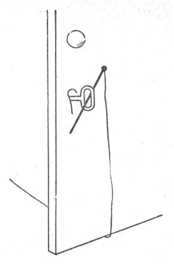
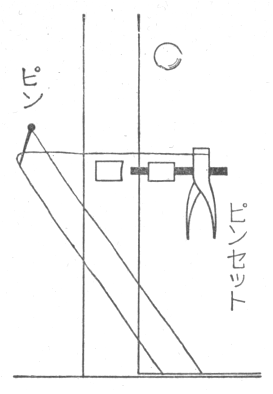
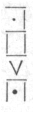

社会思想研究会出版部のすすめによって、私の随筆の中から、探偵小説のトリックを解説したものを集めてみた。トリックについては、私は別に「類別トリック集成」（早川書房版『続幻影城』に収む）というものを書いているが、これは探偵小説に慣れた人々のための項目書きのようなもので、一般の読み物としては不適当なので、本書にはその目次のみを参考として巻末に加え、内容全部はのせなかった。のちに、その「トリック集成」の部分部分を、もっとわかりやすい書き方にした随筆が幾つかあるので、ここにはそれらを集め、ほかに類縁の「魔術と探偵小説」「スリルの説」などを加え、さらに本書のために新らしく「密室トリック」三十五枚を書き下して、首尾をととのえた。
「類別トリック集成」は八百余の各種トリックを九つの大項目にわけて解説したものだが、それらの項目と本書の随筆との関係を左にしるして御参考に供する。これには巻末の「類別トリック集成」目次を参照されたい。
第一、犯人の人間に関するトリック［＃「第一、犯人の人間に関するトリック」は底本では「 第一、犯人の人間に関するトリック」］
この項目では「一人二役」と、「その他の意外な犯人」の二つが最も大きなものだが、本書の「意外な犯人」と「奇矯な着想」（の一部）はその両者から面白そうな部分を抜きだして随筆にしたものである。
第二、犯罪現場と痕跡に関するトリックこの内訳は 密室トリック
密室トリック 足跡トリック
足跡トリック 指紋トリックであるが、本書の「密室トリック」はを詳しく書き直したもの、また、本書「明治の指紋小説」はに関係がある。
指紋トリックであるが、本書の「密室トリック」はを詳しく書き直したもの、また、本書「明治の指紋小説」はに関係がある。
第三、犯行の時間に関するトリック密室トリック足跡トリック指紋トリックであるが、本書の「密室トリック」はを詳しく書き直したもの、また、本書「明治の指紋小説」はに関係がある。この項目はくだいて書いた随筆がないので、本書にはのせられなかった。
第四、兇器と毒物に関するトリック本書「兇器としての氷」と「異様な兇器」はこの項目の兇器の部分をくだいて書いたものである。毒物についてはそういう随筆がない。
第五、人および物の隠し方トリック本書「隠し方のトリック」はこの項目の中から面白そうな例をひろいだして詳記したものである。
第六、その他の各種トリックこの項目には第一から第五までのどれにも属しない二十二種の異ったトリックが列挙してあるが、本書の「奇矯な着想」（の一部）と「プロバビリティーの犯罪」はそのうちの二、三種を詳記したものである。
第七、暗号記法の分類この項目は原文がやや読みやすく書いてあるので、そのまま本書に再録した。
第八、異様な動機これも前項と同様である。ただし多少の省略を加えた。
第九、犯罪発覚の手掛りこの項目は内容がはなはだ貧弱だし、別に書き改めたものもないので、本書には省かれている。
昭和三十一年五月
江戸川乱歩
［＃改ページ］昔の探偵小説家、ことに英米、アングロサクソン系の作家が、いかに
私は昭和二十八年に、古来の主として英米探偵小説にとりあつかわれたトリックを八百あまり
ここには、私の「トリック集成」の中から、右の諸稿に重複しない、なるべく奇矯なトリックを幾つかひろいだして、ややくわしく書いてみることにする。いずれも古い作品で、探偵小説通の読者には珍らしくもない話だが、そういう古い所にかえって面白い着想が多い。一般読者にはいくらか興味があるだろうと思う。
殺人事件があれば、まず人間の犯人を考える。その虚をついて、人間以外の犯人を持ちだして、アッといわせる手は、探偵小説の開祖エドガー・ポーが「モルグ街の殺人」で先例をひらいた。人間の犯人とばかり思って捜索していたのが、意外にも大猿オラン・ウータンであったというのだ。その後の探偵作家はこの着想を継承して、ほとんどあらゆるけもの、鳥、昆虫などを犯人に仕立てて、意外感をだしている。また、逆に動物が犯人だと思ったのが、実は人間の作為だったという手法もある。その奇矯な一例。
ある曲馬団に、獅子の口をひらいて、その中に自分の頭を入れるという芸をやる獅子使いがあった。千番に一番の危険術だ。ある日、見物の前で、獅子使いが獅子の口の中へ頭を入れると、どうしたことか、獅子がガッと口をとじて、首を
あんなによく慣らしてある獅子が噛みつくというのはおかしいと、いろいろ調べてみると、その獅子が殺人事件の少し前に鼻をしかめて笑っているのを見たという者が現われた。獅子が笑ったなんて実に恐ろしい話である。
結局、人間の犯人が逮捕される。種を割ればあっけないのだが、曲馬団員の中に獅子使いに恨みをいだくものがあって、獅子の仕業と見せかけて相手を殺す目的で、一つの妙計を案じだした。というのは、獅子使いの頭に、さとられぬようにクシャミ薬をふりかけておいて、その頭を獅子の口に入れると獅子がクシャミをする。その拍子に噛みつかせようという
人間以外の犯人で珍らしいのは、木製の人形がピストルを発射して人を殺したという着想である。ある部屋に等身大の人形が立ててある。夜中、その部屋に寝ていた男がピストルで殺される。ドアには中から鍵がかけてあって、誰も出入りした形跡がない。調べてみると、人形が右手にピストルを握っていた。それが最近一発、発射されていることがわかる。人形が人を殺したのである。
種あかしは、やはり人間の犯人がいて、人形の真上の花瓶かなんかから、雨だれのように、点々と水が
もっと奇矯なのに、太陽の殺人というのがある。むろん日射病ではない。カミュの異邦人は太陽のせいで人を殺したというが、そんな心理的なものでもない。純物理的の殺人手段なのである。
密閉された一室で人が射殺されている。被害者から遠くはなれた机の上に猟銃が放り出してあり、それにこめてあった実弾が発射していることがわかる。しかし犯人の出入りした形跡は全くない。猟銃がひとりで発射するはずはないから、非常の不可思議な事件にみえる。そこへ名探偵が現われて、「これは太陽と
この種あかしは、ガラス窓からさしこんだ日光が、机上の水瓶にあたり、その丸いフラスコ型の水瓶がレンズの作用をして、偶然、旧式猟銃の点火孔に焦点をむすんだので、実弾が発射したというのだ。この着想はアメリカの古い探偵作家ポーストと、フランスのルブランが使っているが、私も学生時代に、その二人とは別に着想して、下手な短篇を書いたことがある。早さでは、ポーストと私とほとんど同時ぐらい、ルブランはそれよりおくれている。
Ａという男がＢに誘われて、夜中、ビルディングの一階にあるＢの事務所へやってくる。そこで二人は酒を呑んで話していたが、ＢはＡの油断を見すまして、突然襲いかかり猿ぐつわをはめ、手足を長椅子にしばりつける。そして、カチカチと時計の音のしている黒い箱を持ち出し、これは時限爆弾で、何時何分には爆発する。君はそれまでの命だといい、その箱を長椅子の下に入れて立ち去る。Ａは非常な恐怖にうたれて、もがいているが、まもなく意識不明になってしまう。それは、さっきの酒の中に強い催眠剤がいれてあったためだ。
どれほど眠ったのか、ふと目をさますと、やっぱり元の部屋に縛られたままである。とっさに思いだすのは時限爆弾のこと。長椅子の下からカチカチという時計の音がきこえてくる。壁にかけた時計を見ると、爆発寸前、あと二分しかない。また、もがきにもがいているうちに、どうしたことか、縄がとけてくる。あわてふためいて縄をかなぐり捨てたが、あともう三十秒だ。パッと部屋を飛び出して廊下に出る。向うに屋外へのドアがある。そのそとは三段ほど石段があって、すぐ往来のはずだ。ドアにぶっつかると、さいわい鍵はかかっていなかった。ひらいて一歩そとに踏み出す。その途端、「アッ」という声をたてたまま、Ａは底知れぬ穴の中へおちこんで行った。いつの間に、そんな深い穴が掘られたのか？ いやそうではない。一階だとばかり思いこんでいたのが、実は九階に変っていて、屋外へのドアではなくて、エレベーターのドアをひらいて、その穴の中へとびこんだのであった。Ａはもちろん絶命した。
犯人Ｂは、そのビルの九階に、一階の自分の事務所と全く同じ部屋を作っておいた。睡眠剤で眠っているＡを、その九階の部屋までかつぎあげ、一階と全く同じ長椅子にしばりつけて、その前の廊下のエレベーターのドアも締りをはずしておいたというわけである。
Ａは誤ってエレベーターの穴に落ちた過失死と認められ、犯人は少しも疑われないですんだ。ビルの一階と九階に全く同じ飾りつけの部屋があったとわかっても、それを直ちにＡの墜落死と結びつけることは、なかなかむつかしいのだ。これも三十数年前の古い作品だが、私はその印象がいまでも残っているほど、この着想を面白く感じたものである。
この「二つの部屋」のトリックは、ずっと後になって、アメリカの著名な探偵小説家カーとクイーンが別の形で使っている。ことにクイーンのは、「二つの部屋」を「二つの建物」に拡大したトリックで、石造三階建ての大きな建物が一夜にして、あとかたもなく消失するというズバ抜けた着想にまで成長させている。
イギリスのある有名な探偵作家は実に奇矯なことを考えた。夜、長い貨物列車が、Ｘ駅から次のＹ駅に到着すると中央部の貨車が一台紛失している。Ｘ駅を出るときには、たしかにあった貨車が、途中一度も停車せずＹ駅についたときに、煙のように消えうせていたのだ。その貨車には高価な美術品がたくさん積みこんであった。それが貨車もろとも盗まれたのである。一度も停車しない列車のまんなかの貨車が、一台だけ消え去るというのは、物理的に不可能なことだ。いったいどうして、そんなことができるのかと、読者は不思議にたえない。恐ろしいサスペンスに、夢中になって読みつづける。
作者はいかにしてこの不可能を可能ならしめたか。それには、実に手数のかかる大がかりな手品を発明したのである。
Ｘ駅とＹ駅の中間の淋しい山中に、廃物になった支線がある。犯人はそれを利用したのだ。目的の貨車だけをその支線に入れて、後部の貨車が切りはなされることなく、無事にＹ駅に着くようにするトリックさえあれば、この不思議がなしとげられる。そのトリックを考えだしたのである。
それには共謀者三人を必要とする。Ａは問題の貨車の中に忍び、Ｂは支線のポイントの所に待ちかまえ、Ｃは支線に
列車出発前に、あらかじめ両端にかぎのついた太い長いロープを貨車の中に隠しておき、Ｘ駅を出発するやいなや、Ａはこのロープの両端のかぎを目的の貨車の前の車の接続器とあとの車の接続器とにひっかけ、ロープは目的の貨車の外側をまわしておく。こうして太いロープで目的の貨車の前の車と後の車とがつながったわけである。
支線に近づくと、Ａは前後の車の接続器をはずし、前車と後車はロープだけで接続されているようにする。ポイントのところに待ちうけていたＢは前車の車輪が支線の分岐点を越すのを見て、急造に
車上のＡは、貨車抜き取りの瞬間、前車に飛び移り、接続器の横の
貨車消失といえば、コナン・ドイルはこの上をこす奇矯なトリックを案出した。イギリスによくある個人に貸しきりの特別急行列車全体が、Ａ駅からＢ駅までのあいだに、幽霊のように消えうせるのである。
Ｂ駅では、Ａ駅からいま問題の列車が通過したという電話を受け、待ちかまえているが、一向列車がやって来ない。そのうちに問題の列車のあとで、Ａ駅を通過した列車がＢ駅へ入ってくる。その機関士に途中で問題の列車に故障でも起ったのではないかとたずねるが、途中にはなんの邪魔ものもなかった。列車らしい影さえも見えなかったと答える。一つの列車が、空中へでも舞いあがったように、完全に消失したのである。途中に支線は一つもない。
種あかしをすると、これは多勢の共謀犯罪で、その列車を借りきった知名人を人知れず葬るための所業であった。ＡＢ駅の間に支線はないといっても、かつては鉱山への支線があったのだが、ずっと以前にその鉱山が廃鉱になり、支線も不要になったので、間違いの起らぬよう、本線の近くの部分だけ支線のレールをとりはずしてあった。だから、支線を考慮に入れる必要はなかったわけである。しかし犯人はその裏をかいて、多勢の力で別の場所から数本のレールを運んで来て、夜にまぎれて、急速に廃鉱への支線を復原した。そして、共犯があらかじめ機関車に乗りこみ、機関士をピストルで脅迫しながら、急ごしらえの支線へ乗りこませ、フルスピードを出させておいて、共犯も機関士も中途で飛びおり、そのまま列車を廃鉱へ
死の
あるアパートの一室に、ピストルを口中に入れて発射し、自殺している死体が発見された。そのそばに一挺のピストルが落ちていた。発射されたあとがあり、またピストルの表面についた指紋も、死者のものばかりであった。この事件はむろん自殺として処理された。口中にピストルの先を入れられて、無抵抗でいるような人間があるはずはなく、他殺とはどうしても考えられなかったからである。
ところが、真相は他殺であった。そういう他殺をごく自然にやり得る唯一の職業がある。それは歯科医なのだ。咽喉科の医師でもできないことはないが、歯科医のほうがいっそう便宜である。恨みのある人物の歯を治療しているあいだに、隠し持ったピストルの筒口を患者の口中に入れて発射すればよい。歯科の患者は目をつむって、大きく口をあけているものだ。絶好の状態である。そして、殺しておいて、死体を別の町のアパートの人のいない部屋に運び、そばに被害者の指紋をつけたピストルを投げすてておけばよろしい。あまり著名でないイギリス作家の短篇である。
いま一つの例は、生きていながら死んだと思いこませ、自分をこの世から抹殺するトリックである。これは種々の条件がよほどうまく揃わないとむずかしいのだが、Ａという男が早朝、暴風雨の海岸の岩の上に倒れている。これを発見した友人が、驚いて岩に駈け上り、名を呼んでも答えない。まっさおになってグッタリしている。どうも死んだとしか見えない。念のために右手首の脈をとって見ると、全く絶えていることがわかったので、あわてて医師と警察に知らせるために人家の方へ走り去る。倒れていたＡは、それを見送ってノコノコと立ちあがり、どこかへ行ってしまう。あとではＡの死体が波にさらわれたものと判断される。かくしてＡはこの世界から自己を抹殺したのである。
どうして脈がとまっていたのか？ それには手品師の使う手がある。脇の下に小さいボールのようなものを入れて腕でしめつけ、腕の動脈を強く圧迫するのだ。そうすると手首の脈は消えてしまう。この犯人はその奇術を応用したのである。これはカーの短篇。
川に水死人が浮きあがる。解剖しても普通の水死としか見えない。しかし、これにも他殺の場合がある。犯人はその川の水を洗面器に一杯くみとり部屋に運ぶ。そこへ殺そうとする人物を誘いこみ、すきをみて、その人物の頭をおさえ、顔を洗面器におしつけて、しばらく動かないようにしている。その人物は川の水を胃や肺に吸いこんで窒息死する。その死体をひそかに川に投げこんでおくのである。これは昔からよくいわれていることで、誰でも知っているのだが、長篇ではクロフツの作にこの方法が使われている。小さな洗面器による
水にぬれると異常に収縮する植物の繊維で織った布を、たえず首にまかせるように仕向ける。こちらが医者で、相手が咽喉をいためているような場合がもっとも適切であろう。場所は熱帯地方がよろしい。または熱帯を通過する汽船の上がよろしい。熱帯特有のスコールが来る。人々は喜んでこの
（「オール読物」昭和二十九年十月号）
［＃改ページ］探偵小説という小説形式が発明されてから、まだ百十年ほどにしかならないが、そのあいだに、世界各国の探偵作家が、トリックの創意を競い、人間の考えうるトリックはほとんどあさりつくされてしまい、全く新しいトリックを案出する余地は、もうなくなったといわれている。
私は戦後、英米の探偵小説を相当量読んだが、読むにしたがって、トリックのメモをとっていき、ちがったトリック八百余種を収集し、二十八年秋の「宝石」誌に「類別トリック集成」というものを書いた。その内容をごく大ざっぱにいうと、犯人の考えだすトリックは、
犯人についての不可能（すなわち意外な犯人）犯行の物理的不可能（「密室の犯罪」や足跡、指紋などのトリックが含まれる）犯行時間の不可能 意外な兇器と毒物
意外な兇器と毒物 人や物の意外な隠し方、などの項目に分類することができる。ここには、それらのうちの「意外な犯人」のトリックについて書いてみようと思う。
人や物の意外な隠し方、などの項目に分類することができる。ここには、それらのうちの「意外な犯人」のトリックについて書いてみようと思う。「意外な犯人」のトリックでもっともよく使われ、またその種類も多いのは「一人二役」である。私の集成では、八百例中の百三十例が「一人二役」の種々の変形で、第一位にある。その次は「密室の犯罪」の八十三例で、この二つのトリックが圧倒的に目立っている。
「一人二役」の一部に、被害者がすなわち犯人であったという着想がある。
一つの殺人事件で、殺した人物と殺された人物は、全く相対立するもので、この両者が同一人物であるなどとは、誰も考えない。加害者と被害者とは、どうしても相容れることのできない存在だからである。探偵作家は（ある場合には現実の犯人も）この常識の盲点に着眼して、いろいろなトリックを発明した。
私の分類の中から「被害者が犯人」の項目をひろい出してみると、左のようになる。
（１） 犯人が被害者に化ける（細分すると、犯行前に化けるものと、犯行後に化けるものとある）四十七例
（２） 共犯者が被害者に化ける（複数犯人の場合で、この方が実行はやさしい）四例
（３） 犯人が被害者の一人を装う（複数被害者の場合で、有名な作でいえばヴァン・ダインの「グリーン家殺人事件」やクイーンの「Ｙの悲劇」がこのトリックを使っている）六例
（４） 犯人と被害者と全く同一人、九例
などである。このうちでは（４）が一番不思議な感じがすると思う。犯人と被害者と全く同一人というようなことが成り立つものであろうか。これには「盗み」と「傷害」と「殺人」の三つの場合がある。
まず「盗み」の例をしるすと、その都会で第一流の美術
そこで骨董商の主人は、
「傷害」の例には、私の旧作がある。西洋の作例もあるが、それらは長く書かないと意味が通じないので、これだけは自作を引用する。戦前、陸軍の高官の邸内に起った事件で、ある夜、誰もいない主人の書斎へ泥棒が入る。主人の息子の青年が、それに気づいて、まっくらな書斎へ行ってみると、賊はピストルをうって、窓から逃げてしまう。そのピストルの弾丸が息子の足に当り、重傷なので病院にはいるが、生れもつかぬびっこになってしまう。後に盗難品は庭の池底から現われる。
これは実はその息子のひとり芝居で、書斎にあった貴金属品をハンカチに包んで、窓から池をめがけて投げこみ、盗難をまことらしくしておいて、ピストルで自分自身の足を撃ったのである。これだけ書いても、その息子がなぜ自分の足を撃たなければならなかったか、おわかりにならないでしょう。あることに気がつくまではわからない。それは
次に「殺人」の場合。殺した者と殺された者と同一人というトリックである。そんなことは全く不可能だと感じられるけれども、不可能を可能にするのが探偵小説のコツだから、ちょっとしたキッカケさえあれば、いろいろと名案が浮かんでくる。この場合のキッカケは、「自殺」という着想である。「自殺」は殺すものと殺されるものと同一人なのだから、そこから何かを引っぱり出せばよいのである。
不治の病にかかって、医師から死期を宣告されているような人物が、誰かを非常に恨んでいて、どうせ近く死ぬいのちを、早く捨てても復讐がしたいというような場合に、うまくあてはまる。恨んでいる人物に疑いがかかるように、いろいろの偽造手掛りをのこしておいて、他殺と見せかけた自殺をするという手である。このトリックは古くから内外の探偵小説にしばしば使われている。
殺した者と殺されたものと同一人というトリックには、イギリスに、ひどく突飛な作例がある。イギリスのローマン・カソリック派のアーチ・ビショップという偉い僧職にあるドナルド・ノックスという有名な学僧がある。この人が、探偵小説好きで、古くから多くの作品を書いている。長編の代表作「陸橋殺人事件」は戦前に邦訳され、探偵小説好きはノックスの名をよく知っているのだが、この人の短編に恐ろしく持って廻った、不思議な探偵小説がある。
それは、不治の病で医師から死期を申し渡された男が、死を待つ苦痛をまぬがれるために、非常な苦労をする話なのだが、この男、臆病者で、とても自殺はできない。自分で死ねないとすれば、他人に殺してもらうほかないけれども、進んで殺人罪を犯してくれるような
そこで、彼は自分が誰かを殺して、その罪によって死刑にしてもらうのが一番だと、実にまわりくどいことを考える。（断わっておくが、これはアイロニカルな小説だけれども、滑稽に書いてあるわけではない。こんなふうに正面から書くと、なんだか滑稽だけれど、原作は順序を逆にして、第三者の物語にして、巧みに書いてあるので、納得しながら読むことができる）。そこで、彼はちょっと面白いトリックを考えつき、間接な方法によって見知らぬ男を殺そうとするが、結局未遂に終ったばかりでなく、警察は少しも自分を疑ってくれない。人を殺すのも容易ではないと考える。
そこで、彼は一層まわりくどい案を立てる。他人を殺そうとするから失敗するが、自分が一人二役をやって、一方の自分が、他方の自分を殺すというお芝居に成功すれば、犯罪者になれるだろう。自分がもう一人の自分を殺すのだから、これは実にたやすいことだと考える。
彼は全く架空の人物に化けて、その本当の自分と二人で、相客のいない一等車のコンパートメントにはいる。まず架空の方の人物が先にはいり、誰にも見られないように、別の出入口からソッと抜け出し、変装をといて、本当の自分になって、もう一度車室にはいる。二度とも、車掌やボーイにそれぞれの姿を見せ、声などかけて、二人の客が同じ車室へはいったと思いこませる。
そして、次の駅に着いて、車室から出てくるのは本物の方の彼だけで、架空の人物はどこにもいない。列車の進行中に本物の彼が架空の彼を殺して、途中の長い鉄橋の上から、川の中へ投げこんだように見せかけるのである。二人の男が乗りこんだことは、車掌やボーイが知っている。それに、汽車が二人の降りる駅についても、架空の人物は消えてしまって、本物の彼だけが、なにかうさんくさいふうをして、降りてくるのだから、これは疑いを受けるにちがいない。
彼はこの奇妙なトリックを実行した。すると、今度はまんまと図にあたって、彼は希望通り逮捕され、裁判になり、有罪と決定しそうになる。さて、こうなると、あれほど望んでいた死刑そのものが怖くなる。なんとかして助かりたいと考え出す。そこで、弁護士に泣きついて、真相をうちあけ、弁護士の力で無罪になり、釈放されるのだが、その裁判所から自宅への帰り道で、うしろから来たトラックをよけそこない、至極簡単にひき殺されてしまうという話である。一種の皮肉小説だが、殺す者と殺される者が同一人というトリックの、きわめて特異な一例である。
以上は「一人二役」による意外な犯人の例であるが、私のトリック表には、「一人二役のほかの意外な犯人」という項があって、これが左の十種に分れている。
探偵が犯人その事件の裁判官、警官、典獄が犯人事件の発見者が犯人事件の記述者が犯人犯行の力なき幼児または老人が犯人 不具者、重患者が犯人
不具者、重患者が犯人 死体が犯人
死体が犯人 人形が犯人
人形が犯人 意外な多数犯人
意外な多数犯人 動物が犯人
動物が犯人この内の面白そうな項目を拾いだして見ると、
の探偵が犯人というのは、やはりずばぬけた着想といっていい。その事件を担当して活躍している名探偵が、実は真犯人であったというトリックは、それにはじめて出会ったときには、アッと驚き、非常な快感を覚えるものである。私は少年時代、三津木春影のルルウの「黄色の部屋」が、やはりこのトリックを中心にしているが、それを読んだのは、もう少し後だった。二度目だけれど、これも飛びきり面白かった。探偵が犯人だったというトリックは、一度誰かが使えば、あとから出たものはまねにちがいないので、「またか」とウンザリすることになるが、それでも、この同じトリックを使っている有名な作品が随分ある。
一ばん早いのはポーの「お前が犯人だ」で、純粋の探偵ではないけれども、最初から事件の捜査を指導していた人物が、最後に真犯人とわかるという筋で、さすがにポーはこのトリックにも
その次はイギリスのイズレール・ザングイルの長編「ビッグ・ボウ事件」（一八九一年）で、一九〇一年の「黄色の部屋」、一九一〇年の「８１３」よりもはるかに早い。ザングイルは純文学者なのだから、着想も文章もよろしく、「探偵即犯人」と「密室の殺人」の二大トリックを、十分に書きこなしている古典として、もっと認められてもよいと思う。この作については、戦後、私が提唱したので邦訳が出ている。
このトリックはザングイル、ルルウ、ルブランより後にも、英のフィールディング、米のラインハート、英のクリスティー、米のクイーンなどの長編や、チェスタートンの短編（二編）にも、くり返し使われている。日本の作家では浜尾四郎のある長編の中心トリックにこれが使用されている。
探偵即犯人についで奇妙なのは、
の「事件の記述者が犯人」のトリックであろう。その小説は、局外者のような顔をした人物の一人称の記録として書かれている。読者は、その記録の中に出てくる諸人物は誰も彼も、犯人ではないかと一応疑ってみるが、記録を書いている当人は、全く問題にしない。記録者がこの盲点をついて、クリスティーがいまから三十年ほど前に、記録者が実は犯人だったという長編を書いて、探偵小説界をアッといわせた。この作では、記録者は少しも嘘を書いていない。ただ一カ所ちょっと記述を省いたところがあるだけで、全体としては真実を書いている。それでいて、記録者が犯人なのだから、その書き方には非常な技術を要する。クリスティー女史は、それを巧みにやってのけた。そして、この長編は彼女の代表作になっている。
この作に対しては、記録者が積極的に嘘を書いていないにしても、
この記録者が犯人だったというトリックには、クリスティーの前に
このトリックも一度使われたら、あとは真似になるのだが、それでも多くの追随者があった。英のバークレイやブレイクが、同じトリックを蒸し返しているし、日本でも横溝正史、高木彬光両君の代表的な長編に、このトリックが使われている。
次に奇抜なのは
の「死体が犯人」の［＃「「死体が犯人」の」は底本では「「「死体が犯人」の」］トリックであろう。死人が兇器をふるって人を殺すなんて、あり得ないことだが、そういうあり得ないことを、あり得るように扱うところに、探偵作家の苦心がある。それはアーサー・リースという作家の「死人の指」という小説だが、実は死体は道具に使われるので、真の犯人は別にいる。しかしその犯人は犯罪現場にはいないのだから、アリバイが成りたち、一応死人の殺人となるわけである。その方法は、犯人が死人の手にピストルを握らせ、指を引金にかけておき、そのピストルが発射されたら、通夜をしているある人物に命中するような具合にしておいて、遠くへ立ち去ってしまう。すると、夜が更けるにつれて、死体硬直が起り、死人の指も硬直して、引金に力が加わり、ピストルが発射され、通夜の人が撃たれるというわけである。
実際にはそううまくいくものではないが、小説としては、巧みに書けば、一応読者を納得させることができる。目的の人に命中するかどうかは別として、ピストルの発射だけなれば、十分可能であり、現にヴァン・ダインが「ケンネル殺人事件」の中に、そういう実際上の出来事があったことをしるしている。
これと似たので「人形が犯人」のトリックもあるが、これは別項「奇矯な着想」に書いたので、ここには省く。
次に
の「意外な多数犯人」というのも、ちょっと面白い着想である。これはクリスティーのある長編に使われているのだが、進行中の列車の中で、一人の男が殺される。めった斬りにされたらしく、からだじゅうに、たくさんの刃物の傷ができている。その車輛には十数人の乗客があったので、一人々々しらべて見るが、誰も犯人を知らないという。一応は犯人が進行中の列車から飛び降りて逃げたのだと考えられる。しかし最後になって、実はその車輛に乗っていた十数人の乗客が、全部犯人であったことが判明するという筋である。十数人の乗客は皆、殺された男に深い恨みがある。そこで申し合わせて、車中でその男を殺すのだが、誰にも内通などさせないために、みんなに一突きずつ突かせたので、めった斬りをされたように見えたのである。
の「動物が犯人」というのは、警察は人間の犯人ばかり探していると、実は動物が犯人であったという意外性を狙ったもので、ポーの「モルグ街の殺人」をはじめて読む人は、やはり不思議な驚きに打たれるであろう。それは残虐な殺人事件で、しかも「密室殺人」なのだが、警察の方では人間の兇悪犯人ばかり探していると、素人探偵デュパンが、ある面白い手掛りから、動物に着眼し、巧みにその犯人を捕える。真犯人は飼主の手から逃げ出したオラン・ウータンであったというのである。この動物犯人トリックは、その後も非常に多く書かれている。ポーについで有名なのはドイルの「まだらの紐」で、被害者が「まだらの紐」と口走って絶命するので、この附近に出没する浮浪者が頭に巻いているまだら染めの布を連想して、その方に捜査が向けられるが、実は犯人がひそかに毒蛇を飼っていて、深夜ベッドに寝ている被害者のところへ、その蛇を追いやって殺害した。蛇のまだら模様が、暗中の被害者には、まだらの紐に見えたのである。
動物犯人には、妖犬、馬、獅子の
「オウムが犯人」は、窃盗である。英のモリスンの古い短編に使われている。窓が少しひらいた高い階上の密室。ドアには鍵がかかっており、窓はひらいても、地上から何十フィートも高い所にあるので、外から登ることはできない。それにもかかわらず、その室内から宝石入りの装身具が盗み出される。
その宝石は部屋の中の化粧台の上に置いてあったのだが、それがあとかたもなく消え失せて、そのそばに主人には全く覚えのないマッチの棒が一本おちている。このマッチが探偵の推理のきっかけとなるのだ。結論をいうと、その犯人は一羽のオウムを訓練して、盗みをさせていたのである。オウムは高い窓から部屋にはいり、必ず宝石のついた品物を口にくわえて帰るように仕込まれている。だが、帰りには宝石をくわえているから大丈夫だけれども、往きには口が自由なので、オウムのことだから鳴いたり、何か喋ったりするかも知れない。それを防ぐために往きには必ずマッチの棒をくわえさせて、声をたてられないように訓練しておく。そして、宝石を見たら、マッチを捨てて、宝石の方をくわえて飛び帰るように慣らされていたのである。
「意外な犯人」には、このほかに「太陽と水瓶の殺人」という奇抜なのがあるが、これも別項「奇矯な着想」にしるしたのでここには省く。
先にあげた十種のトリックのうちの
「事件の発見者が犯人」というのが、ちょっと面白いので、書き加えておきたい。「人が殺されています」と訴え出た人物が、実は真犯人であったというふうに考えると、このトリックは実に平凡だが、そういうものは、私のトリック表には省かれている。「発見者が犯人」のトリックは「密室」と組合せると、面白いものができあがる。その適例は、先にあげたザングイルの長編と、チェスタートンの短編にある。朝、いつもよりずっとおそくまで、部屋の戸があかないので、心配してノックしたり呼んだりするが、返事がない。そこで、近所の人などにも来てもらってドアを破って部屋にはいると、部屋の主はベッドの上で、鋭い刃物で喉を切られて死んでいる。まだ盛んに血が吹き出している。しらべてみると、その部屋の窓という窓は、中から厳重にしまりができている。一つしかないドアは中から鍵がかかっていて、破らなければ、はいれなかった。完全な密室である。そして、犯人は部屋の中には隠れていなかった。被害者はまだ殺されたばかりなのに犯人の逃げた出口が全くないのである。
綿密に調べてみるが、ドアにも窓にも、密室を作るためのトリックを
作者はこの不可能をどうして可能にしたか。ほかでもない「早業殺人」の応用である。真犯人は、ドアを破って室内にはいった人々の中の一人であった。彼は
被害者はドアを叩かれたとき、なぜ返事をしなかったか。切られたとき、なぜ叫ばなかったか。それは、彼の知り合いである犯人が、前夜、被害者が寝る前に、何か飲みものにまぜて、多量の睡眠剤を飲ませておいたからである。こうして事件の最初の発見者が犯人であったというトリックが成立する。
「早業殺人」は、このほかにもいろいろ応用の
（「週刊朝日」昭和三十年十月十日「推理小説特集号」）
〔附記〕
拙稿「英米短篇探偵小説の吟味」の中に、この早業殺人を扱ったチェスタートンの別の作例をあげているので、ついでにしるしておく。The Vanishing of Vaudrey（邦訳「新青年」昭和八年五月号「アーサー卿の失踪」）この作ではちょっとほかに例のない奇抜なトリックが創案されている。被害者はその時、村の床屋で顔をあたってもらっていた。床屋のすぐ裏を川が流れている。また、この床屋は煙草屋を兼業している。犯人は散歩の同行者を表に待たせておいて、煙草を買いに入り、主人が剃刀をおいて店に出て注文の煙草を探しているホンの二三秒の隙に、サッと理髪室に飛込み、そこにあった剃刀で、首をのばし目をふさいで床屋を待っていた被害者の喉を切り、サッと元に戻って、そしらぬ顔で煙草を受取り、待たせておいた同行者のところへ戻り、煙草をふかしながら散歩をつづける。
その素早さは「ひねくれた形」の、密室を破って飛び込んだ最初の発見者が、とっさに殺人をするトリックと似ているが、同行者を待たせておいて、買物のついでにチョイとやるという着想は、常識を絶した変てこなユーモアと恐怖を持っている、といっても決して遊戯的に殺すのではない。ちゃんとやむにやまれぬ動機が作ってある。
しかし、床屋が冷静なれば、この犯行はすぐバレてしまうのだが、床屋にも弱身があり、また、気の小さいうろたえものということにしてある。彼はいつの間にか客が殺されているのを見て、このまま届出たら自分の犯行と見られるにきまっていると考え、気も
［＃改ページ］
探偵小説は謎をむずかしくするほど興味があるので、実際には到底できないようなことを、さもあり得るがごとく描く場合が多い。したがって、探偵小説に取り扱われる犯人のトリックで、実際犯罪に応用できるものはきわめて少ないのである。だが、一方からいうと、事実は小説よりも奇なりという言葉があるように、また、人間の考えることは、結局だれかによって実行されるものだという考え方があるように、内外の犯罪記録を
私は戦前にはあまり外国の探偵小説を読まない方であったが、戦後は逆に外国の探偵小説ばかりを読みつづけ、それが相当の量にのぼった。読むごとに、そこに使われている犯人のトリックをノートしておき、いままで読んだ全体を分類して、統計的に調べてみるというようなことも試みた。それを表にしてみると、トリックの総数約八百例、これを大きく分けると左のような比率になる。
（１） 一人二役、替玉その他の人間に関するトリック……………………二二五例
（２） 犯罪手段に関するトリック（意外な兇器、意外な毒殺手段、種々の心理的トリック）………………………………………………………………一八九例
（３） 時間に関するトリック（乗物、時計、音響などのトリック）………三九例
（４） 犯罪の痕跡に関するトリック（足跡トリック、指紋トリックなどのほかに、探偵小説に最もよく使われる密室トリックが含まれている）……一〇六例
（５） 人（死体を含む）および物の意外な隠し場所に関するトリック…一四一例
（６） 暗号トリック……………………………………………………………三七例
これを更に細かく分類すると数十項に分けられるが、その細分の項目のうちで最も多いのは「一人二役」トリックの一三〇例、第二は「密室」トリックの八三例で、この二つが断然他を抜いている。「一人二役」にしても、「密室」にしても、大ざっぱに考えると、一度使われてしまえば、あとはその真似ということになり、いっこう興味がなさそうに思われるが、案外そうではない。それらの中にまた、非常に多くの種類があって、別の種類のものを考え出せば、やはり独創が感じられ、新しい興味がわくのである。そこで、探偵作家は同じ「一人二役」、同じ「密室」のトリックを、あらゆる角度から考え、前人の気がつかなかった新手法を発見しようとし、長い間には、右のように百例にもおよぶ異種のトリックが考案されたのである。
私はこれらの資料にもとづいて「類別トリック集成」というものを作ったが、ここにはとりあえず、そのごく一少部分を拾い出して、試みに書いてみることにする。それは前記（２）の犯罪手段に関するトリックのうちの「意外な兇器」のごく一部である「氷によるトリック」についてである。
私の採集し得た「意外な兇器」の種類は六十三例である。が、そのうち氷使用のトリックは最も応用範囲が広く、十例にも及んでいる。氷がトリック兇器としてそれほど多くの使途を持っているのは、主として水が凍るときの膨脹力と氷の溶解性とによるものである。
水が凍るときの膨脹力は、
溶解性の方は膨脹力にくらべてはるかに利用度が広い。一般的な原理をいえば、目的の室内に一個の氷塊を置き、その上に板のようなものをのせておくと、氷がとけるに従って板の位置が低くなる。その氷に
直接の兇器ではないけれども、氷の破片が「密室」を作るために利用されることがある。「密室殺人」というのはその部屋の窓にもドアにも内部から鍵がかけられ、金庫のように密閉されていて、その内に被害者が倒れている。人々はドアを破って部屋に入り犯罪を発見するが、犯人はどこにもいない。幽霊のように消えうせているという不可能状況なのである。この「密室」を構成するのには、前にもしるした通り、八十種にもおよぶ別様のトリックが考案されているが、そのうちに、犯人が目的を果してドアの外に出た上、外部からある種のメカニズムによって、ドアの内側の鍵または
氷を弾丸の形にけずって、銃器に
この氷弾の着想は必ずしも近代の探偵作家の発明ではない。ジョン・ディクスン・カーのしるすところによると、古くイタリーのメディチ家に、氷片を弓で射て人を殺した伝説があり、さらにさかのぼると紀元一世紀のローマの詩人マルティアリスのエピグラムに、これと似た方法が歌われているという。近代の探偵作家にも、氷片を弓で射るトリックを使用した例がある。いずれも痕跡がとけうせるという機智にもとづくものである。
私はかつて、これと同じことが偶然に起り、人命を絶ったという事実談を読んだことがある。たしかカロライン・ウェルズの「探偵小説の技巧」の初版本の方に、何かの犯罪記録から引用してあったのだと思う。夏の日中、繁華街の人道で人が倒れて絶命する。胸に弾痕がある。調べてみても、附近に銃器を所持していたものはない。解剖すると、ふしぎなことに、貫通銃創ではないにもかかわらず、体内に弾丸がない。
氷を満載した一台のトラックが通りすぎ、一個の氷塊を路上へ落として行く。そのあとから重い荷物を積んだトラックが進行して来て、そのタイヤが氷塊の上を通過したために、氷がこなごなになり、鋭い破片の一つが、弾丸のような勢いで人道に飛んで、通行人の体内に喰い入ったというわけであった。
氷の弾丸についで面白いのは氷の短剣の着想であろう。その最も簡単な方法としては、鋭いきっさきをもつ長い氷片で、人を刺し殺し、氷がとけてしまうまで死体が発見されないようにすれば、たとえ犯人が現場にいても、兇器の不在によって無実を主張することができる。兇器は犯人が持って逃げ去ったと考えるのが、最も自然だからである。
氷剣を取扱った作品には、もっと面白いのがある。それは科学者と小説家の合作になるイギリスの短篇だが、あら筋をしるすと、不治の病で死期を宣告された人物が、他殺のごとく見せかけて自殺し、その罪を恨みある友人に着せようとするのである。その人物は日頃から蒸し風呂が好きで、大きなトルコ風呂の常連であったが、ある日のこと熱蒸気の吹き込む密閉された部屋の一つにはいったまま、いつまでも出て来ないので、調べて見ると、胸から血を流して死んでいる。何者かに短剣で刺されたとしか考えられない。
ちょうどその時に、彼が嫌疑をかけようとした友人が、トルコ風呂の客となり、彼のはいっていた蒸し風呂の辺をうろついていたことがわかり、予想通り嫌疑がかかると、兇器の短剣はいくら探しても出てこない。どこかへ巧みに隠してしまったのだろうということで、その友人は告発される。そこへ名探偵が登場し、ちょっとした手掛りによって、事件の真相を次のように看破する。
自殺者はツララ型をした鋭い氷片を魔法
普通の部屋なれば、大きな氷片が溶けるのに時間を要するけれど、蒸し風呂の熱気の中では、それが非常に早く、また、氷の溶けた水も、蒸気の
カーター・ディクスンの長篇探偵小説に、こういうのがある。電気冷蔵庫の、小さい仕切りのある製氷函の中に毒物を注入し、凍らせておいて、カクテルを作るさい、これを取り出し、相手の目の前でシェーカーの中に入れ、自分が一と口飲んで見せる。その時は毒氷がまだとけていないので何事も起らない。話にまぎらせてしばらく時間を費し、シェーカーの中の毒氷が全くとけた頃に、グラスについで相手にのませる。これを第三者に目撃させておけば、犯人も一と口飲んでいるのだから嫌疑をまぬがれる。空のグラスの中へ誰かが前もって毒物を入れておいたのだろうと判断される。日本でも、昨年だったかの「宝石」の別冊新人集に、これと同じトリックを使っている短篇があったのを覚えている。
ドライアイスが溶けると炭酸ガスになることを利用し、
いま一つ書きもらせないのは、花を封じこめた防暑用氷柱による殺人の着想である。ある人物が庭の隅に倒れて死んでいるのが発見される。頭部を鈍器で殴打されたらしく、頭蓋骨折が致命傷である。しかし、綿密な調査の結果、殺人の行われたとおぼしい時間の前にも後にも、庭のその箇所へ近寄ったものは絶対にないことが明かになった。また、その附近に傷あとに符合するような石塊その他の鈍器は何も発見できなかった。非常にふしぎな事件である。そこへ名探偵があらわれ、死体の近くに落ちていたある夏草の花に注意する。それは茎の根元から切り取った生け花らしいもので、夏の炎天にさらされて、すっかりしおれている。探偵はこの花から防暑用の花氷を連想する。そういえば、死体は隣家の三階建ての洋館の裏に倒れていたのである。
もしその三階の窓から、何者かが被害者の頭上めがけて、大きな花氷を投げたとすれば、すべての状況が適合する。花氷は死体が発見されるまでに、炎天のためにとけ去り、その水分もかわいてしまったが、花氷の中の夏草だけが地面に残っていたというわけ。探偵は、この推定にもとづいて、洋館の住人を調べたところ、果して三階の窓から、花氷を投げたものがあったという筋である。
このほか氷を利用した殺人の着想はまだいろいろある。たとえば、凍結した湖水の一カ所に、人間のおちいるほどの穴をあけ、その上にさらに氷が張るのを待って、被害者をスケートにさそい、巧みにその薄氷の上に導いて、過失死と見せかける着想。やはり雪国の事件で、被害者が深夜、坂道の下にうずくまって、しばらく動かないでいるような、特殊の事情を、小説の筋としてこしらえておく。犯人はそれを知っていて、雪をかためて人間に近い形にし、その前面に短剣の柄の方をさしこみ、被害者が坂下で、うずくまる時間に、その雪人形が坂をすべりおちるようなメカニズムを用意しておく。そして、自分は二三人の友人と、どこか遠方で酒を飲んでいる。予定の時間が来ると、メカニズムの作用で、雪人形は坂をすべり出し、加速度の力を加えて、うずくまっている被害者の背中を刺す。兇器は現場に残るけれども、何ら人の近づいた痕跡はない。酒を飲んでいた友人の証言によってアリバイは完全である。雪人形は散乱して、ちょうどその辺にうず高くたまっていた雪掻きの山と混り合ってしまう。しかし、この目的を果すためには被害者の位置と雪人形のすべる道とが完全に一致しなければならないので、実際問題としては不可能に近いのだが、そこは小説のことだから、そういう都合のよい状況を巧みにこしらえて、前もって読者が不自然を感じないようにしておく。
私が採集した氷を兇器に使用する着想は、大体以上のようなものである。こういうふうにトリックだけを露出すると、いかにも子供らしいものになってしまうが、小説で読めば一応うなずける程度に書かれている。探偵作家はこれらのトリックの骸骨に、小説技巧の肉づけをすることによって、迫真性を与えなければならない。ここに探偵小説というものの、むずかしさがある。その技巧の如何によっては、これらのトリックがさもまことしやかに感じられ、読者を驚異せしめることもできるのである。
実際の犯罪事件では、ここに列挙したような、持って廻ったトリックが使われることはめったにない。たとえ使われたとしても、小説のように都合よくいくはずはなく、知恵をしぼればしぼるほど、そこに必ず何らかの手掛りが残り、かえって発覚を早めるばかりであろう。実際の事件では、無智で、でたらめの犯罪の方が、はるかに捜査困難なのである。しかし、こういう奇抜な犯罪手段を考えつくものが絶無とはいい切れない。前にしるしたように、氷の矢の着想が、古くメディチ家の記録に残っていること、氷の破片が通行人の胸にはいって、銃創と誤まられた事件などから考えても、全く起り得ないことではない。事実は小説よりも奇なりという考え方からすれば、実際の犯罪捜査に関心を持つものは、探偵作家の突飛な着想をも、一応は記憶にとどめておいても、必ずしも無駄ではないであろう。
（「犯罪学雑誌」昭和二十七年三月復刊号）
［＃改ページ］西洋の事例の前に、ちょっと日本の江戸時代の例を考えてみると、私には異様な兇器として、宇都宮の吊天井と、八犬伝の「船虫」の話が思い浮かぶ。被害者の睡眠中に、その部屋の天井全体が落下して、圧死せしめるというのは、実に大がかりな奇想天外な思いつきで、フランスの「ジゴマ」や「ロカンボール」の着想と類似している。ドイルのシャーロック・ホームズ物語の中に「技師の
八犬伝の「船虫」という毒婦の話は、小酒井不木の「殺人論」の引用で気づいたのだが、その個所の文章は次のようなものである。
「是よりして船虫は、十字街妓 に打扮 て、夜毎に浜辺に立つものから、客をひくべきためのみならず、その懐にものあるをば、媾合の折、唇をまじへて、舌を噛みきって殺し、屍骸を海に棄つるに、媼内 は妓有 になりて、初 よりその辺に在り、なお手に及ばざるものあれば、力をあはせとりひしぎて、走らすことなかりしかば、かくても人の知らざりけり」
というので、接吻の際に相手の舌を噛み切るという着想は、いわゆるエログロの妙があって、なかなか面白い。舌を切って致命傷になるかどうかはわからないが、一時は気絶するほどの苦痛を与えるに相違ない。西洋の毒殺法に、カプセルで包んだ毒薬を口に入れていて、接吻の際相手の口中に送りこむというのがあるが、舌を噛み切るほうが、いっそう派手やかである。西洋探偵小説のトリックとして使われている異様な兇器では、氷を刃物の代用にする方法が最も面白い。先端を鋭くして氷の破片で刺殺すれば、兇器は溶けて無くなってしまうので、証拠が残らない。不可能としか思われない殺人が行われることになる。氷の利用法はいろいろあって、古いところでは紀元前一世紀のローマ詩人マルティアリスのエピグラムに、鋭い氷の長い破片を、矢の代りに弓につがえて撃つ方法が歌われている。中世期になっては、例のイタリーのメディチ家の誰かが、この方法を実際に使って人を殺したと伝えられている。やはり兇器の矢がとけて消えうせてしまうところにこの方法の特徴がある。そのほか氷の利用法はいろいろあるが、これについては別項「兇器としての氷」に詳説したので、ここには繰り返さない。氷のほかの最も奇抜な兇器では、「太陽と水瓶の殺人」というのがある。これもしばしば書いているので、省くことにする。
私が西洋探偵小説から採集した異様な兇器の例は六十余りあるが、小説としては面白くても、その方法だけを摘記したのでは、さしたることもないようなものが多い。その中からなるべく奇抜なものを拾い出してみると、探偵小説を読み慣れた人には珍らしくないのだが、「加速度による殺人」というのがある。ある男が
動物を兇器として利用するトリックにも、いろいろ面白いのがある。ある小説では、棒の先に、獅子の爪とそっくりの金具をとりつけて、殴打殺人する。附近に獅子などのいない場所で、獅子の爪痕で殺されているのだから、一種怪談めいた恐怖を感じさせるのである。
汽車の中で、一人の婦人が、頭部に鉄のステッキででも突いたような傷を受けて死んでいる。同乗の客が全部調べられるが、そんな兇器を持っているものは一人もない。また婦人を殺すような動機を持った人も全く見当らなかった。不思議な殺人事件として迷宮に入ろうとした時、名探偵が真相を発見する。その列車とすれちがった貨物列車の一つの貨車が牛を運んでいた。その牛が窓から少し頭を出していたとき、こちらの婦人も上半身を窓からのり出したので、徐行中ではあったが、偶然、牛の角が婦人の頭にぶつかるような状態になった。夜中なので、同乗の客は眠っていて、この出来事に気づかなかったというのである。
ある男が路上に倒れて死んでいる。警官も来ていろいろ議論しているところへ、名探偵が現われる。そして、この殺人の兇器は地球だという。途方もなくでっかい兇器という点の面白味がある。しかし、これは単なる逆説で、実はその男は階上の窓から墜落して死んだのである。つまりその男の致命傷は、固い土地にぶつかったことによって出来たのだから、この事件の兇器は、とりもなおさず地球そのものだという逆説にすぎないが、探偵小説ではこういう逆説が、非常に面白い効果を出すことがある。
ガラスというものも、氷と同じように使いみちが多い。鋭いガラスの破片で人をころし、そのガラスの血をよく拭いて、そこにあった金魚鉢の底へ入れておくというトリックがある。犯人は現場にいても、兇器がない。ナイフなど、とっさに隠すひまのなかったことが分っている。まさか金魚鉢の底のガラス板とは気がつかないのである。
ガラスを粉末にくだいて、食べものにまぜて食わせると、ガラスの粉が胃壁に刺さって出血を起し、死なないまでも、重病になる。これを殺人手段に使った探偵小説はたくさんある。これは毒薬の一種といえないこともないが、微細なる兇器ともみられるであろう。
静脈に空気を注射すると、場合によっては死ぬのだが、探偵小説では、それも殺人手段としてよく使われる。毒物を注射するのでなくて、何の害もない空気を注射することによって、命を奪うというところに、異様な恐ろしさが感じられるためであろう。
（「読切小説集」昭和二十八年十一月増刊）
［＃改ページ］ここに一つの完全に密閉された洋室がある。すべての窓に内側から留め金がかかり、すべてのドアに内側から鍵がかかっている。その部屋の中で一人の人物が殺されている。不審をいだいた人々が、合鍵がないので、ドアをうち破って室内にはいって見ると、死体が横たわっている。ところが、不思議なことには、犯人の姿がどこにも見えない。内部から締りをした部屋だから、犯人の逃げ出す道はどこにもなかったはずだ。よく調べて見ても、天井にも、壁にも、床板にも、隠し戸などは全くない。暖炉の煙突は狭くて幼児でも通りぬけられない。換気窓も同様に狭い。人間一人煙のように消えうせるか、ナメクジのように伸縮自在のからだになって、ドアの下部の隙間からでも這い出したとしか考えられない。
実に不気味な、不可思議な謎である。もしこの全く不可能にみえる謎を、合理的に解いてみせることができたら、どんなに痛快だろうというのが、小説としての密室トリックの起りである。探偵小説は、一見不可能に見える異状な謎を、機智と論理によって、明快に解いてみせる面白味が中心となっているものだが、そういう興味の典型的なものが、この密室事件なのである。文章で描かれた不可能な情況というものは、どこかに隙間があるように思われ、確固不動の感じを与えにくいのだが、密室となれば、それが幾何学の図式のように具体的で、
探偵小説史で、この密室の「不可能」を最も早く主題とした作品はポーの「モルグ街の殺人」であるが、このポーの作品や、ずっと後に出たルルウの「黄色の部屋」にテーマとして
しかし、密室の謎を扱った物語は、もっとずっと古代までさかのぼることができる。紀元前五世紀のヘロドトスの「歴史」の中に紀元前一二〇〇年ごろのエジプト王ランプシニトスの話があり、密室の謎の原始形が見られる。王の宝庫を建てることを命じられた建築技師が、自分の子供たちのために、秘密の抜け穴を作っておいて、その開き方を遺言し、息子たちがそこから忍びこんで宝物を盗み出す話である。同じギリシアの紀元前二世紀の作家パウサニアスも、建築家アガメデスとトロポニオスの話で、同じ抜け穴のある密室の謎を書いている。
いま一つの古い例は旧約聖書のアポクリファ（外典）にある「ベルの物語」である。バビロン王はベルという偶像神を崇拝していた。羊や穀物やあまたのお供物をそなえて、神殿の扉をとざし、錠をかけて誰も出入りできないようにしておいても、一夜の内にお供物が消えてなくなる。密室の怪である。これはベル神が喰べてしまうのだと信じられていたのを、ダニエルという青年が探偵の役目を勤めて、その秘密のカラクリを暴露する。神殿内の祭壇の下に秘密の通路ができていて、夜中そこから、坊主共が忍びこみ、お供物を持ち去っていたのである。
ヘロドトスにしても聖書外典にしても、秘密の出入口があるので、いまの目で見れば、アンフェアな密室の謎だが、そういえばポーの「モルグ街」にしても、窓のさし釘が内部で折れていたというアンフェアなものである。では、そういう欠点のない最初の「密室」小説は何であろうか。ドイルの「まだらの紐」（それの収められた「ホームズの冒険」は一八九二年出版）とザングウィルの長篇（一八九一年出版）とがほとんど同じころに書かれたが、「まだらの紐」の単純さに比べて、密室としてはやはり後者の長篇の方が読みごたえがある。この作品は、西洋でも大して問題にされていないけれど、当時としては最も進んだ密室トリックを用い、またいま一つの大トリックに先鞭をつけている意味で、大いに重視しなければならない。
さて、私は各種のトリックを、
犯行時、犯人が室内にいなかったもの 犯行時、犯人が室内にいたもの 犯人と被害者が室内にいなかったものの三つに大別し、それをまた小分けして以下しるすように分類してみた。西洋の作家で「密室の分類」を試みた例を二つ知っている。一つはカーの「三つの棺」の「密室講義」の章、もう一つはクレイトン・ロースンの「シルクハットから飛び出す死」（未訳）の「質問する
私の左の分類は、この両者を参照したが、私のは両者と少しちがった統一原理によっているし、両者にないものも多少加わっているので、対照のために、私の各項目の下にカッコして、（Ｆ・Ａ・１）（Ｍ・Ｂ・２）の如く附記しておく。Ｆはフェル博士の分類、Ｍはマーリニの分類を意味し、Ａ・Ｂはそれぞれの大分類、１・２などはそれぞれの小分類の項目番号をあらわす。
（１）室内の機械的な装置によるもの
（Ｆ・Ａ・３）（Ｍ・Ａ・４）★電話の受話器をとると送話口から弾丸発射 ★受話器に強電流を通じておいて、それを持った者を殺す ★壁穴にピストルを仕掛けておいて、その
（２）室外よりの遠隔殺人
（少し開いた窓、ただし地上三階以上の室にて、窓より侵入、脱出は不可能、または小さな隙間のある密室）（Ｆ・Ａ・６）（Ｍ・Ａ・６）★向側のビルの窓から、ツバのない短剣を銃に
そのほか数行では説明できないこの種のトリックがいろいろあるが、非常に有名な作品の例を一つだけしるすと、★被害者は密閉された部屋で、小さい毒矢で胸をうたれて死んでいる。どこにも隙間がない。通風孔にもこまかい金網が張ってある。窓ガラスやドアの鏡板をはずした形跡は全くない。それにもかかわらず、名探偵は「この部屋には四角な窓がある」と断言する。警察官がいくら考えても、四角な窓は発見されない。それは純洋室には必ずある四角な窓である。サア、どこでしょう？ ――種明かし、ドアのノッブ（把手）です。丸い握りのついたドアのノッブの心棒の金属は四角な棒である。それの通っている穴も四角で、そのドアの中にある四角の穴そのものが回転するようにできている。この四角の棒に丸い握りの部分をはめて、ネジ釘でとめてある。先ず外の方の握りのネジをドライバーではずし、心棒ばかりにして、それを細い針金でくくり、心棒をソッと室内へ突きおとす。針金がついているので床には落ちないで宙にさがっている。そのあとに小さい四角な穴がひらく。これが「四角な窓」である。被害者が内部からドアに近づくのを見すまして、半弓で細い毒矢を、その穴から射込む。目的を達したら、針金をうまく引っぱって、心棒を元の通りに引き出し、握りをネジ釘でとめて、指紋を拭いて立ち去るという順序である。
このトリックに対して、アメリカのある少年作家が挑戦した。四角な窓も面白いが、ドアにはもっと簡単な盲点がありますよというのだ。それは、二つの部屋があって、奥の部屋に被害者となるべき男が一人で腰かけている。二つの部屋の境のドアは壁と直角にひらいたままになっている。奥の部屋にはそのドア以外に絶対に隙間がない。次の間には道路に面した窓がひらいているし、外へ出るドアもあって、開放的である。この次の間の窓の前の椅子に一人の女が腰かけている。その状態で銃声が聞こえ、奥の部屋の男が
（３）自殺ではなくて、被害者自らの手で死に至らしめるトリック
（Ｆ・Ａ・２）（Ｍ・Ａ・３）★虫歯の治療中、虫歯につめたゴムがかけて、そこから出血している隙を利用し、直接血にまじらなければ効果のない毒薬クラーレを鎮痛薬を入れた小瓶にまぜ、被害者に夜中に呑めと与える。被害者は密室の中で、それをのみ、クラーレ毒が歯の出血部から血管に入って死ぬ。犯人は発見者の中にまじって、先に室に入り、問題の小瓶を隠すという方法 ★あらかじめ怪談的な心理恐怖を与えて、または室外から有毒ガスを入れるなどの方法で、被害者を錯乱に
（４）］密室内で他殺を装う自殺
（Ｆ・Ａ・４）（Ｍ・Ａ・２）★別項「兇器としての氷」の「氷の短剣」を参照。あれを密室で行えばこのトリックになる ★横溝正史「本陣殺人事件」もこの適例。
（５）自殺を装う他殺
（Ｆ・Ｍとも無し）★巨大なギムナジウムの建物の中に一人でこもって、断食の苦行をしていた行者が、数日たっても出てこないので、内部から鍵のかけてあるドアを破って調べてみると、行者は寝台に横たわったまま餓死していた。寝台のそばの棚の上にいろいろな食物が豊富に並んでいたが、それには全く手がついていない。断食行者の意志力が人々を驚嘆せしめる。しかし、これが実は他殺であった。行者は莫大な生命保険をかけ、その受取り人を四人の印度人の弟子にしてあった。四人の弟子はその保険金ほしさに、奇抜な方法で行者を殺したのである。行者が室内で睡眠剤を呑むように段取りをつけておいて、熟睡したころを見はからい、先に
（６）室内における人間以外の犯人
（Ｆ・Ａ・６の文中）（Ｍ・Ａ・５）ポーの「モルグ街の殺人」のオラン・ウータン、ドイルの「まだらの紐」の毒蛇、別項のオウムの宝石盗みなど。（後の二例は窓半開または隙間のある密室にも属する）この項で最も巧妙なのは別項「奇矯な着想」にしるした太陽と水瓶の殺人である。ポーストあるいは江戸川が先鞭をつけた。
（１） ドア、窓または屋根に施 すメカニズム
密室構成のトリックとして、初期にはこの方法が最も多く使われた。大正時代に、ゼンキンズの短篇で、犯人が外に出てから、ドアの内側の鍵穴にはまっている鍵をピンセットと糸の仕掛で廻し、ドアの外から内側の鍵をかけるトリックを読んだときには、非常に面白かったものだが、その後ヴァン・ダインをはじめ多くの作家が、このメカニズムのあらゆる変形を考え出してしまったので、現在ではこの種のトリックは
【イ】 まずドアに仕掛けるメカニズムからはじめる。窓のメカニズムはその応用にすぎないから、あとで簡単に説明すればよろしい。ドアの仕掛けというのは、犯人が被害者を殺して、死体を部屋においてドアから外に出る。そして、ドアをしめ、内側から鍵がかかっていたような状況を、あとから作るのである。つまり、外部から内側の鍵を廻して錠をおろす方法なのである。そうすれば、犯人は絶対に脱出不可能であったという不可思議が成立する。
これには三つの条件がある。一つは、この場合は鍵はたった一つしかなく、合鍵を作る余裕は全くなかったという状況を、読者に明らかにしておかなければならない。もう一つは、西洋風のドアの鍵穴は両方にひらいていて、内側からも、外側からも鍵がさしこめるということ、第三は、西洋のドアには、ドアの下部と床との間に、必ず
ドアのしまりには、普通鍵と、差し込み錠と、カンヌキと三種あるが、この三種についてそれぞれトリックが考案されている。

第一図
鍵の場合（Ｆ・Ｂ・１）（Ｍ・Ｂ・１）〈第一図参照〉★犯人は外に出る前に、ドアの内側から鍵を鍵穴にさしこみ、鍵の根もとの輪になった穴の中へ、火箸のようなものをさし、その一端に丈夫な絹糸などを結びつけ、その糸を下にたらして、ドアと床との隙間から外へ出しておく。そして、外に出てドアをしめ、廊下に出ている糸を引けば、火箸が回転して鍵がかかり、火箸は自然に下に落ちる。それを糸で隙間から外へたぐり出し、ポケットにおさめて立ち去る。火箸でなくても金属の棒ならなんでもよろしい。竹や木だと重味が足りないので、うまく下に落ちないおそれがある。ピンセットでもよろしい。鍵に輪になった個所がない場合は、ピンセットをしめて、鍵の元のほうの遍平な個所をおさえておけば同じ働きをする。この場合落下させるときには、少し強く引かなければなるまい。★小説ではこの方法が面白いのだが、しかし、実際問題としては、こんな手数をかける必要はない。薄い鋼鉄でできたピンセット型のもので、先は尖らないで薄くなり、その内側にすべらないためのヤスリ目がはいっている道具を用意すればよろしい。犯人は内側の鍵穴に鍵をはめておいて、外に出てドアをしめたあとで、外側の鍵穴からこの道具の先をソッと入れ、探ぐるようにして、内側からはまっている鍵の先端をつまみ、グッと回転させて、錠をおろせばよいのである。この方法は小説としては少しも面白くないが、実際にはまさっている。アメリカなどでは、この道具は犯人社会に知れ渡り、「ウースティーティー」という名前さえついている。

第二図
差し込み錠の場合（Ｆ・Ｂ・３）（Ｍ・Ｂ・１）〈第二図参照〉★差し込み錠の根もとの方へ、ピンセットをグッとはめて、ちょっとの力では動かないようにしておいて、そのピンセットの根もとの方に長い絹糸を結びつける。それから、差し込み錠の動く方向の壁に、ピンを強くさして支点とする。ピンセットの糸をこのピンにかけて、下にたらし、ドアの下の隙間から外へ出しておき、これを引けば、差し込み錠がはまる。さらに強く引けばピンセットがはずれて、床におちる。これを糸で隙間からたぐり出す。しかし、それだけでは、まだ壁にピンが残っていて手掛りになるので、ピンの頭にもあらかじめ別の絹糸を結びつけておいて、仕事がすんだあとで、その糸を引いて、ドアの下の隙間から、ピンも外へたぐり出す。ほかにもいろいろやり方があるが、すべてこの原理の応用である。
第三図
カンヌキの場合（Ｆ・Ｂ・４）（Ｍ・Ｂ・１）〈第三図参照〉★ドアにカンヌキがつき、柱の方にその受け金がついている。または逆の場合もある。カンヌキが受け金にはまっていれば、ドアはひらかない。この場合はカンヌキを受け金にはまらないように、少し上にあげて、カンヌキの根もととドアの板の間に、木でも紙でもよろしい、クサビ（図の黒三角がクサビ）をはめて止めておく。このクサビに絹糸をつけ、やはりドアの下の隙間から外へ出し、その糸を引いてクサビを外へたぐり出す。クサビがとれれば、カンヌキは自然にはまる、という仕掛けである。★このクサビにはローソクと氷が用いられる場合がある。氷のクサビについては別項「兇器としての氷」の「密室と氷片」に詳説したから、ここには省くが、ローソクの方は、受け金とカンヌキのあいだにローソクをはさんで、火をつけておくと、ローソクが燃えつきたときに、カンヌキがかかるという仕掛けだが、これは
以上は西洋ドアのメカニズムだが、★日本のガラスの格子戸や、窓ガラス戸には、ネジ込み錠が多いので、日本の泥棒はこれを外からはずすトリックを考え出している。それは薄くて目のこまかいノコギリを、戸と戸の合せ目からさしこんで、ネジ錠のネジの部分にノコギリの歯をあて、根気よく、ネジの戻る方向にノコギリを動かしていると、この錠をはずすことができるのである。こんなことを書くと、犯罪手口を教えるといって叱られるかもしれないが、これは泥棒社会では周知のことで、いまさら教わらなくても誰でも知っている。それよりも被害者の方がこういうことをあまり知らないのだから、これを書くことは、一般人に対する警告として、かえって意味があるのではないかと思う。日本の泥棒は密室など作らないけれども、これを密室に応用すれば、やはり一つのトリックとなり得るのである。ドアの錯覚利用の早業（Ｆ・Ｂ・５）（Ｍ・Ｂ・５） ★犯人は鍵を持って外に出て、外からドアに鍵をかけ、鍵はポケットへ入れておく。そして、犯人も事件発見者の一人となり、ドアを破って室内にはいったとき、みんなが死体に駈けよっているすきに、ポケットの鍵をソッとドアの内側の鍵穴にさしておく。ドアを調べるのは、死体を確めるより後になるから、そのときには、人々は内側から鍵がかかっていたと信じこんでしまうのである。 ★この場合、もしもドアの上の換気窓が開閉自由ならば、そんな手数をかけるまでもなく、外からかけた鍵を、換気窓から（あるいは、もしドアの下の隙間が大きければ、そこから）室内へほうりこんでおけば、一応の目的を達する。しかし、これは内側の鍵穴にはまっているほど強力な証拠にはならない。二つの鍵のトリック（Ｆ・Ｍなし） ★同じ鍵を二つ用意し、一つをドアの内側からさして外に出、ドアをしめて第二の鍵を外から鍵穴に入れると、内側の第一の鍵は押されて室内に落ちる。そして、そのまま外からの鍵で錠をおろせば密室ができる。しかし、この場合も、換気窓から投げ入れるのと似た効果しか得られないわけである。【ロ】 窓に仕掛けるメカニズム ★窓のトリックも、ポーの「モルグ街の殺人」以来、いろいろ考案されている。（ポーのは窓の留め釘が、内部で折れていて、実は誰にでも開閉できたのだという種明かしなので、密室トリックとしてはアンフェアである）。日本の窓の戸はネジ込み錠が多いが、西洋風の上下にすべる窓のガラス戸は、カンヌキに類する留め金が使われている。このカンヌキを外からしめることができれば密室が構成されるわけである。これも紐か針金を使うのだが、窓にはドアのような都合のよい隙間がないので、ガラスに穴があることにして、そこから紐か針金を外に出して、ドアの場合と同じような操作をする。★ある作では、このガラスの穴を作るために、前もって、ガラスに向かってピストルをうって、穴を作っておくというのがある。そうすると、そのピストル発射が疑われるが、真の犯人と時間的に一致しないので、謎がいっそう複雑になり、小説が面白くなる。密室構成を可能ならしめる手段として、大げさにピストルを発射するという、パラドキシカルな興味である。（以上Ｆ・Ｍなし）
★紐も針金も不要の方法もある（Ｍ・Ｂ・３）（Ｆなし）。それは窓ガラスを一枚はずして、そこから手を入れて留め金をかけ、また元のようにガラスをはめて、パテを塗っておくのである。しかし、これはパテが新しくなるので、気づかれる危険が多い。
【ハ】 屋根を持ちあげるトリック（Ｆ・Ｍなし） ★トリックの種につきると、作者は極端なことを考え出す。ドアや窓では手ぬるい。屋根そのものを持ちあげたらよいではないかという奇抜な考え方である。三四年前クイーン雑誌のコンテストに入選した「五十一番目の密室」というのがこれで、窓やドアは完全な密室にしておいて、犯人はジャッキで屋根の一部を持ちあげ、その隙間から出入りして、あとでまた、もとの通りに屋根を下げておくという方法である。これは屋根の構造によっては出来ない場合もあるし、下げても決してもと通りにはならぬと思うが、屋根なんてものは全く捜査の盲点にはいっているのだから、そんなところを調べられる心配もないわけである。これは、ドアの場合の、鍵のかかっている方には手をつけず、逆に
★ところが、日本のある作家は、さらに一歩を進めて、屋根の一部ではなくて、バラック小屋の屋根全体を、大木の枝にかけた
★しかし、上には上があるもので、二三年前双葉十三郎に聞いたのだが、アメリカの作家が、もっと極端なことを考え出した。まず野外で人を殺しておいて、その死体の上に、大急ぎで小屋を建築して、密室を作るという着想である。簡単な小屋なら一夜で建てられるのだから、それは不可能ではない。奇想天外の珍案である。
（２） 実際より後に犯行があったと見せかける
【イ】 偽音トリック（Ｆ・Ｍなし） ★犯人は殺人ののち、前記のドアにほどこすメカニズムによって、密室を作って立ち去る。そのあとで、第三者がその室の前を通りかかると、殺されたはずの人物の話し声がドア越しにきこえてくる。これで、その時間には被害者はまだ生きていたという証人ができる。一方、犯人はその時間に別の場所で友人などと会い、アリバイを作っておく。そこで、密室の不可能のほかに、被害者が生きている時に、犯人は友人と話していて、ずっと現場には近づかなかったという確証ができる。――その種明かし。被害者をごまかして、あらかじめ蓄音器のレコードに、被害者の話し声を吹き込んでおき、殺人ののち、密室内にそのレコードを仕掛け、適当な時間に廻りだすような装置をしておくのである。★このレコードの代りに、ピストル殺人の場合、ほんとうに殺すときには消音ピストルでやっておいて、暖炉の中へ花火を仕掛け、口火を長くして、犯人が他の場所で、第三者と話している時に、発火するようにすれば、その音によって殺人はそのときに行われたと考えられ、犯人は確実なアリバイがあり、嫌疑をまぬがれる。★鈍器による殴打殺人の場合は、犯行よりずっとあとで、密室内で何かが倒れたり、落ちたりするように装置しておき、その物音の起ったときに、殺人が行われたと思わせる方法もある。★また、犯人が腹話術師の場合は、密室を作ったあとで、ドアの外で第三者の通りかかるのを待ち、腹話術で被害者の口まねをして、ドアの中からのように聞かせ、まだ生きていると見せかける手もある。
【ロ】 視覚をあざむく（Ｆ・Ｍなし） ★前記は耳にたいする
【ハ】 また、一人二役トリックと密室トリックと組み合せたもの（Ｆ・Ａ・５はこの変形）（Ｍ・Ａ・７）もある。犯人または共犯者が、犯行ののちに、被害者に化けて人の前に姿を現わし、アリバイを作る方法もある。
【ニ】 この種のトリックで最もすぐれているのは、ルルウの「黄色の部屋」であろう。（Ｆ・Ａ・１）犯人に好意を持つ女が、寝室で犯人に殴打され重傷を負うが、女は犯人をかばうために、重傷をかくして寝室にとじこもっている。それからしばらく後に、寝室に中から鍵をかけて眠っているあいだに、悪夢を見て寝台から落ち、物音を立てる。ドアの外にいた人々が驚いてノックするが答えがないので、ドアを破って入って［＃「入って」は底本では「入て」］みると、女は床に倒れて気を失っている。見ると恐ろしい打撲傷がある。ベッドから落ちてできるような傷ではない。しかし女は犯人に殴打されたことを絶対にうちあけないので、物音のしたときには室内に犯人がいて、ドアを破っているうちに、全く出口のない部屋から消えうせてしまったとしか考えられず、不思議な密室事件が構成されるのである。こんな風に書いたのでは面白くないが、「黄色の部屋」の心理的盲点を利用したこのトリックは、古来のあらゆる密室トリックのうちでも、最もすぐれたものの一つである。
（３） 実際より前に犯行があったと見せかける
（Ｍ・Ａ・８）（Ｆなし） これは密室における早業殺人である。これについては別項「意外な犯人」の「事件の発見者が犯人」の個所に詳説したから、ここにはくり返さない。（４） 最も簡単な密室トリック
（Ｍ・Ｃ） これはロースンの主人公マーリニが密室講義の中で、カーのフェル博士の講義にはないものだといって、（Ａ）（Ｂ）のほかに別に（Ｃ）項を設けて得意がっているトリックだが、実は子供だましで、犯人は犯行後、部屋から出ないで、ドアがこじあけられるのを待っている。そして、ドアがひらいたら、ひらいたドアと壁のあいだに身をかくし、みんなが死体に駈けよっているすきに、室外に脱出するという方法である。一見ばかばかしいようだが、実際問題としては、存外可能性があるようにも思われる。（５） 汽車と船の密室
進行中の列車、航海中の船は、外部と隔絶されるので、列車または船そのものが密室を構成する。ことに西洋の汽車のコンパートメントは、手ごろの密室の舞台になるので、よく小説に使われる。飛行機も同様であるが、これはトリックがむずかしいのか、旅客飛行機を密室トリックに使った作品では、これというものを知らない。これらは密室の舞台が変っているというだけで、トリックの原理は建物の場合と同様である。（Ｃ） 犯行時、被害者が室内にいなかったもの
（Ｆ・Ａ番号なし）（Ｍ・Ａ・９）
密室事件で、被害者の方も室内にいなかったというと、不思議にきこえるが、★他の場所で殺した死体をその部屋に持ちこみ、密室を構成するか、★または被害者が重傷を受けてから、その部屋まで歩いてきて、何かの理由で、内部から鍵をかけて死ぬ場合である。その理由は犯人をかばうためか、自分を傷つけた敵が追っかけてくるのを恐れるためかのいずれかである。これらの場合、被害者が絶命してしまえば、全く事情がわからないので、ひどく不思議な事件になる。密室が構成されているからには、犯人が作った密室だろうと疑ぐってしまうから、わからなくなるのである。密室トリックを知っている人ほど、これにごまかされる。密室小説としては一種の逆手というべきであろう。★この項に属するもので、室外で殺した死体を、密室になっている美術室の高い窓からほうりこんで、そこで殺されたように見せかけるという、人間投擲 の奇抜なトリックを考え出した有名な作家がある。
これには二様の意味がある。★一つは高い階上の密室で、窓のひらいている場合、犯人が犯行後、綱渡りその他の曲芸によって高所の窓から脱出するトリック（Ｍ・Ｂ・４）（Ｆなし）と★もう一つは脱獄のトリック（Ｆ・Ｍなし）である。これは密室トリックの逆のトリックだが、トリック分類としては、やはりここに入れておくのが妥当のようである。実際の脱獄にはいろいろ巧妙な手がある。懐中時計のゼンマイにノコギリのような歯をつけたもので、根気よく窓の鉄棒をこすって、脱出路を作るとか、獄中の内職で使う材料の布や紙を少しずつためておいて、長い縄にない、それで高い窓から伝いおりるとかいうのは、面白いけれども、探偵小説のトリックとは性質のちがうものである。アメリカのフーディニという大奇術師は、世界を巡歴して各国の牢獄を脱出して見せたり、金庫の中へとじ込めてもらい、そこから脱出して見せたりした。これはむろんトリックがあるのだが、探偵小説のトリックとして利用できるようなものは少い。フーディニの伝記には、その各種トリックの種明かしが出ていて、奇術の種本としては非常に面白いのである。★小説で脱獄トリックの有名なものにはルブランの「ルパンの脱獄」、フットレルの「十三号独房の問題」、ロースンの「首のない女」などがある。ルパンが独房で病気と称して長いあいだ寝たままでいるあいだに、変貌をとげ、法廷に引き出されたとき、全くの別人、すなわち替玉と思いこませて、釈放されるトリック ★フットレルの主人公の学者名探偵が、力量をためすために、牢獄に入り、牢内に鼠が現れることから、地下に使用しなくなった古い下水管が通っていることを察し、鼠を根気よく手なずけて、シャツをほぐした糸を、その鼠の足に括 りつけて、床の穴に追いこみ、外界との連絡をして、結局、窓の鉄棒を切るための硝酸の小瓶を、外部から送りこませるというトリックなど、巧みに描かれているので、小説としては非常に面白い。「首のない女」はやがて邦訳されるのだし、一口でいえないようなトリックなので、種明かしは避けることにする。
（昭和三十一年五月、この本のために書き下ろす）
［＃改ページ］「もういいかい」「まあだだよ」の隠れんぼうの面白さは機智とスリルにある。私の子供のころ、名古屋地方には「ゴミ隠し」という遊びがあった。一人の子供が地面に四角な区劃を描いて、ある特定のゴミ、マッチの棒などの木や
青年時代、友達と二人で、
探偵小説にはこの「隠し」の興味がしばしば取り入れられる。犯人が隠して、探偵が探すのである。その最もすぐれた例は、ポーの「盗まれた手紙」であろう。心理の逆をついて、隠すかわりに、わざと目の前に放り出しておくという手である。チェスタートンはこの手を人間の隠し方に応用し「見えぬ人」を書いた。郵便配達夫の職業が盲点となって、すぐ前にいてもわからないのである。それをまたクイーンが長編の「Ｘの悲劇」に応用した。車掌や渡し船の切符切りが、隠れ
トリックといえば、すべて何事かを隠すためのトリックに相違ないが、ここでは物品を隠す場合と、人間を隠す場合の、古来用いられたトリックを、幾つか思い出してみたいと思う。隠す品物では、宝石、黄金、書類などが最も多いが、かつて私がメモをとった「トリック表」を見ると、まず宝石類の隠し場所としては犯人が自分のからだの傷の中へおしこむ、
宝石を呑みこんで、あとで排泄物の中から探し出すとか、婦人が局部に隠すというのは、小説としてはかえって平凡だが、傷口に隠す手は、小さなものを隠すために、自分のからだを傷つける、または、すでにある傷をひらいておしこむという、大きな苦痛をこらえるところに、奇妙なスリルがある。私のメモにはこのトリックの作例として、ビーストンの「マイナスの夜光珠」があげてあるが、ほかにもあるだろうと思う。「血
小説として奇妙な味の忘れがたいものはドイルの「六つのナポレオン」の、同じ型の石膏像が六つあって、そのうちのどれに宝石を隠したかわからなくなるという着想と、同じくドイルの「青い紅玉」の、宝石を鵞鳥に呑ませて隠したところ、どの鵞鳥だったかわからなくなるという着想である。アーサー・モリスンの長篇「十一の
金貨を隠すトリックでは、ロバート・バーの短篇に奇抜なのがある。老人の守銭奴が莫大な金貨を死蔵していたが、彼の死後、その金貨が行方不明になって、いくら探しても分らない。家探しをし、天井や床板までめくって見るが、出てこない。地中に埋めた様子もない。ところが、金貨は、たえず探し手の目の前にさらされていたのである。老人は生前、火炉やフイゴやカナシキなどを買入れて、何か鍛冶屋のような真似をしたことがわかるのだが、それは全部の金貨をとかして、のべ金にした上、紙のように薄くたたきのばしこれを家じゅうの壁にはりつけ、その上から普通の壁紙を貼って隠したのである。金貨を驚くべき広さにひきのばして、部屋部屋に充満させたという意表外の隠し方に興味がある。
カーのある短篇に兇器の隠し方で面白いのがある。室内で一人の人物が鋭い短剣で殺されている。この部屋は一種の密室で、兇器は絶対に部屋から持ち出し得ないような状況なのだが、それにもかかわらず、室内をいくら探しても短剣が出てこない。不可能がなしとげられたかに見える。しかし、実はこの場合も兇器はたえず探し手の目の前にあったのである。兇器は鋭いガラスの破片であった。犯人はそれを室内に置いてあった大きな金魚鉢のようなガラスの容器の中に沈めて逃げたのである。水に入れる前に、よく血を拭ったことはいうまでもない。
これに似たトリックで兇器を隠すのではなくて、消滅させてしまうのがある。それは鋭くした氷の破片またはツララを短剣として利用するもので、まもなくこの兇器はとけてなくなってしまう。この種のトリックについては別項「兇器としての氷」に書いてあるのでここにはくりかえさない。
書類または紙片の隠し場所ではバイブルなどの厚い表紙をはがして、その間にはさんでおく手がしばしば用いられるが、これは平凡である。私は紙幣を植木鉢の土の中に隠させたが、これもいっそう平凡だ。しかし植木鉢の例は西洋にもあり、クロフツがある短篇に使っている。紙片の隠し場所で奇抜なのはルブランの「水晶の栓」の偽眼のうつろの中へ隠す手であろう。これと似たものでは、自殺のための毒薬の隠し場所に、フイルポッツは偽眼を使ったが、これには偽歯の使われる場合もしばしばある。
探偵小説に現われた人間の隠れ場所にも、いろいろ奇抜なのがある。重大犯人が、別の軽い罪を犯して入牢し、牢屋そのものを隠れ場所とする手、病人を装って病院に入院して隠れる手などよく用いられる。先にしるした犯人が郵便配達や車掌に化ける手も面白い。チェスタートンは飛びきり奇抜なトリックを思いつく名人だが、この「人間隠し」の手法でも、彼の着想が最もきわ立っている。脱獄囚が逃げて行く道に大邸宅の仮装舞踏会があった。脱獄囚は例の太い縞の囚人服のまま、その中へまぎれこんで、追手の目をくらます。邸内では囚人服の仮装とは妙案妙案と拍手をあびる。
ドイルの短篇には、警官に包囲された邸内から、ちょうどその時病死者があったのを幸い、普通より大きな棺を作らせ、死人といっしょに棺の中に横たわって邸外にかつぎ出され、警官をくらますトリックがある。クリスティーの短篇には、犯人が婦人のベッドの
もっと簡単な手品では、犯人が
以上は生きた人間の隠し方だが、死体の隠し方トリックには、非常に多くの例がある。私の「トリック表」には、これを大別して、
永久に隠すトリック一時隠すトリック死体を移動して隠すトリック顔のない死体、の四種類としている。の死体を永久に隠す方法では、地中埋没、水中に沈める、火災または火炉で焼却する、薬物で溶解する（日本の例では谷崎潤一郎の「白昼鬼語」）、の死体を一時隠すトリックでは、クロフツの「樽」、ナイオ・マーシュの羊毛のチェスタートンには、戦場で将軍が私怨によって部下を殺し、その死体を隠すために、負けるときまった戦闘を開始して、味方の死体の山を築き、私怨による死体を戦死と見せかける思いきったトリックがある。たった一人のために数十人を
の死体の移動では、カーの長篇やチェスタートンの短篇に例があるように、死体を殺人現場から全く別の場所に運び、後の場所で殺人が行われたと思いこませて、捜査を困難にするトリックが基本的なもので、これに種々奇抜な工夫がつけ加えられて、無数の型を生んでいる。戸外で物音をさせて、被害者を窓からのぞかせ、一階上の部屋から、輪をおろしてその首に引っかけて、つるし上げ、そのまま建物の裏側の窓からおろして、地上に待機していた共犯者に渡し、共犯者は、その綱を庭の木の枝に
移動トリックでは、汽車の屋根を使うものが思いもよらぬ味を持っていて最も面白い。これらの先鞭はドイルの「ブルース・パーチントン設計図」で、ブリアン・フリンという作家が長篇「途上殺人事件」で汽車を二階つきの乗合馬車に［＃「乗合馬車に」は底本では「乗合場所に」］替えて同じトリックを使い、日本では私の「鬼」、横溝正史の「探偵小説」がこの着想を借りている。死体を貨物列車の屋根にのせ遠く隔ったカーヴの地点で、それが地面にふりおとされ、殺人はその地点で行われたかに見えるのである。
もう一つ著しいものは、犯人の作為がなくて、被害者自身が歩いて移動したために、捜査を困難ならしめるという着想がある。ヴァン・ダインのある長篇では、鋭利な刃物で刺された被害者が、致命傷とも意識せず、自室まで歩いて行って、ドアに中から鍵を書け、そこで絶命したために、非常に不思議な殺人事件の外貌を呈する。落語の「首提燈」に類する話である。カーはさらに一歩を進めて、ある長篇で、屋外でピストルで頭部を撃たれた被害者が、ノコノコ歩いて家に帰ってから絶命するので、ふしぎな事件になる話を書いている。そして、そんなことができるものかという読者の非難をのがれるために、頭部を撃たれても即死しなかった犯罪史上の実例を引用している。
カーは死体移動のいろいろな手を案出して、長篇の中心トリックとしているが、それにはまず複雑な状況を組立てておかなければならないので、簡単に説明することはむずかしいが、その極端なものは、殺した死体を廊下ごしに投げて、落下した場所で殺害された如くみせかけるのである。これを一層極端にしたのが大坪砂男の「天狗」で、石弓のしかけで死体を遠くへ
これと似たものでは、いま作者の名を忘れたが探偵雑誌「ロック」の懸賞に当選した作品の中に雪除け機関車で、死体を遠くへはね飛ばして、ふしぎな状況を作る話がなかなか面白かった。
潮流を利用して死体または死体をのせた舟を移動せしめ捜査を困難にするトリックもよく使われる。西洋では合作小説「フローティング・アドミラル」、日本では蒼井雄の「黒潮殺人事件」、飛鳥高のある作、島田一男のある作などにその例を見る。
の「顔のない死体」トリックについては、別項に書いたので、ここにはくりかえさない。（「探偵クラブ」昭和二十八年八月号）
［＃改ページ］確率を計算するというほどではなくても、「こうすれば相手を殺しうるかもしれない。あるいは殺し得ないかもしれない。それはその時の運命にまかせる」という手段によって人を殺す話が、探偵小説にはしばしば描かれている。むろん一種の計画的殺人であって、犯人は少しも罪に問われないという、極めてずるい方法だが、しかし、そういうやり方で人を殺した場合、法律はこれをどう取扱うのであろうか。
西洋の探偵小説によく出てくるのに、こういう方法がある。幼児のいる家庭内のＡがＢに殺意をいだき、階上に寝室のあるＢが、夜中階段を降りる時に、その頂上から転落させることを考える。西洋の高い階段では、うちどころが悪ければ一命を失う可能性が十分ある。その手段として、Ａは幼児のおもちゃのマーブル（日本でいえばラムネの玉）を階段の上の足で踏みやすい場所においておく。Ｂはそのガラス玉を踏まないかもしれない。また、踏んでも一命を失うほどの大けがはしないかもしれない。しかし、目的を果たした場合も、失敗に終った場合も、Ａは少しも疑われることはない。誰でも、そのガラス玉は幼児が昼間そこへ忘れておいたものと考えるにちがいないからである。
無邪気な子供のおもちゃのガラス玉が、恐ろしい殺人の手段に使われるという対照に妙味があるせいか、西洋探偵小説にはこの手がよく使われる。最近出版されたイギリスのカリングフォードという作家の長篇探偵小説「死後」にもこの方法が出ていたので、またかとほほえましくなったほどである。
このように、うまくいけばよし、たとえうまくいかなくても、少しも疑われる心配はなく、何度失敗しても、次々と同じような方法をくり返して、いつかは目的を達すればよいという、ずるい殺人方法を、私は「プロバビリティーの犯罪」と名づけている。「必ず」ではなく「うまくいけば」という方法だからである。これをテーマとした作品は古くからある。「一例をあげると、Ｒ・Ｌ・スティヴンスンの「殺人なりや？」という短篇には、人間の好奇心と「あまのじゃく」の心理を巧みに利用したプロバビリティーの殺人が描かれている。
それは、ある伯爵がある男爵に復讐する話で、両人がローマ滞在中のある時、伯爵はなにげないていで、男爵に自分の見た妙な夢の話をする。「私は昨夜ふしぎな夢を見た。君の出てくる夢だ。君が私の夢の中で、ローマ郊外のある地下墓地（ローマ名物のカタコム）にはいるのを見た。私はあんな墓地があるかどうか知らないが、夢の中でそこへ行った道順や沿道の景色までハッキリ覚えている」とこれを詳しく話し、「君はそこで自動車を降りて、その地下墓地を見物するためにはいって行った。私もそのあとからついて行った。荒れはてた物凄い地下道だった。君はその暗黒の中を、懐中電燈をたよりに、ズンズン進んで行った。私は君がなんだか無限の地の底へ消えて行くような心細い気分になって、もうよしたまえ、早く帰ろうと、何度も声をかけたが、君は見向きもしないで、暗闇の奥へ奥へと進んで行った。……妙な夢を見たものだ」と印象深く話してきかせる。
それから数日後のある日、夢物語を聞かされた男爵が、自動車で郊外をドライヴしていると、偶然、伯爵の見た夢の中の景色とそっくりの田舎道を通りかかる。探して見ると、夢と同じ地下墓地もちゃんとそこにあった。夢と現実のふしぎな一致。男爵は好奇心にひかれた、懐中電燈をつけて、その墓穴へはいってみないではいられなかった。夢と全く同じことを繰り返すという一種異様の興味が彼をそそのかしたのだ。彼は墓穴の奥へ奥へと進んで行った。そして、ハッと思うと、何かにつまずいて、突然足の下の地面がなくなり、そこにあった古井戸におちこんで行った。助けを呼んでも人はいない。男爵はついにそこで絶命してしまう。
こうして伯爵は復讐の目的を果たした。彼の夢物語は作為のウソで、実は数日前、彼自身その墓穴を見物したことがあり、その奥の古井戸のてすりが、古くなってこわれていることをチャンと知っていたのだ。作者は「これが果たして殺人罪といえるだろうか」と、それを疑問符つきの題名としたのである。
日本では谷崎潤一郎氏が、私のいわゆる「プロバビリティーの犯罪」に先鞭をつけている。同氏の「途上」という初期の短篇がそれだ。夫が妻を殺そうとして、全く犯罪とならぬ手段を、いろいろ考える。暖房のガス管の開閉ネジを、細君の寝室の人の足にさわりやすい所に取りつけさせ、女中がウッカリそのそばを通って、着物の裾がさわり、ネジが開くことを予期するとか、自動車が衝突した場合、右側の座席にいた人が、傷を受ける率が多いというので、いつも細君を右側に乗せるとか、これに類した一見悪意のない種々の試みをし、ついに細君を死に至らしめるという話である。私はこれを読んだとき、何が巧妙だといって、これほど巧妙な殺人はないだろうと感じ入り、その影響で、「赤い部屋」という短篇を書いた。
「赤い部屋」には「あまのじゃく」で強情ものの盲人が、「もっと左によらなければ危ない。右は地下工事の深い穴がある」と知人に声をかけられて「そんなことをいって、また、からかうのだろう」と、わざと逆に右の方により、下水の穴におちて、うちどころが悪く一命をおとすとか、夜中に、けが人を乗せた自動車の運転手に、近くの医者をたずねられ、右へ行けば上手な外科医院があるのを知りながら、左の方のへたな内科兼業の医院を教え、手当がおくれて、けが人が遂に死んでしまうとか、そういうプロバビリティーの殺人手段を五つ六つならべてある。
西洋ではイギリスのフィルポッツが、このテーマで「極悪人の肖像」という長篇探偵小説を書いている。ある人を殺すために間接に、何の恨みもないその人の幼児を、人知れず殺す。犯人とこの幼児とは何の関係もないのだから、疑われる心配は少しもない。幼児の父は、妻は早死し、その子供が唯一の愛情の対象だったので、その愛児に先立たれて、この世に望みを失い、やけくそになって、冒険的な乗馬にふけり、山中で落馬して一命をおとす。間接殺人が効を奏したのである。また、ある気の弱い男に、犯人が医師である立場を利用して、君は不治の病にかかっているといつわり、だんだんそう思いこませて、
西洋の短篇ではアメリカのプリンス兄弟という合作作家の「指男」というのがある。主人公は、異常心理の犯罪者で、その男は幼児のころ、神様から、彼の好まぬ人間に神の審判を下すことを許されたと信じている。神様がおっしゃるには、「お前は人間のことだから、間違いをしないとは限らぬ。だから決定権はわしが握っていることにする。お前はただ処罰の試みをすればよいのだ」というお告げであった。そこでその男は幼年時代から今日に至るまで、その特権を行使してきた。七歳の時、嫌いな乳母を殺すためには、夜、階段の上にローラースケートを置いておけばよかった。神様が処罰が正しくないとお考えになれば、乳母はスケートに気づくであろう。処罰が正しいとおぼしめせば乳母はスケートをふんづけて転落するであろう。その乳母は頸の骨を折って死亡した。
少女が往来で目かくし鬼の遊戯をしていた。その男はソッとマンホールの蓋を取りはずしておいて、見物していた。少女はその穴におちて死んだ。神は少女を受け入れたもうたのである。ある医者の仕事場のガス・バーナーの栓をあけておいた。医者は葉巻をふかしながらその部屋にはいった。そして火焔に包まれて死んだ。神は医者を受け入れたもうた。その男は「処罰」の手段として、地下鉄を愛した。多くの男女がそこで神に受け入れられた。ラッシュ・アワーの地下鉄のホームのはしに手鞄を放り出すと、ある女はそれにつまずいて線路に転落し、車輪に首をちぎりとられた。またその男はある鍛冶屋の仕事場にしのびこんで、大鉄槌の柄をゆるくしておいた。鍛冶屋はそれを使用して、抜けた鉄槌の頭にうたれて死んだ。等、等、等。
引例は以上にとどめるが、この「プロバビリティーの犯罪」は、刑法学上、また、犯罪学上、深く考えれば、興味ある題目となるのではないかと思う。冗談に「医者は何十人の人を殺さねば一人前になれぬ」という。その何十人の内に入った患者こそ迷惑千万だが、そういう善意の殺人（？）は罪とならぬ。そういうものと、ハッキリした殺人罪との境界線が問題なのである。「プロバビリティーの犯罪」はこの境界線の前後にあるものと思うが、そこに確然たる一線を引くことは、非常に困難であろう。それだけに、この問題には最も深い考慮を要するのではないであろうか。
（「犯罪学雑誌」昭和二十九年二月号）
［＃改ページ］従来探偵小説に使用せられた、おびただしいトリックの中に、「顔のない死体」と名づける一連のトリックがある。
殺人事件の被害者の顔を、全く見分けられないようにして、その身元を不明にし、または、他の人物の死体であるかの如く装っておくことは、犯人にとってはなはだ有利だからである。実際の犯罪でも、このトリックは時として行われるが、小説では一層よく使われてきた。ことに探偵小説未発達の時代によく使われた。現在では顔の見分けられぬ死体が出てくれば、読者はすぐ「ハハア、あのトリックだな」と勘づいてしまうので、もう余り使われなくなっている。そこで作者の方では、いま一つその裏をいって顔をつぶして他の人物らしく見せかけてあったというのは、実は嘘で、やっぱり最初推定された人物の死体であった、というような手を考えるが、これもあまり面白くはない。
被害者の顔を見わけられなくするのには、二つの方法がある。一つは、死体の顔を鈍器でつぶすとか劇薬で焼くとかして、見分けられなくする方法。もう一つは、首そのものを死体から切断して隠してしまい、首のない胴体だけを残しておく方法である。その際、被害者の着物をはいで別人の着物を着せておくことはいうまでもない。
しかし、そんなことをしたところで、人間というものは、からだのどこかに、目印になるような特徴を持っているはずで、肉親の者、たとえば妻なれば、たとえ首がなくても、夫の死体の見分けはつくわけだから、探偵小説で、このトリックを使う場合には、そういう肉親の者のいないような被害者を登場せしめるほかはないのである。
まだもう一つ難関がある。指紋法が発達した現在では、もしその被害者が前科者か、そうでなくても、警察の指紋原紙に、自発的に指紋を
このトリックには、いろいろの変形がある。たとえば、アメリカのロースンという作家は「首のない女」という長篇で、一婦人が、顔にけがをして、顔全体を
もう一つの変形に、チェスタートンの「秘密の庭園」やライス夫人の「すばらしき犯罪」の型がある。それは被害者の首を切断しただけでは満足しないで、他の死体の首を持ってきて首の入れ換えをしておくという着想である。実際問題としては、昔のいくさの場合などのほかには、そんなことをやった人はないだろうと思うが、小説上では書き方によっては十分なりたつのである。
日本の高木彬光君は、さらにもう一つのこのトリックの新しい変形を案出して、われわれをアッといわせた。それは同君の処女作「刺青殺人事件」に使われたトリックで、首を切断して他の首と取り替えるのではなくて、胴体の方を取り替えるという新発明であった。なぜ胴体を隠すかというと、そこに最もハッキリした目印となる刺青があったからである。しかし首の方が残っておれば、すぐ被害者の鑑別がつくではないかと反問されるであろうが、作者はそうでないような状況をあらかじめ作り上げておいた。顔は分かっても、刺青さえわからなければ犯人は安全だという状況をである。
さて、話をもとにもどして、原型としての「顔のない死体」トリックの最初の発明者は誰かということを、少し考えてみよう。探偵小説の元祖ポー以来百十余年の間に、顔をつぶして別人の死体と思わせるトリックは、実際事件でも小説でも、数えきれないほど使われている。私の採集した著名な作家でいえば、ドイル、クリスティー、ブラマ、ロード、クィーン、カー、チャンドラーなどに、それぞれこのトリックを使用した作例がある。
ではそれより前、すなわちポー以前には、例がないかというと、むろんある。ポーの最初の探偵小説「モルグ街の殺人」に一歩先んじて、一八四一年の初めから、イギリスの文豪ディケンズが週刊誌に「バーナビイ・ラッジ」の連載をはじめたが、この長篇歴史小説のプロットの骨子をなすものは「顔のない死体」のトリックであった。
田舎のある邸宅の主人が殺され、同時に執事と庭番が行方不明になる。二人の内の誰かが下手人にちがいないのだが、いずれとも、判断しかねているうちに、やがて一カ月ほどして、同じ邸の古池の中から一つの死体が発見される。顔はくずれていたけれども、服装によって執事の死体とわかり、庭番の男が主人と執事を殺して逃げ去ったものと判定される。しかし、これが実はトリックで、真犯人は執事であった。彼は主人を殺して金を奪い、これを気づいた庭番を殺して、死体に自分の服を着せ、自分は庭番の服を着て逃げ去ったのである。
ディケンズは、イギリスではシェークスピアにつぐ文豪といってよい人であるが、この人がなかなかの探偵小説ずきであった。イギリスが世界一の探偵小説国といわれるのも、そういう古い伝統があるからだ。「バーナビイ・ラッジ」は純探偵小説ではないが、ディケンズが死ぬ前に書きはじめて、未完成のままに終っている長篇「エドウィン・ドルード」は純探偵小説といってよいもので、この小説の犯人は誰か、どんなトリックを用いたのかということは、ディケンズの死の直後から現在にいたるまで、いろいろな作家によって、くりかえし論議せられ、「エドウィン・ドルード」の解決篇というものが、二十種以上も発表されているほどである。
では「顔のない死体」のトリックを使ったのはディケンズが最初かというと、決してそうではない。そうではないことは分かっているのだが、しかし誰がどこで使ったかという具体的な資料を、私はまだ探し出せないでいる。それにもかかわらず、ディケンズが元祖でないと断言するのには理由のあることで、十九世紀から、一と飛びに紀元前にさかのぼると、そこに歴然とこのトリックが使われているからである。紀元前から十九世紀まで空白であったはずはない。探せばあるに違いないのだが、私などは十八世紀以前の文学となると、きわめて縁遠く、
紀元前の「顔のない死体」（というよりも「首のない死体」なのだが）の例で、私の気づいたものが二つある。その一つは、歴史の父といわれる古代ギリシアのヘロドトスの大著「歴史」の中にあるもので、同書第二巻第百二十一段の全文がこれである。（この本は邦文の全訳がある。青木巌訳、昭和十五年、生活社発行、上下二巻）。
ヘロドトスは紀元前五世紀の人だが、そのヘロドトスがエジプトを遍歴したとき、同地の古老から聴いた、紀元前一二〇〇年頃のエジプト王、ランプシニトス、一名ラメス四世の逸話である。「首のない死体」のトリックもずいぶん古いものではないか。
ランプシニトスは非常に富裕な王様で、莫大な銀を貯えていたが、それを安全に保管するために、宮殿に接して石の
これは実に遠大な計画で、その建築師は死ぬときに二人の息子を枕辺によんで、ひそかに遺言をする。「実は、わしはお前たちのために、あの石庫に秘密の抜け道を造っておいた。大金持ちになりたいと思うなら、そこから忍びこんで、王様の財宝を盗み出すがよい。誰も気づくはずはない」そして、石の動かし方の秘密を詳しく教えた。
二人の息子はこの遺言にしたがって、しばしば石庫に忍びこみ、多くの銀を盗み出したが、庫の扉には完全に鍵がかかったままなので、誰も疑うものはなかった。
ある時、必要があって、王様は庫の扉を開かせたが、調べてみると、多額の銀が紛失している。扉も窓も密閉されているのに、中の銀が減っているのだから、解釈のつかない不思議である。（ここに「密室トリック」の素朴な原型をみる）。それから、二度三度庫を開くたびに紛失の量が増しているので、王様は一計を案じ、人間を捕える
それとも知らぬ二人の息子は、ある晩、またしても庫に忍びこんだが、たちまち一人が罠にかかって、動けなくなった。もう一人が助け出そうと、いろいろやってみたが、どうしても罠がはずれない。そこで、罠にかかった息子はついに観念して、家名を傷つけぬために、今一人の息子に、おれの首を切って持ち帰れと命ずる。首さえなければ、犯人の鑑別がつかず、したがって兄弟や家の者に
翌日、王様が庫にはいって見ると、庫には何の異常もなく、出入り口は全くないのに、盗賊の首のない死体が、罠にかかっているのを見て、驚愕する。それから、王様はまた一計を案じ、首のない死体を城の塀外につるして、番卒をして往来の人々に注意させ、身寄りの者が現われるのを待つ。すると、生き残った息子は、これに対してまた一つのトリックを使い、うまく兄弟の死体を盗み去る。王様はいよいよあきれて、今度は自分の娘、すなわち王姫を娼家に住みこませ（ヘロドトスは、これはちょっと信じられない話だがと断っている）客の一人一人に身の上話をさせて、犯人を発見しようとする。
これを聞き伝えた生き残りの息子は、わざとその娼家へ出かけ行く。ここにまた一つのトリックがある。彼は墓場の新しい死骸の腕を切り取って、ひそかにたずさえて行き、王姫の質問に対して、自分が犯人だと答える。王姫は逃がすものかと彼の手をつかむが、それは実は死体から切りとった腕であった。
もう一つの紀元前の例というのは、やはり古代ギリシアの作家パウサニアス（前二世紀の人）の記録に出てくる。デルポイのアポロン神殿を造ったといわれる二人の建築家アガメデスとトロポニオスの話で、庫に抜け道を造ることから、罠にかかり、首を切ることまで、ランプシニトス王の物語と、そっくりそのままである。おそらくは、エジプトの伝説がギリシアに伝わり、別人の物語となって残っていたのではあるまいか。
ついでに、東洋の実例を挙げておくと、古くは仏典に例がありそうだが、未考。宋の時代、十三世紀のはじめに書かれた「
この話は明の
日本では古事記、日本書紀、あるいは今昔物語、古今著聞集などに「首のない死体」の話があるのではないかと思うが、まだ確かめていない。今わかっているのは、ずっと後の時代の「源平盛衰記」巻第二十「
（「探偵クラブ」昭和二十七年五月号）
［＃改ページ］私は人間が書物、本ですね、本に化ける話を書きたいと思ったことがある。しかし、大人の読む短篇にならなくて、いつか少年読物の中へ、ちょっと使ったことがある。どういうことかというと、西洋の大きな辞典、ブリタニカとかセンチュリー、あるいは、日本の平凡社の百科事典でもいい、あれの背表紙だけを、つなぎ合せたようなものを専門家に造らせて、それを亀の甲のように背中につける。そして、大きな本棚の中に、背中をそとに向けて、手足をちぢめて、横たわる。そとからは、そこに大きな辞典が並んでいるように見えるが、実は、人間が息を殺して隠れている。実にバカバカしい着想だが、怪奇小説というものは、こういうバカバカしいところから、だんだん物になって行くことがある。
私は昔、人間が椅子になる話を書いたことがある。これなんかも、着想は実にバカバカしいのだが、人間が椅子に化けられたら面白かろうという一点の着想から、だんだん考えを進め、尾ひれをつけて「人間椅子」という小説ができた。そして当時はなかなか好評だった。
人間は、あるがままの自分に満足していない。美男の王さまや、騎士になりたいとか、美しいお姫さまになりたいというのは、最も平凡な願望だが、美男美女英雄豪傑の出てくる通俗小説というものは、そういう願望を満足させるために書かれたといってもよい。
子供の夢は、もっと放胆である。現今の童話は遺憾ながら、そうでないが、昔の童話には魔法使いの魔力によって人間が石像になったり、けものになったり、鳥になったりする話が、たくさんあった。何かそういう、ほかのものになって見たいのである。
ほんとうに
「板になりたや、湯舟の板に、好きなあの子の肌にふれたや」という古代ギリシアの
もっと尊い方面では、神仏の化身というのがある。神さまは何にでもお化けなさる。全身におできだらけの乞食に化けて、人間がそれを親切にするかどうかをためし、親切にしたものには大なる福をお授けになる。鳥にでも、けだものにでも、さかなにでも、何にでもお化けなさる。神さまというものは、人間の理想を象徴するのだから、この変身化身の衆も、人間の最も願望するところの一つの理想の境地に相違ない。いかに人間が「化ける」ことを好むかの一証である。
それゆえにこそ、世界の文学をさかのぼってみると、大昔から「変形譚」の系列がある。これを歴史的に調べると面白いと思うが、いま私にはその智識がない。ごく近年のもので、この一年ほどのあいだに、私は二つの現代的変形譚を、たいへん面白く読んだ。一つはカフカの「変身」一つはフランス現代作家マルセル・エイメの「第二の顔」。しかし、この二作は、いずれも化ける願望そのものでなく、望まずして化けたがゆえの悲惨を取り扱っている。化ける願望の裏がえしである。
前者は周知だから、後者について一言する。このエイメの作はごく新しい。一九五一年ガリマール初版である。私はハーパー社版の英訳で読んだ。一冊の本にまとまっているが、長篇というよりは中篇である。
妻子ある中年の商人が、ある時、突然、二十代の美青年に変身する。何かの証明書をもらおうとして官庁の窓口で、自分の写真をさし出すと、役人が変な顔をするのである。
「誰かの写真を取りちがえて持って来たのではありませんか」「いいえ、それは私の写真です」役人は気ちがいだと思う。写真は、五六十歳の頭のうすくなった、皮膚のたるんだ、平凡な男。本人は二十代のハツラツとした美青年。役人をからかっているのか、気ちがいか、どっちかだ。役人は後者と判断し、いたわって帰らせる。男は、少しもわけがわからない。帰りがけに、ふとショーウィンドウに写った自分の姿を見てあっけにとられる。目がどうかしているのだろうと、いろいろにためしてみるが、自分にちがいない。似ても似つかぬ美青年に生れ変ったのである。「化ける願望」からいえば、この男は、ここで大いに喜ぶべきであるが、金もあり、地位もあり、愛妻もあり、愛児もある普通人だから、かえって喜ばない。ただ不安になるばかりだ。天涯孤独のニヒリストか、犯罪性のある人物なら狂喜するのだが、現実化の社会人には喜べない。家へ帰るのが恐ろしい。到底細君が認めてくれそうもないからである。
仕方がないので、まず親友のところへ行って、事の次第をうちあけるが、親友は信じない。この現実世界に、童話めいた変身などということが、あり得るはずはないからである。親友はかえって疑問をいだく。そんなことをいって、この男は金持ちの商人をどこかに監禁し、あるいは殺害して、商人になりすまし、財産を奪おうとしているのではないかと疑う。この親友は詩人なので、二人一役の犯罪トリックはよく知っている。
ここで、ちょっと探偵小説の話になるが、エイメは探偵作家ではないけれども、その作には、探偵小説的要素が多い。谷崎潤一郎の「友田と松永の話」や、もっと手近なところでいえば、私の短篇「一人二役」を裏返すと、このエイメの着想になる。
変身男は、どうにも身のふりかたがつかない。誰にも知られぬ戸籍のない一美青年として、人生を出なおす勇気はない。財産も惜しいし、妻子も惜しいのである。そこで窮余の一策を思いつく。前身の商人として住んでいたフラットのある同じ建物の一室を借りて、別の名でそこに住み、自分の細君を恋仕掛けでわがものにしようとする。自分の前身、つまり細君の夫は、この世に存在しないのだから、文句をいわれる心配はない。結局は結婚して、もとの自分の家庭におさまるという計画である。どう考えてみても、そのほかに、仕様も模様もないのである。
そこで、自分自身の妻に、別人として、再度の恋愛をするという、奇怪な
この不義の恋愛は、子供や隣人の前では、やれないので、自然二人は申し合せて外出する。それが度重なるうちに、ある日、親友の詩人に、二人が手を組んで歩いているところを見られてしまう。詩人のこの時の表情がすべてを語っていた。彼は美青年の悪計が、いよいよ熟して、ついに細君を手に入れたと考えたに相違ない。親友の財産と妻を盗もうとしている。これは捨てておけない。しかも、その親友は、行方不明になったまま、一週間たっても、十日たっても帰って来ない。いよいよただごとではないぞ、あの顔の美しいヨタ者め、おれの親友を殺したにちがいない。このまま放ってはおけない。警察に知らせて調べてもらうほかはない。詩人がそう考えたにちがいないと、変身男は直感したのである。
とつおいつ思案のすえ、変身男は、細君と遠方へ駈けおちすることを考える。それにはいろいろ、うまい理由をこしらえなければならないが、ともかくも、細君を納得させることができそうである。その、せっぱつまった状態になったとき、まるで悪夢が
彼は、元の商人として家に帰る。不在の理由は、突然商売上の急用ができて、外国へ旅をしたといえばすむのだ。そして、美青年は行方不明となり、もと通りの夫婦生活がはじまる。ところで、ここにいま一つの、奇妙な心理が描かれる。それは、もとの中年商人に戻ったこの男は、妻の不義を、身をもって知っているという、どうにもおさまりのつかない心理である。妻は口をぬぐって、何喰わぬ顔をしている。一度も他の男を知らない貞節なる妻の如くふるまっている。それを、こちらも何喰わぬ顔で観察している気持は、憎しみよりも、
エイメの作は、もう一つ英語で読んだが、これも面白かった。平凡な勤め人の頭の上に突然、後光ができる。神々の頭の上にある、あの光った輪のようなものである。それは信仰厚い勤め人を神がよみしたまうたからなのだが、勤め人は大いに迷惑する。町も歩けない。人が指さし笑うからである。一応は大きな帽子で隠す。会社の事務所でも帽子をかぶったままでいる。しかしそんなごまかしは長つづきしない。いたる所で
話がわき道にそれたが、エイメの「第二の顔」は変身願望の裏返しだが、上記の荒筋ではわからぬけれども、変身の魅力についても語っている。裏返しにせよ、変身願望と無縁の作者には、こういう小説は書けないわけである。
化けたい望み。それがいかに普遍的のものであるかは、化粧という一事を考えてもわかる。化粧とはすなわち軽微なる変身だからである。私は少年時代、友達とお芝居ごっこをして遊んだが、女の着物を借り、鏡の前で、化粧するときの、一種異様の楽しさに、驚異をすら感じた経験がある。俳優というものは、この変身願望を職業化している。一日中に幾たりの別人に生れ変ることであろう。
探偵小説の変装というものが、やはり、この変身願望を満足させる役割を果たしている。トリックとしての変装は、今日ではもうほとんど興味がなくなっているが、変装それ自体には、やはり魅力がある。変装小説の頂点をなすものは、整形外科による完全な変貌を取扱った作品であろう。その代表的作品は、戦前アントニー・アボットが提唱して「大統領探偵小説」と銘うって出版したあの合作小説だ。これについては、本書一三二頁以降にくわしく書いてあるからくりかえさぬが、整形外科によって別人になる可能性は充分考えられる。これは、現代の忍術であり、現代の隠れ
（「探偵クラブ」昭和二十八年二月特別号）
［＃改ページ］探偵小説において、犯罪の動機というものは非常に重要な題目に相違ない。探偵小説では、真の動機がわかれば、したがって犯人も判明する場合が多いのだから、作者は動機を隠すために、古来いろいろな工夫をこらしてきた。ちょっと常人には想像もつかないような動機を創案した作者も少なくない。普通の意味のトリックのほかに、動機そのもののトリックがあり得るわけである。
セイヤーズ、ヴァン・ダイン、トムスン、ヘイクラフトなどの探偵小説論には、不思議にも動機のことを特別に抜き出して書いてはいない。わずかにカロライン・ウェルズとフランソア・フォスカの著書が、簡単ながら特別に動機の問題に触れている。ウェルズの「探偵小説の技巧」（一九二九年改訂版）第二十三章が「動機」という見出しになっているが、その分量はわずかに二頁余りで、きわめて簡略なものである。その一部を抜萃する。
『最も興味ある動機はいうまでもなく「金銭」「恋愛」および「復讐」である。これを細別すれば、憎悪、嫉妬、
『
『プロットが許すならば、動機を余り遠い過去に持って行かない方がよい。ドイルの「緋色の研究」や、グリーンの Hand and Ring のように、長い小説を読まされたあとで、その犯罪動機の説明が三十年も四十年も昔にさかのぼるのでは、やりきれない。この二つの作品は他の点では実に立派な探偵小説だけれども、読者にとうてい推察できぬような動機が最後に説明されることが、大きな欠点となっている。』
私も従来は大体ウェルズと同じように考えていた。トリックのメモをとる時、動機をおろそかにしたのもここから来ている。しかし、普通の意味のトリックの創意がだんだんむずかしくなってきたために、探偵作家は動機そのもののトリックを考案するようになった。古い作家ではチェスタートンとクリスティーが、この動機の創意に最も力を入れているように思われるが、近年は犯人を探すのではなく、動機を探す探偵小説さえ生れ、動機というものは探偵小説の最も重要な題目となりつつある。
さて、右の引用文でウェルズは「金銭」「恋愛」「復讐」の三項をあげているが、これでは不充分なので、次にフランソア・フォスカの「探偵小説の歴史と技巧」（長崎八郎訳、昭和十三年、育生社発行）第九章の冒頭に掲げた動機の表を次に転記してみる。（フォスカの本には、「動機」という章があるわけではなく、ただ第九章の文中にこの表が掲げられているにすぎない。別段の説明もついていない）。
一、情熱犯罪（恋愛、嫉妬、憎悪、復讐）
二、利慾犯罪（貪慾、野心、利己的安定）
三、狂的犯罪（殺人狂、変態性慾者）
ウェルズはこの第三の項目は重視しなかったけれども、案外多くの作家が使用しているので、ぬかすことはできないのである。右の第二のカッコ内の「利己的安定」という訳語は意味がわからない。原著を持たぬので推察にすぎないけれども、おそらくはこれは「自己の安全」すなわち防衛の意味であろう。自分の過去の犯罪を知っている人間を殺してしまうとか、悪人の陰謀に先手を打って逆に相手を殺すとかいうような場合を指すのであろう。二、利慾犯罪（貪慾、野心、利己的安定）
三、狂的犯罪（殺人狂、変態性慾者）
私は以下の記述の便宜のために、この表を次のように増補したい。
一、感情の犯罪（恋愛、怨恨 、復讐、優越感、劣等感、逃避、利他）
二、利慾の犯罪（物慾、遺産問題、自己保全、秘密保持）
三、異常心理の犯罪（殺人狂、変態心理、犯罪のための犯罪、遊戯的犯罪）
四、信念の犯罪（思想、政治、宗教などの信念にもとづく犯罪、迷信による犯罪）
フォスカの表の第一項は「情熱犯罪」と訳されているが、当然この項目に属すべきものに、冷血無情な計画復讐の如きものもあるのだから、この用語は強すぎる。単に「感情の犯罪」としたほうが包括的であろう。また、私はフォスカの表のほかに、第四の「信念の犯罪」という一項をつけ加えた。政治犯とか、狂信者の犯罪とか、その他特殊の信念にもとづく犯罪は、一から三までのどの項目にも含ませにくい動機なので、別に、一項をもうけたわけである。この項目の一部である政治、宗教などの秘密結社員による殺人は、スパイ小説その他に属するもので、古来探偵小説にはあまり歓迎されない動機なのだが（ヴァン・ダインは「探偵小説二十則」第十三条で秘密結社の犯罪を排除している）しかし、探偵小説にもそういう作例は少なくないのだし、またもう一つの迷信による犯罪というものはしばしば探偵小説に取り入れられているのだから、いろいろな意味で、この第四項目はやはり必要なのである。二、利慾の犯罪（物慾、遺産問題、自己保全、秘密保持）
三、異常心理の犯罪（殺人狂、変態心理、犯罪のための犯罪、遊戯的犯罪）
四、信念の犯罪（思想、政治、宗教などの信念にもとづく犯罪、迷信による犯罪）
右の四項目のうち、第一項目の優越感、劣等感、逃避の三つの実例が面白いので、それを次に記してみる。
著名な作品にしばしば使われている非常に大きな感情上の動機がある。それは、自己の優越を証明するための犯罪と、逆に自分の持つ劣等感に対して復讐するための犯罪である。
優越感と劣等感は
これとは逆に、劣等感の方に重点をおいた作例はクイーンの「Ｙの悲劇」であろう。妻にしいたげられつづけた夫が巧みな手段によって妻を殺す夢を、小説の筋として書き残したのを、彼の死後、無心の幼児が書かれた筋のまま実行するのであるが、表面上は死後の夫が妻に復讐する形だけれども、心理的には自己の劣等感への復讐であって、しかもそれを自から実行する力はなく、小説に書き現わしてわずかに慰めていたのである。
もう一つの例をあげると、イギリスの長篇に何十年来の親友で、ただの一度もいさかいをしたことのない一方の男が、ひそかに計画して他方を殺すというのがある。普通の意味の復讐の動機はなにもない。二人は青年時代から同じ境遇に育ちながら、何をやっても被害者の方が一枚うわ手で、犯人はたえずその
また、アメリカの著名な文学作家の書いた短篇探偵小説に、こういうのがある。ある実業家の秘書をしている青年が、主人が自分をあくまで雇人として機械のようにあしらい、人間として親しみを示してくれないところから、劣等感が
イギリスのさして著名でない作家の短篇に「動機のない殺人」という風変わりな作品がある。動機がないのではない。常識をこえた動機なのである。文学者的な性格の貧乏貴族が、隣人の富豪にそそのかされて、一青年の発明を盗む。そして、その発明品の製造によって大金持となる。その貴族が老年に至って、だんだん隣人の富豪を憎悪しはじめる。相手は全く好意でやってくれたことである。そそのかしに乗った自分が悪いことはよくわかっている。それにもかかわらず、あの男があんなことさえいわなかったら、自分はこうして一生涯精神上の負担に苦しまなくてもすんだのにと思うと、相手が憎くて仕方がない。その憎悪が積り積って、ある日、親しい友人として富豪の部屋に入った時、突然、衝動的にピストルを発射して相手を殺してしまう。手掛りは何も残さない。前の例と同じように、口喧嘩一つしたことのない間柄なので、疑うべき動機が皆無なために、難事件となる。この犯人の心理は劣等感というよりも、極端な利己主義と解すべきであろうか。自責の念を他人に転嫁し、その他人を殺すことによって、自責の念が消滅するかの如く、妄想するという、手におえない利己主義と解すべきであろうか。
右の例もやはり苦痛を逃れるための犯罪の一種といえるが、それとは違った意味で、純粋に逃避（エスケープ）のための犯罪というものを考えた二人の作家がある。その一人が前のアメリカ大統領ルーズベルト（作家とはいえないが）であり、他の一人がイギリスの逆説家チェスタートンであるのも面白い。これは一応犯罪の
探偵作家アントニー・アボットは「リバティー」記者であったころ、よくルーズベルトを訪ねたものであるが、大統領は有名な探偵小説好き、アボットは作家なのだから、二人の間にしばしば探偵小説談が交わされた。ある時アボットはルーズベルトに、あなた自身で一つ探偵小説を書いてみる気はないかと誘いをかけたところ、大統領は、いや私は忙しくてとても書くひまはないが、探偵小説の筋は持っている。これを専門の探偵作家に書かせてみてはどうかという返事であった。それを聞いたアボットは大喜びで、さっそくヴァン・ダインをはじめ著名の作家六人を動員して大統領の立案になる長篇探偵小説を、分担執筆させることとした。そして、これを「大統領探偵小説」と銘うって発売したのである。この本の表紙には立案者としてルーズベルトの名が大きく印刷してある。
その大統領の立案した筋というのが、非常に面白い。大政治家や大実業家の意識下に潜在願望として隠れていそうな、この世から全く姿をくらましてしまうというトリックを中心とする探偵小説なのである。
その大統領が考案したというのは、一人の男が現在の環境から完全に逃避しようとするテーマであった。実業界に名を知られた百万長者が、現在の境遇にあき、他郷で全く別の人間として新しい生活を始めたいと考える。家族、親戚
いかにも大政治家や大実業家の潜在意識にありそうな願望で、ルーズベルト大統領がこういう問題を考えたことは非常に面白いと思う。東洋にはこの思想は昔からあった。高位高官の人が現世のわずらいを離れて山に入るとか、隠者の生活を送るとかいうことは珍らしくなかった。それの俗っぽいのが
私はこの「大統領探偵小説」を早くから持っていたけれど、連作など読む気にならず、序文を見ただけでほうってあったが、この小文を書くために、つい全部読んでしまった。読んでみると思ったより面白かったし、印象が新しいので、この部分だけが長くなって不調和のようだけれども、少し詳しく書くことにする。
連作執筆者として選ばれた作家はルュパート・ヒューズ、サミュエル・ホプキンス・アダムス、アントニー・アボット、リタ・ワイマン、ヴァン・ダイン、ジョン・アースキンの六人であった。この順序で執筆し、一編の長篇小説に
逃避の第一着手として、彼は変名で腹話術師に弟子入りし、誰にも気づかれぬ場所で、半年のあいだ声を変える練習をする。そして、誰の声でもまねられるようになる。（これは声帯模写だから、日本ならば腹話術師よりも
第二回を受持ったアダムスは、これにつづいて表情、手の動かし方、歩き癖その他いっさいの身振りを別人のものにするために、やはり俳優の弟子となり、数カ月の練習を積むという筋にしている。それから、所持の株券約五百万弗を、ある仲買店を通じ、目立たぬように一カ月がかりで処分し、全部現金に替えてしまう。
第三回のアボットは、さすがにこの連作の主唱者だけに、非常に力を入れて書いている。私が感想を述べたいのも主としてこの部分にある。ここでいよいよ主人公は顔面並びに、全身の整形外科手術を受けることになる。しかし、全然架空の人物を作り上げたのでは、五百万弗を持ち、それで新しく仕事を始めたいというのだから、人に怪しまれるおそれが充分ある。そのために彼は私立探偵社に命じ、実業界から引退した資産家で、独り者で、近い親戚もなく心臓病で死期の定まっているような人物を探させる。広いアメリカのことだから、こういうむずかしい注文に合う人物も絶無とはいえぬ。やがて、或る土地の病院で死期を待っている注文通りの人物が見つかる。弁護士はその病院に出向いてその人物に会い、行方不明になっている彼の妹を必ず探し出して世話するという条件で、その人物の前歴を買い取る。そして、この心臓病者と一緒に、ニューヨークから遠く離れた小都会の整形外科病院に入院する。
その病院長は整形外科の名手だが、病院の建物はあまり立派でないので、莫大な建築費をだすという条件で、一切質問を禁じて、全身の整形手術をひきうけさせる。もちろん弁護士はこれらの交渉にはすべて一定の変名を用いている。変貌のモデルは心臓病の人物で、その人の病気になる前の写真などを参考にして、健康人としての彼に似せてもらうのである。ここから整形術の描写になる。［＃「なる。」は底本では「なる、」］毛の色や癖を変え、生えぎわを直し、眉を変え、まぶたを変え、骨を削って鼻、
ここで少し余談に入る。お
アボットの外科変貌術は最も科学化された「隠れ簔」である。もともとルーズベルトの出題そのものが、何らかの「隠れ簔」を要求するものであった。この大政治家の意識下にも強い「隠れ簔」願望があり、これに同感したアボットは整形外科術をもって答えたというわけである。
私も「隠れ簔」願望の強い男で、昔の作に「
涙香といえば、彼の代表作である「
「幽霊塔」では奇怪な老科学者が、電気の作用によって、女主人公の容貌を自由に変えることが書いてあるが、その方法には魔術性が多く、まだお伽噺の域を出ていない。アボットはこれを近代化し、科学化したのである。私も「幽霊塔」を焼き直す時、外科変貌の箇所は原作よりも科学的にし、アボットに近い説明を加えておいたが、私は外科手術の知識に乏しく、ほとんど常識で書いたので、アボットほど詳細ではなかった。また、私は中篇「
外科変貌術の中で、アボットは一つだけ私の全く気づかなかった手法を取り入れている。近年、薄いガラス又は合成樹脂製のレンズを目の角膜にはりつけ、眼鏡の代りにするという方法が考案されていると聞いたが、アボットは一九三五年のこの作品に、変貌の手段として早くもこれを取り入れている。いくら顔面の他の部分を変えても眼がもとのままでは、
ところで、犯罪者のこういう外科変貌は、前大戦前後から、現実にも行われていたのである。昭和二十五年の三月岩谷書店から出版されたゾエデルマンとオコンネル共著の「現代犯罪捜査の科学」一〇五頁「整形外科及び犯罪の鑑識」の項を見ると、犯罪者が外科変貌を企てた実例が挙げてある。要所を引用してみる。『（第一次大戦前にも外科変貌の例が幾つか報告されているが）第一次大戦以来、かかる報道が数件新聞紙上に現われた。著名の犯人ジョージ・デリンガーは、その顔面に外科手術を受けたと推定されている。第十八図はデリンガーの手術前の顔二個と、以後の顔二個とを示したものである。しかし、気がつくことは、その変貌が極めて僅少なことである。疑いもなく上手な整形外科医は恐らく顔の容相を驚異的に変更し得るであろう。しかしながら、もしも犯罪人が彼の古い周囲との関係を断ち切って新出発しなければ、かかる変化はほとんど価値がないことを見出すであろう。この方法が不成功に終り易いのには二つの理由がある。その一つは普通の顔にはほんとうに人を
しかし、この種の困難は「大統領探偵小説」の場合のような百万長者には少しも
さて、余談が非常に長くなったが、話をもとにもどして、変貌のモデルになった心臓病者は外科病院で死亡し、そこで人間の入れ替りが完成した。弁護士は心臓病だった人物になりきってしまった。心臓病者の死体はその土地に埋葬し、その時まで使用していた弁護士の変名が墓石に刻まれる。
第四回の担当者ワイマンは、次に弁護士その人の抹消について書いている。いくら別人になりきっても、ニューヨークで行方不明になっている弁護士の死亡が確かめられないでは、世間が承知しない。その死体偽造の手段である。弁護士はまた私立探偵を雇って、（むろん変名で）借金に苦しんでいる、いくらか不良性のある医学生を探し出させ、その学生に大金の謝礼をして、医学校の実験用死体置場から、年配、背かっこうなど自分に似た死体を盗み出させ、一方ニューヨーク郊外のガレージに預け放しになっている自分の自動車をうけとって、自分の服を着せた死体をそれにのせて、自動車もろとも断崖から転落させ、自分の過失死を装う。転落の際ガソリンが爆発して死体は黒焦げとなり、容貌など分らなくなってしまう。
第五回はヴァン・ダインの受持ちだが、あと一回で結末をつけなければならないために、この辺からだんだん無理な筋になってくる。ヴァン・ダインの文章にもほとんど精彩がない。自動車事故の記事が新聞にのる。有名な弁護士なのでセンセイションも大きいのである。彼はほくそ笑んで自分自身の死亡記事を読む。計画はうまくいったのである。葬儀の日取りもきまって、それが新聞に発表される。彼は自分の葬儀に列席する。一種の優越感と、変貌を知人が見分け得るかどうかを試すためである。しかし、誰も見分けるものはない。もとの妻さえ、彼と顔を会わせても気づかなかった。
さて、ここからあとがどうも面白くない。彼は一つだけ非常な失策をやっていたことが分る。ある事情があってその筋で死体の再検査をしてみると、頭部にピストルの穴があり、頭蓋内に弾丸さえ残っていた。盗み出したのが自殺者の死体であったことを、うかつにも気づかないでいたのである。これは実に苦しいプロットだが、それがいろいろにもつれて結局弁護士の妻に殺人の嫌疑がかかり、（以下第六回アースキンの受持ち）その無実の罪をとくために、彼はあれほど苦心した計画を棒に振って、其筋に真実を告白することになる。しかし再び悪妻と同棲するには及ばなかった。彼女は故郷のロシアに夫があり、重婚の罪を犯していたことが分ったからである。というような、実につまらない結果になっている。日本の過去の連作ほどでたらめではないが、やはり連作というものの弱点を暴露しているわけである。
連作の梗概は以上で終ったが、さて、よく考えてみると、ヒューズからワインマンまで四回にわたるいろいろの変貌計画には実に非常に大きな欠陥がある。犯罪の秘密を完全にたもつには相棒を作らないで終始単独行動をとるべしというのが原則であるが、この主人公はその原則をめちゃめちゃに破っている。彼自身のほかに、彼の秘密の一部に参画した人間が無数にある。腹話術師、俳優、株を売却させた仲買人、整形外科医、心臓病患者を探しだした私立探偵、死体を盗ませた医学生、その医学生を探しだした私立探偵、直接関係者だけでも七人もあるが、そのほかに、たとえば外科病院の助手や看護婦、腹話術や身振りを練習した家の管理人や雇人、仲買店の店員など、同様に彼の奇妙な行動を見た人間は何人あるか分からない。そのうち一人でも名探偵の手にかかれば、それからそれへと弁護士の行動が暴露して行くであろうし、又七人の直接関係者のうち誰かが事実を語る気になれば、これもまたいもづる式に真相がばれて行くであろう。実に危険千万。一方であれほど綿密な計画を立てた主人公が、この方面ではまるで小学生のように無邪気であけっぱなしな手抜かりをしている。
前に記した「捜査の科学」は手術の痕跡のことばかり気にしているが、実際問題としても、困難はむしろこの方面にある。少くとも整形外科医だけにはどうしても秘密を握られる。そしてその助手があり、看護婦がある。これを考えると、犯罪者の外科変貌による隠れ簔は、やはり難事に相違ないのである。
「大統領探偵小説」の感想が長くなったが、さて次に移る。
チェスタートンの短篇（未訳）に、逃避を動機とする奇妙な作品がある。私はこの作を読んだとき強く感銘し、メモのあとに「探偵小説の根本興味はパラドックスなりと感ず。インポシブル興味とはパラドックス（思想の手品）のことなり。」と書きつけている。トリックそのものとは別に、文中のチェスタートン一流の論理が、私にそういう感銘を与えたのである。ところで、その筋というのは、産をなした大詩人が、あらゆるぜいたくと快楽をしつくし、詩人という地位に飽きあきして、全然新しい人間として生れかわることを願望する。そして次のような隠れ簔を案出する。
彼には一人の
そこで、二人は相談の上、まず弟がその市に近い海水浴場の脱衣小屋の中で着物を脱ぎすて、裸になって海に入り、遠く離れた淋しい海岸に泳ぎつく。その海岸の岩の蔭に、あらかじめ別の服装と旅行
これを世間から見ると、金持ちの兄が行方不明となり、何の手掛りも残っていないので、利益を得るものを疑えという筆法から、唯一の財産相続者である弟が疑われる。そこで弟の雑貨商が取調べを受けることになるが、結局、名探偵の
こういう超常識の動機は、ヴァン・ダイン流の考え方では、アンフェアなのだが、チェスタートンの手にかかると、少しも不満を感じない面白い小説となる。この奇矯な動機の説明に、前に記した
右の二つの例のような意味の逃避ではないが、リチャード・ハルの倒叙探偵小説「伯母殺し」は、不良青年が、
この項目に属するもので、いま一つ面白い例がある。「陸橋殺人事件」の作者ノックスは、現在ではビショップの位につき「ノックス聖書」というものまで書いているえらい学僧だが、奇抜な短篇「密室の行者」でもわかるように実に極端な筋を考え出す人である。動機の考案にも、次のように思い切ったのがある。
不治の病で医師から死期を宣告された男が、その苦痛をまぬがれるために非常な苦労をする話。臆病でとても自殺はできない。自分で死ねないとすれば他人に殺してもらうほかはないのだが、進んで殺人罪を犯してくれるような
（「宝石」昭和二十五年八―十一月号連載の随筆より抜萃）
［＃改ページ］探偵小説はその本来の目的が複雑な謎をとく論理の興味にあるため、犯罪者の心理を正面からえがくことはほとんどない。「犯人の意外性」ということが一つの条件となっているほどであるから、犯人は小説の最後までその正体を現わさない。したがって犯人の心理や性格をくわしく描写するいとまがなく、犯人が暴露すれば探偵小説はそこでおしまいになるというのが普通の形である。別のいい方をすれば、探偵小説は犯罪事件を探偵の側からえがく小説であって、探偵の性格は克明に描写されるが、犯人のそれは間接な方法でしかえがかれない。えがかれるのは犯人の人間ではなくて巧妙な犯罪手段なのである。しかしそれにもかかわらず、すぐれた探偵小説には犯罪者の心理と性格とがよく現われている。正面から描写はしないけれども、非常に感銘深く犯罪者の人間が浮き出している場合がある。
巧妙複雑な犯罪をえがいた長篇探偵小説の犯人は多くの場合一種のニヒリストである。宗教上ならびに道徳上の不信仰者である。神をも良心をも恐れない。恐れるものはただ刑罰のみである。いや、刑罰をさえ恐れないものがしばしば登場する。これは謎文学としての探偵小説では、こういう犯人を仮定するのが最も便利だということからもくる。複雑巧妙な犯罪は感情的
犯罪者の心理が生き生きとえがかれている探偵小説としてまっさきに思い出されるのはフランスのシムノンの「男の首」（モンパルナスの夜）であるが、この心理探偵小説の主人公ラデック青年は天才的に頭がよくて、しかも社会上の栄達に失望した極貧の遺伝的脊髄病患者である。メーグレ探偵はこの犯人を評して、「二十年も前だったら、彼は無政府主義者の闘士となって、どこかの首府に爆弾を投じていたでしょう」といっている。
ラデックは「罪と罰」のラスコーリニコフの性格をもっと極端に類型化したような人物である。ある金持ちの道楽者が妻を殺したいと考えている心理を見抜いて、その男のために殺人罪をおかしてやり大金をゆすり取る。しかもその罪をまったく無関係な一人の愚鈍な男にたくみになすりつけて平然としている。そして、この小説は探偵メーグレと犯人との心理闘争に終始するのである。
この犯人は神をも道徳をも否定し軽蔑している。神や道徳が時とところによってその本質をことにするのは、それがやがて一つの社会的功利にすぎない証拠だと考えている。たとえば一夫一婦主義と多妻主義のごとく、ナポレオンの大量殺人と個人的殺人犯のごとく、同じ行為がある時代ある場所では善となり、ある時代ある場所では悪となることを見抜いている。そして、道徳のタブー的厳粛性を軽蔑する。
しかし、この犯人は良心を否定しながら良心にさいなまれることラスコーリニコフと同様である。さらにいっそう大きなむじゅんは、これらの犯罪者はニヒリストのくせに自尊心を捨て得ないことである。（ほんとうのニヒリストは自尊心すらも放棄しているはずだ）彼らをして罪を犯させたものは何よりもゆがんだ自尊心だったといえる。俺は天才だ超人だといううぬぼれ、社会をみくびり警察などはほとんど問題にしない超絶的な気持である。この自尊心が堕落するといわゆる犯罪者の虚栄心となる。ラスコーリニコフが犯行後カフェーで出会った検察官に札たばを見せびらかすあの心理が、ラデックではいっそう大げさに挑戦的になっている。そして、もっと幼稚な多くの犯罪者が警察署へ挑戦状を送る心理がこれとつながっている。
しかし、これらの挑戦心理にも表面上の虚栄心のほかに、その裏にもう一つのものを含んでいる。自白衝動の心理である。この自白衝動を極端な形にしてみせたものにポーの短篇「
普通の意味のニヒリストではないが、やはり道徳蔑視者のいちじるしい例としてはヴァン・ダイン作「僧正殺人事件」のディラード教授をあげるべきであろう。学者なるがゆえの道徳不感症は実際の犯罪史上にもその例がとぼしくないが、探偵小説ではシャーロック・ホームズの大敵モリアーティー博士などが早い例である。「僧正殺人事件」のディラード教授の心理はこれを一方の極にまでおしつめたものであって、数学と物理学と天文学の雄大無限の世界からみれば、地球上の道徳のごとき、人間の生命のごとき、問題とするに足らないという心理的錯覚にもとづく超絶的性格である。
ヴァン・ダインはファイロ・ヴァンスをしてその心理をこんなふうに説明させている。『数学者は光年という巨大なる単位によって、無限の空間をはからんとし、一方ではまたミリミクロンの百万分の一という極微の単位によって電子の大きさをはかろうとしている。彼らの見るヴィジョンはこの種の超絶的眺望であって、そのヴィジョンの中では地球やその住民はほとんど存在を忘れられてしまう。たとえばある種の恒星はわが太陽系全体の数倍の大きさを有するが、その巨大なる世界が数学者にとっては単に分秒の
『だが、これらはホンの初歩の問題にすぎない。天文観測器に現われる日常茶飯事にすぎない。高等数学者の問題はさらにはるかに広大である。現代数学の概念はしばしば人をして、現実世界から遊離せしめ、純粋思考の世界にのみ生活する病的性格を生むにいたる。たとえばシルバーシュタインは五次、六次元空間の可能を論じ、ある出来事が起る前にそれを見得る能力を推定した。……無限という概念に没頭すれば人間の頭が変になってしまうのでは無理ではない。云々』
地球上の人類が極微的存在に堕した時、科学はニヒリズムに接近する。しかし、かかるニヒリズムが罪悪を生む場合は、滑稽なことに必ずその超絶的思想とは逆のものが混入してくる。ディラード教授はそういう道徳不感症者ではあったが、直接には個人的名声という地球上の極微の執着にとらわれ、その名声をたもつ手段としてあまたの殺人をおかすのである。マザー・グースの童謡になぞらえ、罪もない人々を次々と殺していくのである。
探偵作家のうちには本来の複雑な謎の考案以外に、きわだって悪人の描写にすぐれたものがある。黒岩涙香は悪人をえがく天才といわれ、彼の諸翻案は原作以上に悪人をたくみにえがき出しているのであるが、西洋の作家ではイギリスのイーデン・フィルポッツの探偵小説にこれが感じられる。彼の「赤毛のレドメイン一家」はその典型的作品である。主人公はやはり道徳的不感症者であることにかわりはないが、ラデックやディラード教授のように犯罪の当初からなかば自暴自棄的な心理が働いているのではなく、あくまで堅実で功利的であり、犯罪の発覚を絶対に避けようとしている。したがって彼のトリックはいっそう複雑であり、真剣な積極的な悪の情熱をともなっている。
「赤毛のレドメイン一家」は、真犯人の暴露でおわっていない。そのあとに長文の告白文がついている。犯人マイクル・ペンディーンが獄中でしたためた彼の一代記である。その中にこんな一文がある。
『良心を持つ人間、後悔をするかも知れない人間、一時的激情によって殺人をおかすような人間、彼らはいかにたくみに犯行をくらまそうとしても、終局において不成功に終ることは明かである。犯罪者の心中のひそかなる後悔こそ発覚への第一歩である。世のおろかなる者どもはこの失敗をまぬがれることはできない。しかし私自身のごとく成功を確信してなんらの不安にわずらわされることなく、いかなる感情も介入する余地なき正確なる企画と先見によってことを行なうものにとっては、犯罪は少しの危険性もないのである。この種の人々は犯行後、荘厳ともいうべき心理的喜悦を味わうのであるが、かかる喜悦そのものが彼らの報酬であり、さらに彼らの精神をささえる支柱ともなるのである。
『この世のあらゆる体験のうち、殺人のごとく驚異すべき体験がほかにあるであろうか。いかなる科学、哲学、宗教の魅力も、この最大の罪のもつ神秘と危険と勝利感にくらべることはできない。この深刻なる罪の前にはすべてのものが
しかし、それにもかかわらず、この先天的殺人者は大探偵ガンスの
この種の犯罪者は不思議にもきまったようにニイチェの愛読者である。ラデックにはそういう説明が加えられてないが、ディラード教授とペンディーンについては、作ははっきりとニイチェを引き合いに出している。ペンディーンの場合はさらにド・クインシーの「芸術としての殺人」の影響が感じられる。彼は明らかにそういう芸術家の情熱をもって全生涯を犯罪にささげた男である。
さらにいうならば、ラデックにもディラード教授にもペンディーンにも実験的殺人の心理ともいうべきものが内在していることを見のがすことができない。自己の能力を過信し、その犯罪能力がどこまで実現されるものかを実験してみるという心もちが働いている。犯罪を試験管に入れて種々の化学反応をこころみるのである。古来心理小説といわれるものの多くは人生を試験管に入れてきた。ドストエフスキーもそうだし、スタンダールもそうだし、そしてポール・ブールジェの「弟子」にいたってはその最も具体的典型的なものの一つである。この小説の主人公は恋愛を文字通り試験管に入れ、そこから一つの殺人被疑事件が発生する。ブールジェのこの作はドストエフスキー、ストリンドベリなどとともに強く探偵小説家の注意をひいている。探偵作家もまた、その犯人をして彼らの犯罪を実験せしめ、さらに犯人を、犯罪を、殺人を、試験管に投入しようとしているからである。
（「文化人の科学」昭和二十二年三月号）
［＃改ページ］私は学生時代に暗号記法の分類というものを作ったことがあり、それを大正十四年の「探偵趣味」にのせ、昭和六年の随筆集「悪人志願」にも入れておいたが、それを少し補訂して左に掲げる。
戦争のおかげで、暗号記法が非常に進歩し、自動計算機械で複雑な組合せを作るようになったが、こうして機械化してしまうと、以前、暗号というものに面白味を与えていた機智の要素が全くなくなってくるので、小説の材料には適しなくなった。現代から暗号小説というものがほとんど影を消したゆえんである。
私の採集しえた暗号小説はわずかに三十七例にすぎないが、それらを私の分類の項目にあてはめてみると、（Ｃ）の「寓意法」と（Ｆ）の「媒介法」に属するものが最も多い。これによっても、小説としては機智のある暗号が喜ばれることが分る。左の項目中作例数を全く記さぬものは、その項の小説例がないのである。
（Ａ）割符法
プルタークの英雄伝によると、古代ギリシアのスパルタの将軍は、Scytale と呼ばれた同じ太さの棒を双方で持っていて、その棒に皮を巻いて合せ目に通信文を書いて送り、受取った方では、同じ棒に巻かなければ、これを判読することが出来ないという方法を用いていた。割符の原理である。後にしるす「窓板法」なども、原理としては、やはり、これと同じものだ。（Ｂ）表形法（四例）
物の形、あるいは道順などを、子供のいたずら書きのような図形で現わす方法。ルブランの「奇巌城」、甲賀三郎の「
表形法はまた一種の【略記法】でもある。昔の学問僧が漢字を省略して特別の字を作ったのも、いまの学生が講義筆記用の略号を使っているのも、一種の略記暗号と云える。これに類するもので【絵探し暗号】とでも名づくべきものがある。探偵小説ではＭ・Ｐ・シールの「Ｓ・Ｓ」という暗号小説、スウェーデンの探偵作家ヘルラーの長篇「皇帝の古着」などにこれが使われている。実際のスパイが用いる方法では、蝶の写生図と見せて、実はその翅 の模様が地図になっているなどの類である。
（Ｃ）寓意法（一一例）
日本古代の恋愛和歌、児島高徳の桜樹の詩、西洋の謎詩など、古くから寓意の暗号が行われているが、この暗号は機械的な所がなく、種として機智によってしるされ、また解かれるものだから、探偵小説には最も作例が多い。ポーの「黄金虫」の暗号の後半がこれであり、涙香の訳した「幽霊塔」の暗号呪文など最も適例である。このほか私の集めた実例をしるすと、ドイル「マスグレイヴ家の儀式」、ポースト「大暗号」（邦訳「ジョパネーの探検日記」）、ベントリー「救いの神」、Ｍ・Ｒ・ジェームズ「トーマス寺院の宝物」、オ・ヘンリー「キャロウェイ君の暗号」、セイヤーズ「学問的冒険・竜の頭」、アリンガム「白象事件」、ベイリー「スミレ花園」、ベントリー「無邪気な船長」。（Ｄ）置換法（三例）
字、語、または句を異常の並べかたにして人目をくらます方法で、左の種類がある。（１） 普通置換法
（一例） 【イ】逆進法。面をラツ、種をネタ、鞄をバンカというように逆にするもの。古い幼稚な暗号小説には、通信文を仮名で逆に書いたものがある。いま実例を思い出せない。アルファベットのＡの代りにＢを、「いろは」の「い」の代りに「ろ」という風に、一つ次の字と置き換える方法も古く使われたが、これは後にしるす代用法に属する。【ロ】横断法。同じ間隔で数行並べた文字を、英文なら縦に、日本文なら横に読むと意味の通じるもの。西洋にもこれを使った暗号小説があったと思うが、私の「黒手組」の暗号も一部分これに属する。【ハ】斜断法。同じく並んだ文字を斜めに読ませる手もあり得る。（２） 混合置換法
右のように順序よくしないで、字、語、句を双方申し合せた法則にしたがって、一見めちゃめちゃに置き換える。これは法則の立て方によって、いくらでも複雑にすることが出来る。語による混合置換法はアージイル伯がジェームズ二世の謀反した時に用いたものとして有名である。（３） 挿入法
（二例） 所要の字、語句の間へ、適宜無用の字、語、句を挿入して文意を不明ならしめる方法。ドイルの「グロリア・スコット号」の暗号は【語挿入法】に当る。 The supply of game for London is going steadily up の中から The game is up を拾わせる。他の語は無用のものである。この場合挿入語を含めた全文にも別の意味があるような文章にするのが理想的である。句挿入法の場合も同様。ドイルの「ギリシア語通訳」は、会話の中へ所要のギリシア語をはさむ方法だから【句挿入法】に当るが、全体の意味が一貫するようなものではなかった。（４） 窓板法
この方法の単純なものはやはり字挿入法と云えるので、全体としては少し違うけれども、ここにしるしておく。方形の厚紙に縦横の線を引き、原稿用紙のような
これを複雑にするには、上記のように窓の中へ文字を書いたあとで、窓板を四十五度右なり左なりに廻転する（その時前に書き込んだ字が、今度の窓の中へ入って来ないように、適当な窓のあけ方をしていく必要がある）そして、前のつづきの言葉を、窓に書き入れる。こうして四十五度ずつ廻転して行けば四回違った箇所に、窓々が開くことになり、四倍の文字が書き入れられる。そして最後に、空白をでたらめの字で埋めておく。受取った方は、やはり四十五度ずつ窓板を回転して、順次これを読めばよいのである。ほかに円形の窓板法もある。円盤の場合は角板のように四十五度回転がハッキリできないけれども、やはり回転の工夫はつくのである。
（Ｅ）代用法（一〇例）
暗号書には「暗号記法を二種に大別し、トランスポジションとサブスティテューションに分つ」と書いてあるが、トランスポジションは私の（１） 単純代用法
（七例）
【イ】図形代用法（二例） 【点代用法】電信記号、点字などもこの原理によるものである。スパイがモールス信号を暗号通信に使った例もしばしばあった。【線代用法】古くチャールズ一世が発明した、有名な線ばかりでできた暗号があるが、【ジグザグ法】と呼ばれている暗号もこれに属する。アルファベットを一行に書いておいて、その下に紙を当てて、所要の文字の下から下へ稲妻型に線を引き、同じ間隔のアルファベット紙片を持っている相手は、それをあてて見れば、すぐ分るという方法である。【図形代用法】ポーの「黄金虫」、ドイルの「舞踏人形」の暗号が適例である。【フリーメーソン暗号】と呼ばれているのような書き方もこれに属する。それぞれアルファベットの一字を代理するのである。
【ロ】数字代用法（二例） アルファベットの一字を一つの数字、または幾桁かの数字（Ａを1111,Ｂを1112,Ｃを1121の如し）で代理させる。アントニー・ウインの長篇「二重の十三」はこの暗号を使っている。また逆の文章で数字を現わす暗号もある。ある文章の中から古い時計の文字盤に使われたようなローマ数字

 ※［＃ローマ数字50、162-10］※［＃ローマ数字100、162-10］※［＃ローマ数字1000、162-10］などを拾い出して並べると金庫の合鍵の数字になるというのがフリーマンの短篇「暗号錠」である。
※［＃ローマ数字50、162-10］※［＃ローマ数字100、162-10］※［＃ローマ数字1000、162-10］などを拾い出して並べると金庫の合鍵の数字になるというのがフリーマンの短篇「暗号錠」である。
【ハ】文字代用法（三例） 原文の一字に対して一字または数文字を以て代理させる。たとえばＦ・Ａ・Ｍ・ウェブスターの短篇「奇妙な暗号の秘密」はアルファベットの一字を他の一字で代表させる暗号を使い、リリアン・デ・ラトールの短篇「盗まれたクリスマス・ボックス」はＦを aabab で現わすというような複数文字代用法を使い、またアルフレッド・ノイズの「ヒアシンス伯父」は Bon voyage で U-boats を代理させるというような【語代用法】を使っている。なお、日本でも冗談に漢字の読み方をいろいろに使って別の意味を現わすことが行われているが、英語にも同様のやり方がある。面白いので附記しておく。ghoti と書けば fish（魚）を意味することになる。そのわけは、gh は enough のフであり、o は women のイであり、ti は ignition のシュである。即ちフィッシュとなるのである。
【ロ】数字代用法（二例） アルファベットの一字を一つの数字、または幾桁かの数字（Ａを1111,Ｂを1112,Ｃを1121の如し）で代理させる。アントニー・ウインの長篇「二重の十三」はこの暗号を使っている。また逆の文章で数字を現わす暗号もある。ある文章の中から古い時計の文字盤に使われたようなローマ数字
※［＃ローマ数字50、162-10］※［＃ローマ数字100、162-10］※［＃ローマ数字1000、162-10］などを拾い出して並べると金庫の合鍵の数字になるというのがフリーマンの短篇「暗号錠」である。【ハ】文字代用法（三例） 原文の一字に対して一字または数文字を以て代理させる。たとえばＦ・Ａ・Ｍ・ウェブスターの短篇「奇妙な暗号の秘密」はアルファベットの一字を他の一字で代表させる暗号を使い、リリアン・デ・ラトールの短篇「盗まれたクリスマス・ボックス」はＦを aabab で現わすというような複数文字代用法を使い、またアルフレッド・ノイズの「ヒアシンス伯父」は Bon voyage で U-boats を代理させるというような【語代用法】を使っている。なお、日本でも冗談に漢字の読み方をいろいろに使って別の意味を現わすことが行われているが、英語にも同様のやり方がある。面白いので附記しておく。ghoti と書けば fish（魚）を意味することになる。そのわけは、gh は enough のフであり、o は women のイであり、ti は ignition のシュである。即ちフィッシュとなるのである。
（２） 複雑代用法
（三例）
【イ】平方式暗号（一例） 先ずアルファベットを、第一行はＡから、第二行はＢから、第三行はＣからという風に、一字ずつ喰いちがわせて数十行書き並べ、アルファベットの平方を作る。この文字の平方の第一行の上部に普通のアルファベットを横に書き、平方の左側に、アルファベットを縦に書く。この縦横の二つのアルファベットが暗号作製のもとになるのである。（この平方図式を、暗号史ではその発明者フランスの Blaise de Vigen re の名を冠して「ヴィジュネル表」と呼んでいる）。さて、暗号記法には三つの要素がある。第一は通信すべき原文（これを clear と名づける）、第二は鍵語（key）、第三はできあがった暗号文（cipher）である。前にしるしたアルファベット平方図のそばに、このクリーアと、キイを書いた紙片を置く。たとえばクリーアは ATTACKATONCE（直ちに攻撃せよの意）キイは CRYPTOGRAPHY（暗号の意）とする。さて、送るべき言葉の第一字すなわちＡを、平方の上方の横に書いたアルファベットの中から見出す。それはもちろん第一字目のＡである。次にキイの第一字Ｃを、縦のアルファベットの中から見出す。それは第三行目である。この上方のＡから垂直線を下し、Ｃの行と交わる所にある字が暗号文の字となる。この場合それは第三行のはじめの字だから、やはりＣである。次にはクリーアの第二字Ｔを上辺のアルファベットの中から見出し、次にキイの第二字Ｒを縦のアルファベットの中から見出し、双方からの線の交わる所を見ると、Ｋがある。だから暗号文の第二字はＫとなる。こうして作った暗号文は同じＡを代理するものが、いつも最初のＣとは限らない。Ｐの場合もありＧの場合もあるという風に、解読が非常に困難になる。そこで、英文におけるアルファベットの頻度表により、暗号文中の頻度の最も高いものをＥとするという解き方が利用出来なくなる。アルファベット平方の代りに、数字平方を作れば、暗号文は数字ばかりにもなる。他人にはそのように解読困難だが、鍵語さえ知っていれば、右の方法を逆にたどればよいのだから、解読はきわめて容易である。近代の機械化暗号法も、つまりはこの平方式の極度に複雑化されたものにすぎないのだが、それは平方というよりは、すでに立方化されているのかも知れない。昔の暗号を直線的暗号とすれば、ここにしるすのは平方的暗号であり、自動計算機によるものは立体的暗号にまで達しているともいえるのであろう、平方式暗号のごく単純なものは、昔セクストン・ブレイクの探偵譚で読んだ。この原型は随分古いのである。
re の名を冠して「ヴィジュネル表」と呼んでいる）。さて、暗号記法には三つの要素がある。第一は通信すべき原文（これを clear と名づける）、第二は鍵語（key）、第三はできあがった暗号文（cipher）である。前にしるしたアルファベット平方図のそばに、このクリーアと、キイを書いた紙片を置く。たとえばクリーアは ATTACKATONCE（直ちに攻撃せよの意）キイは CRYPTOGRAPHY（暗号の意）とする。さて、送るべき言葉の第一字すなわちＡを、平方の上方の横に書いたアルファベットの中から見出す。それはもちろん第一字目のＡである。次にキイの第一字Ｃを、縦のアルファベットの中から見出す。それは第三行目である。この上方のＡから垂直線を下し、Ｃの行と交わる所にある字が暗号文の字となる。この場合それは第三行のはじめの字だから、やはりＣである。次にはクリーアの第二字Ｔを上辺のアルファベットの中から見出し、次にキイの第二字Ｒを縦のアルファベットの中から見出し、双方からの線の交わる所を見ると、Ｋがある。だから暗号文の第二字はＫとなる。こうして作った暗号文は同じＡを代理するものが、いつも最初のＣとは限らない。Ｐの場合もありＧの場合もあるという風に、解読が非常に困難になる。そこで、英文におけるアルファベットの頻度表により、暗号文中の頻度の最も高いものをＥとするという解き方が利用出来なくなる。アルファベット平方の代りに、数字平方を作れば、暗号文は数字ばかりにもなる。他人にはそのように解読困難だが、鍵語さえ知っていれば、右の方法を逆にたどればよいのだから、解読はきわめて容易である。近代の機械化暗号法も、つまりはこの平方式の極度に複雑化されたものにすぎないのだが、それは平方というよりは、すでに立方化されているのかも知れない。昔の暗号を直線的暗号とすれば、ここにしるすのは平方的暗号であり、自動計算機によるものは立体的暗号にまで達しているともいえるのであろう、平方式暗号のごく単純なものは、昔セクストン・ブレイクの探偵譚で読んだ。この原型は随分古いのである。
【ロ】計算尺暗号法（一例） 原理は平方式と同じだが、それを技師などの用いるスライド・ルール式にやるようにしたのが、この計算尺暗号法である。先ず物指しのような長い二本の厚紙（セルロイドその他何でも）の棒を作り、一本にはアルファベットをＡからＺまで書き、他の一本にはＡからＺまでを二度くり返した倍の長さのものを作る。前者を「インデックス」と呼び、後者を「スライド」と呼ぶ。この二つを並べ、前者を固定し、後者が左右にスライドするようにする。この場合鍵語はやはり定めてあるわけで、その鍵語の第一字を「スライド」の中から探し、その字が「インデックス」の方の最初の字すなわちＡの下にくるようにずらせる。
次に通信文の最初の字を「インデックス」の中から探し、その字の下にある「スライド」の方の字を暗号文の字とするのである。これを順次くりかえして全文を暗号化する。受ける方も同じ計算尺を用意していて、右の逆を行えば解くことが出来るわけである。探偵小説ではヘレン・マクロイ女史の長篇「パニック」にこれが使われ、この方法が詳細に説明されている。
【ハ】円盤暗号法（一例） 計算機に円盤のものがあるように、暗号尺にもやはり円盤のものがある。原理は同じことで、二重円盤の一方を「インデックス」、一方を「スライド」として、左右にずらせる代りに、丸くまわして答えを得ればよいのである。エルザ・バーカーの短篇「ミカエルの鍵」にこの円盤暗号が使われている。
【ニ】自動計算機械による暗号 軍事、外交用としては、現在ではもっぱらこれが使われている。原理は平方式から立体式にまで移っているかも知れない。乱数表などという数学的な表まで使われている。しかし、こういうものは、もはや、機智と推理を狙う暗号小説の材料にはなり得ないのである。
re の名を冠して「ヴィジュネル表」と呼んでいる）。さて、暗号記法には三つの要素がある。第一は通信すべき原文（これを clear と名づける）、第二は鍵語（key）、第三はできあがった暗号文（cipher）である。前にしるしたアルファベット平方図のそばに、このクリーアと、キイを書いた紙片を置く。たとえばクリーアは ATTACKATONCE（直ちに攻撃せよの意）キイは CRYPTOGRAPHY（暗号の意）とする。さて、送るべき言葉の第一字すなわちＡを、平方の上方の横に書いたアルファベットの中から見出す。それはもちろん第一字目のＡである。次にキイの第一字Ｃを、縦のアルファベットの中から見出す。それは第三行目である。この上方のＡから垂直線を下し、Ｃの行と交わる所にある字が暗号文の字となる。この場合それは第三行のはじめの字だから、やはりＣである。次にはクリーアの第二字Ｔを上辺のアルファベットの中から見出し、次にキイの第二字Ｒを縦のアルファベットの中から見出し、双方からの線の交わる所を見ると、Ｋがある。だから暗号文の第二字はＫとなる。こうして作った暗号文は同じＡを代理するものが、いつも最初のＣとは限らない。Ｐの場合もありＧの場合もあるという風に、解読が非常に困難になる。そこで、英文におけるアルファベットの頻度表により、暗号文中の頻度の最も高いものをＥとするという解き方が利用出来なくなる。アルファベット平方の代りに、数字平方を作れば、暗号文は数字ばかりにもなる。他人にはそのように解読困難だが、鍵語さえ知っていれば、右の方法を逆にたどればよいのだから、解読はきわめて容易である。近代の機械化暗号法も、つまりはこの平方式の極度に複雑化されたものにすぎないのだが、それは平方というよりは、すでに立方化されているのかも知れない。昔の暗号を直線的暗号とすれば、ここにしるすのは平方的暗号であり、自動計算機によるものは立体的暗号にまで達しているともいえるのであろう、平方式暗号のごく単純なものは、昔セクストン・ブレイクの探偵譚で読んだ。この原型は随分古いのである。【ロ】計算尺暗号法（一例） 原理は平方式と同じだが、それを技師などの用いるスライド・ルール式にやるようにしたのが、この計算尺暗号法である。先ず物指しのような長い二本の厚紙（セルロイドその他何でも）の棒を作り、一本にはアルファベットをＡからＺまで書き、他の一本にはＡからＺまでを二度くり返した倍の長さのものを作る。前者を「インデックス」と呼び、後者を「スライド」と呼ぶ。この二つを並べ、前者を固定し、後者が左右にスライドするようにする。この場合鍵語はやはり定めてあるわけで、その鍵語の第一字を「スライド」の中から探し、その字が「インデックス」の方の最初の字すなわちＡの下にくるようにずらせる。
次に通信文の最初の字を「インデックス」の中から探し、その字の下にある「スライド」の方の字を暗号文の字とするのである。これを順次くりかえして全文を暗号化する。受ける方も同じ計算尺を用意していて、右の逆を行えば解くことが出来るわけである。探偵小説ではヘレン・マクロイ女史の長篇「パニック」にこれが使われ、この方法が詳細に説明されている。
【ハ】円盤暗号法（一例） 計算機に円盤のものがあるように、暗号尺にもやはり円盤のものがある。原理は同じことで、二重円盤の一方を「インデックス」、一方を「スライド」として、左右にずらせる代りに、丸くまわして答えを得ればよいのである。エルザ・バーカーの短篇「ミカエルの鍵」にこの円盤暗号が使われている。
【ニ】自動計算機械による暗号 軍事、外交用としては、現在ではもっぱらこれが使われている。原理は平方式から立体式にまで移っているかも知れない。乱数表などという数学的な表まで使われている。しかし、こういうものは、もはや、機智と推理を狙う暗号小説の材料にはなり得ないのである。
（Ｆ）媒介法（九例）
いろいろな媒介手段を使って暗号を伝達する。探偵小説の暗号にはこの媒介法の作例が非常に多い。機智の要素に富むからである。【タイプライター】には記号と数字とが同一キイにしるされているし、古くは記号とアルファベットが同一キイにしるされていたのもあるらしい。だから記号で数字や文字を現わすことができる。その媒介がタイプライターとわかればすぐ解けるのである。昔読んだマーチモントの「ホードレイ氏の秘密」という長篇はこれを中心興味に使っていた。【書籍】のページと行と何字目との三つの数字を並べて送ると、相手も同じ本を持ってこれを解くというのはしばしば小説に使われている。聖書とか有名な小説本などが利用されるが、ドイルの「恐怖の谷」は年鑑を使い、解き方は少し違うけれどもクロフツの「フレンチ警部最大事件」は株式売買票を使い、クリスティーの短篇「四人の嫌疑者」は花屋のカタログを使い、バウチャーの短篇「QL696C9」は図書館の図書分類表を使い、またドイルの短篇「赤い輪」は三行広告を使っている。【火光信号】で意味を伝えるものは同じくドイルの「赤い輪」にもあり、暗中に煙草の火でモールス信号をするのはパーシヴァル・ワイルドの「火の柱」である。またルブランには【鏡】を日光に反射させて窓と窓とで信号する短篇があった。私の「二銭銅貨」も点字を媒介としている意味でここに入るであろう。もっとも奇抜な例は古代ギリシアのヘロドトスの歴史の中にある挿話で【人間を媒介】としたものである。戦争中、密使を遣わすのに、文書ではあぶないので、奴隷の眼病を治してやると称して頭を
その他、あぶり出し、隠顕インクの使用による秘密通信、音楽による代用法、楽譜の暗号、縄や紐の結び目による代用暗号法、暗号としての神代文字など、いろいろあるが、大体の種目は以上につきると思う。
（「宝石」昭和二十八年九・十月号「類別トリック集成」の一部）
［＃改ページ］マジックという言葉に縁の深い学問および技術の著しいものが三つある。第一は民族学の中心項目としての呪術（マジック）で、民族学は古代史に散見しまた現存原始種族に行われている呪術、呪物崇拝などを研究する学問だといってもよいくらいマジックと縁が深い。第二は神秘学（オカルティズム）の中心題目としてのマジックである。これは正統の科学ではないが、オカルティストたちにいわせれば一つの学問であって、あらゆる魔術的現象を対象とする。第三は奇術（手品）としてのマジックである。
民族学の魔術と神秘学の魔術とは、その研究態度は全く違うけれど、内容は多くの題目において重なり合っている。呪法、呪力、呪符、護符、
また民族学は現存原始種族を最も重要なる研究対象とするが、神秘学はそういうものにはほとんど無関心で、古代には宗教や科学として重視せられたが、近代に至って、宗教、科学の中から排除せられたような非合法的信仰ないし学問の（それにはそれまでまた進歩もあり発見もあった）の集積である。
奇術（手品）は現在では、一つの舞台芸術となっているが、その起源は民族学の呪術や神秘学の魔術と別のものではない。古代史に残り原始種族の間に行われている呪術、呪医のたぐいはある意味で一つの手品である。キリスト教の聖典に残っている奇蹟すらも、ある場合には一種の手品であったという解釈が行われる。奇術の起源を古代にさかのぼれば古くは原始呪術から、あらゆる偽宗教のまどわし、中世のウィッチクラフトや
しかし、現代の手品は民族学の研究対象や神秘学の信仰とは異なり、神秘性呪術性は少しもない。そういうものがありそうに見せかけて、観客の好奇心を誘いはするけれども、その技術は絶対に合理主義をはずれることがない。起源を同じくしながらオカルティズムは超科学のみを取り扱い、手品は科学的手法のみに限定されてきたわけである。この呪法と奇術の絶縁によって、手品は近代的合理主義の世界のものとはなったが、同時に昔の神秘的魅力を失ったことも事実である。
有名な印度奇術に、空中に投げた綱が直立してこれを少年が空高く登って行く
これに関連して、オカルティズムの書物に次のような極端な不思議がしるされている。一八九八年、印度のある都会で古い寺院の塔が英人の手によってとりこわされることになり、その仕事を進めて行くと、塔の地下聖所に一個の石棺が安置されているのを発見した。英人技師は印度僧にこれを開かせたが、石棺の中にはミイラのような死体が横たわっていた。ミイラかと聞くと、僧は首をふって、これは死人ではない、ただ深い眠りに入っているに過ぎないのだと答えた。技師が「馬鹿な」と否定すると、僧は「決してそうではない。私たち印度人は長い期間埋葬されても決して死なない霊力があるのです。やがてあなたもそれがおわかりになるでしょう」と自信にみちた答えをした。数日後、僧侶たちによる死者覚醒のおごそかな読経が十二時間にわたって続けられた。すると石棺内のミイラは生き返り、一週間後には別人のように健康なからだになった。そして、石棺のなかに封じてあったパピュルス文書によってこの男は二十二世紀の長期間そうして眠っていたことが判明したというのである。さらに二年の後、この古代睡眠者は人々を集めて、一本の長い綱を取出し、その一方の端を天空高く投げ上げたと思うと、たちまち竿のように直立したその綱を伝って、彼は大空によじのぼり、そのまま姿を消してしまったという記事である。そのほかオカルティズムの大家イリー・スタアの著書「実存の神秘」などには面白い実例が沢山あげてあるが、いま言及しているいとまがない。
探偵小説はある意味において魔術文学であるから、当然これら三つの分野の魔術とも関係を持っている。探偵小説の興味はミステリーと合理主義の両要素の組み合せからなっている。探偵小説の犯罪事件はできるかぎり不可思議、神秘、超自然にはじまり、それが結局は一点の隙もない合理的解明に終るというのが定跡であり、理想型である。民族学と神秘学はその両要素中のミステリーの部面に、奇術は合理主義の部面に、それぞれ密接な関係をもっている。
民族学のことはしばらく別にするも、奇術と探偵小説の関係については、いろいろ感想をもっているが、紙面の都合上それは他日にゆずり、ここにはオカルティズムと探偵小説の近親について少しばかり書いてみようと思う。
オカルティズムはげんに西洋では非常に流行している。オカルティズムにもいろいろあって、程度の高い真面目なものから、俗受けのする運命判断の類に至るまで、その出版される著書も非常な数にのぼっている。通俗雑誌などに古切手蒐集の目録などと並んでオカルティズム伝授書の広告がたくさんでている。西洋の合理主義の裏側にこういうものが強く根をはっているのは面白いことである。一九一二年アルベール・カイエというこの道の学者が「神秘学書目」という各冊六百頁三巻の大著をだしているが、それには一万二千の神秘学の書目解題が収められている。むろんこれには赤本は含まれていないのである。
神秘学に含まれる題目の主なるものを雑然と列記してみると、占星術をはじめとするいっさいの卜占に関するもののほかに、低魔術（ロウ・マジック）としてはウィッチクラフト、悪魔学、吸血鬼、死者再現、黒魔術、呪符いっさい、護符いっさい、魔杖（ラブドマンシイ）、魔書、魔鏡、等々。高魔術（ハイ・マジック）としては錬金術、神秘哲学、神秘数学、神秘語学、タロク・カード、等々。さらに心霊学いっさい、すなわち降霊術、奇蹟研究、心的磁力、催眠術、呪医（神秘医術）、テレパシ、千里眼、二重人格（分身現象）、夢中遊行、
前述の通り探偵小説のミステリー的部面の素材としてしばしば神秘学の種々の題目が利用せられるが、そういうオカルティズム作家として最も著しいものは、日本では小栗虫太郎、西洋ではディクソン・カーであろう。しかしこの両者には根本的な相違がある。虫太郎はオカルティズムにふけるあまり、ともすれば合理主義を逸脱して超論理におちいる場合が多かったが、カーはたんに神秘学を利用しているにすぎず、謎の解決はあくまで常人の論理、形式論理で行っている。推理小説としてはカーが勝り、天才的という意味では虫太郎の方がはるかに天才的であったといい得る。
虫太郎の作品が如何に神秘的素材に充ちていたかは読者の知るところであるから、ここにはカーの場合を二三例示してみる。
一九三四年作「劔の八」にはタロク・カードの劔の絵の第八のカードが殺された人物の身辺に落ちていて、それが全体の筋に異様な神秘性を与えている。カーはこの作でタロク・カードについてくわしい説明はしていないが、他の神秘学書によって簡単に解説すると、それにはエジプト・タロク、印度タロク、イタリー・タロク、マルセイユ・タロク、ジプシイ・タロクなどいろいろの種類があるが、カーが用いたのは最も普通に流布しているエジプト起源のエッテイラ・タロク内の小タロク・カードの一枚で、劔の第八には八本の劔が矢車型に描かれ、その中央に横線があって水面を現わしてある。このカードの運命判断上の意味は財産の公平な分配、遺贈、少女、鉱物などである。
タロク・カードは普通のトランプのようにして遊ぶこともでき、運命判断にも用いられるが、本来の意味はなかなかむつかしいもので、多くの学者がこれについて考証を発表している。一口にいうと
一九三五年作「プレイグ荘殺人事件」には心霊術者と霊媒の少年とが重要人物として登場し、心霊実験の場面が全篇の大部分を占めている。またこの作では密室殺人の場所として
一九三七年作「孔雀殺人事件」には神秘宗教が犯人のトリックの一つとして描かれている。十個のコーヒ茶碗と孔雀の
一九三九年作「読者、
その他「パンチ・ジュデイ殺人事件」は光点凝視を手段とする自己催眠によるテレパシイが、「青銅ランプの呪い」にはエジプト古墳発掘の
しかし、これはひとりカーや虫太郎にかぎったことではない。ポー（黄金虫）ドイル（悪魔の足その他）コリンズ（月長石）以来大多数の探偵小説は多かれ少なかれ神秘学的要素を含んでいる。探偵小説がミステリー興味をすて得ないかぎり、探偵小説とオカルティズムとは非常に密接な親類関係にあるといっていい。
探偵小説と神秘学の関係について語る場合、漏らすことのできないいま一つの話題がある。それはコナン・ドイルと心霊学についてである。
私は十年余以前オリヴァ・ロッジとかフラマリオンとかその他著名の心霊学研究書を読みあさったことがある。その時ドイルの心霊写真に関する著書などを見たのだが、死後の生存とか、他界との通信などは非常に心ひかれることではあるけれど、その実験方法、暗中に死者の声が聞えたり、姿が現われたり、机が宙に浮いたり、写真の乾板に亡霊が現われたりするいわゆる心霊現象は、どうも信ずる気になれなかった。
それよりも、その後読んだアメリカの大奇術師フーディニの霊媒トリック暴露の話の方がはるかに面白く感じられたのである。（キャンネル著「フーディニの秘密」）
フーディニはある時手品のトリックによって本物の霊媒と同じことをやって見せるといい心霊学者たちの前でその実験を行ったが、コナン・ドイルもこれを見て、フーディニは立派な霊媒だという論文を発表したことがある。（最後の著書「未知の世界の一端」に収む）けっきょく私はドイルの心霊信仰を軽蔑し、フーディニの合理主義に好意をもったのであるが、最近ドイル晩年の親友、神学博士ジョン・ラモンド師の著「コナン・ドイルの思い出」を一読するにおよんで、ドイルの真意がいくらかわかったように思われ、これまでのように彼の奇矯な信仰をわらえなくなっている。
ドイルの心霊研究は決して有閑老人の物好きな遊びではなかった。彼の他界存在の信仰も晩年になって突然気が向いたというようなものではなく、三十年前からこの問題に疑問をもち、充分懐疑的な態度で、探偵小説執筆のかたわらひそかに古来の文献を
この信念を説くために十二冊の著書と無数の新聞雑誌の寄稿を書き、欧州各国はもとより、米大陸アフリカにまで講演行脚をして熱弁をふるい、ラジオ放送をなし、演説をレコードに吹き込み、はてはバイブル販売所にならって心霊学書籍販売所まで経営して自からその店頭に立ち、老いの身をシャツ一枚となり、発送の仕事すら手伝った。そして、彼の
ここに私は
（「新青年」昭和二十一年十月号）
〔追記〕 魔術に縁の深い探偵小説は、カーのほかに「密室トリック」の項にしるしたクレイトン・ロウソンがある。彼の主人公探偵は大奇術師メルリニである。さらに書き漏らすことのできない古い魔術作家がもう一人ある。それはやはりアメリカのゲレット・バージェス、Gellet Burgess で［＃「Gellet Burgess で」はママ］、彼の短篇集 The Master of Mystery の［＃「The Master of Mystery の」はママ］主人公アストロ Astro 探偵はオカルティズムの大家である。手相見、占いが商売で、妙な東洋の服装をして、水晶体凝視の名人である。そして占いで犯人を当てると称しながら、実はきわめて合理的な奇智と推理によって犯罪をあばくのである。
バージェスのこの短篇集は一九一二年に匿名 で出版されたが、手品師バージェスは暗号詩によって自分の名を目次の中へちゃんと隠しておいた。同書に収められた二十四篇の短篇の題名を順に拾っていくと THE AUTHOR IS GELETT BURGESS となる。また題名の最後の字を順に拾うと FALSE TO LIFE AND FALES TO ART となる［＃「FALSE TO LIFE AND FALES TO ART となる」はママ］、手品師クイーン先人ありというべきである。
バージェスのこの短篇集は一九一二年に
（二二・四・二〇）
［＃改ページ］ＥＱＭＭ昨年九月号の Queen's Quorum （ポー以来現在までの代表的短篇小説を年代順に選び解説をつけたもの）に指紋を取り扱った探偵小説の最も早いものが挙げられている。
Herbert Cadett: The Adventures of a Journalist（London, 1990）である。
クイーンの解説文に
すると、世界最初の指紋探偵小説はマーク・トウェーンの作品ということになるが、ところが、「ミシシッピ河の生活」よりはおそいが、「抜けウイルソン」よりも早く、日本で指紋探偵小説が出版されているのである。厳密な意味の指紋ではなく、手の平全体の隆線模様による鑑定であるが、占師の見る手の筋だけではなく、五指の指紋をはじめ手の平全体の隆線模様による犯人鑑別が、中心テーマとなっている。
その作品は帰化英人の講談師兼落語家快楽亭ブラックの口演速記「幻燈」で、これはマーク・トウェーンの第二の作品が出た一八九四年（明治二十七年）の前々年、明治二十五年に単行本として出版されている。日本に指紋法が実施されたのは明治四十二年であるが、それより十七年も前に指紋と掌紋による個人鑑別の探偵小説が出版されているのは、充分珍とするに足ると思う。
その「幻燈」の内容を説明する前に、犯罪の個人鑑別に指紋法が実施されるまでの歴史をしらべてみる。これにはいろいろな参考書があると思うが、私は、「犯罪科学全集」（武侠社、昭和五年）の第十二巻に古畑博士が執筆された「指紋学」と、「エンサイクロペディ・アメリカナ」の指紋項によって、（ブリタニカの最新版の指紋の項は詳しくない）簡単な年代記を作ってみた。なお、指紋法実施の年と指紋小説出版の年とを対象するために、私の知っている指紋探偵小説の早いものを、この年代記の中に挿入した。○印がそれである。
★一六八六年。イタリーのボロニア大学教授マルピギー Marcello Marpighi が解剖学上から指紋の研究を発表した。
★一八二三年。ドイツのブレスラウ大学教授プルキンエ J. E. Purkinje が、やはり解剖学の立場から指紋の分類を発表した。
★一八八〇年。イギリス人フォールズ博士 Henry Faulds が日本、東京の築地病院在勤中、個人鑑別に指紋を利用し得べきことを主張した研究論文をイギリスのネーチュア誌の同年十月二十八日号に発表した。個人鑑別に利用することを論じたのは、この人が最初。
★一八八〇年。イギリス人ハーシェル Sir Wiliam James Herschel は［＃「Sir Wiliam James Herschel は」はママ］印度ベンガルの一地方の民政官を勤めている間に、指紋を文書偽造防止、囚人の個人鑑別などに利用し、その経験に基いて、やはりネーチュア誌の同年十一月二十二日号に研究論文を発表した。一と月違いで博士に先鞭をつけられたのである。
★それから間もなく、イギリスの遺伝学者ゴールトン Sir Francis Galton （ダーウィンの従弟）が指紋の万人不同と生涯不変の事実を学問的に論証し、その分類法を発表した。
○一八八三年。マーク・トウェーン「ミシシッピ河の生活」出版。
○一八九二年（明治二十五年）。英人ブラック口演の「幻燈」出版。
○一八九四年。マーク・トウェーン「抜けウイルソン」出版。
○一九〇〇年。キャデット「新聞記者の冒険」出版。
★前記ゴールトンの研究に刺戟 され、イギリスでは犯罪の個人鑑別に指紋を利用するための委員会を設け、印度警察長官からロンドン警視総監に転任したヘンリー Sir Edward Ribhard Henry が［＃「Sir Edward Ribhard Henry が」はママ］その主たる委員となった。
★一九〇一年。イギリスの前記委員会で、ヘンリー卿の考案した「ヘンリー式指紋分類法」が採用せられ、この年、イングランドとウェールズに実施することになった。現在では世界の過半の国がこの方式を採用している。
★一九〇三年。アメリカでは一八八二年トムスン Gilbert Thompson がニューメキシコで、公文書偽造を防ぐために指紋を利用したのが最初とされているが、司法関係では、一九〇三年にシンシン監獄で囚人の指紋台帳を作ったのが最も早く、それから数年間に全米にヘンリー式分類法が実施されるようになり、現在ではＦＢＩの台帳には陸海空軍人のものを含めて六千五百万人の指紋が保管され、その規模は世界一である。
★前記イギリスのヘンリー分類法より少しおくれて、ドイツではハンブルグ警察長官のロッシェル博士 Roscher がロッシェル式（又はハンブルグ式）分類を完成し、ドイツ系諸国がこれを採用した。
★一方アルゼンチンの指紋学者 Juan Vucetich （私には読めない）はまた、独自の分類法を編み出し、現にスペイン系の諸国に採用されている。
○一九〇五年。ドイル「ホームズの帰還」出版さる。（その意味は後に記す）
○一九〇七年。フリーマン「赤い拇指紋」出版さる。
★一九〇八年（明治四十一年）日本司法省に犯罪人異同識別法の調査委員会が設けられ、同年七月二十四日、ドイツのロッシェル分類法を採用することに決定、翌四十二年より実施した。
★一九一二年（明治四十五年）はじめて警視庁に指紋課が設けられた。
右の表の内、先ず一九〇五年の「ホームズの帰還」の中の二つの作品について考えてみる。その一つは「ノーウッドの建築師」で、これには偽指紋を壁にもう一つの作品は「アベ・グランジの惨劇」で犯罪現場に三つのコップが残っていて、犯罪の当時三人の人間がそこで酒を呑んだように見せかけてあるが、実は二人しかいなかったのだということを、ホームズが推理する。ところが、この推理にはコップという絶好の道具が出ているにもかかわらず、指紋は全く無視され、ホームズは指紋鑑識について何も知らないように描かれている。
私は右の二つの作が雑誌に発表された年を知らないが、いずれにしても、一九〇五年に出版された本には、まだ指紋の知識が十分利用されていなかったことになる。それから二年後に出たフリーマンの「赤い拇指紋」には、さすがに科学的に指紋の偽造が描かれているが、このころになって、スコットランドヤードの指紋課というものがようやく充実し、その効用が一般に認められてきたためではないかと思われる。
クイーンが紹介したキャデットの作品は読むよしもないが、The Clue of the Finger-Prints というはっきりした題がついているだけでも、珍重すべきだと思う。それよりさらに古いマーク・トウェーンの「抜けウイルソン」は、邦訳では指紋という言葉が使われているが、私は原本を持たないので、訳者の佐々木邦氏に問い合せたところ、同氏も原本をなくしておられ、わざわざ神戸のトウェーン通、西川玉之助翁（八十七歳）に手紙してくださったので、西川翁から詳細なご返事をいただいた。それによると、「抜けウイルソン」には Finger-Prints という字が使われているということであった。
「抜けウイルソン」は、近所の人々の指紋を片っぱしからガラス板に蒐集して楽しんでいるウイルソンという風変りの人物を描いたもので、そのころ世間では指紋に個人鑑別の力があるなどと少しも知らず、物好きな変り者として
ところが、東京で出版された「幻燈」は、この「抜けウイルソン」よりもまた二年早いのであるが、それと並んで、指紋学そのものも、その最初の主張が、日本在住の英人によってなされたことは面白い因縁である。先の表にしるした通り、指紋を個人鑑別に使用することを世界で一ばん早く唱えたのは、当時、東京の築地病院に在勤した英人フォールズ博士であるが、古畑博士は前記「指紋学」の中で、この人のことを次のようにしるしておられる。
『現今使用しておる指紋法を日本で発見するに至った事情を説明すると、明治十一年ごろ（西暦一八七八年）、東京の築地病院にきておった英国の医者ヘンリー・フォールズという人が、そのころ発掘せられた日本の石器時代の土器に指紋の跡がついていることを観察し、他方、日本において昔から爪印、拇役、手形というように手指の印章を証文に押しておることから大いに興味を抱き、いろいろと研究した結果、これを個人識別に応用しようと考えて、英国の科学雑誌「ネーチュア」に投稿したのである。そして、それが雑誌に出たのは明治十三年（西暦一八八〇年）十月二十八日である』
（この文章では、フォールズは明治十一年ごろちょっと日本にきていたようにもとれるが、平凡社百科事典の「指紋」の項の仁科氏の記述によると、彼は明治七年から十九年まで在日したとある。）
さて、問題の快楽亭ブラックの「幻燈」のことに入るのだが、まずその筋をごく簡単にしるしてみる。ロンドンの岩出銀行（涙香式に英国名を日本名に引き直して訳したもの）という個人経営の銀行社長が、ふと道で出会った乞食少年の正直な行為に感心して、この少年を引取り、学校に入れ、後には自分の銀行の社員にする。この青年社員は頭も
岩出銀行社長には年ごろの娘さんがあり、この青年社員に好意を示し、青年の方でもできれば結婚したいと考えている。岩出社長はこれに気づくが、乞食あがりの男に娘をやる気はないので、青年を叱りつける。それでも青年は思い切る様子が見えないものだから、ついに彼を解雇してしまう。すると、数日たって、岩出社長が銀行の社長室で何者かに殺されている。当然解雇された青年に嫌疑がかかり、リバプール港から船に乗ろうとしているところを逮捕され投獄される。
そこへ、岩出社長の弟にあたる弁護士が現われ、犯罪の真相を調べることになる。これが素人名探偵なのである。犯罪現場のテーブルの上にあった白紙に、犯人の血の手形がハッキリ残っている。これが唯一の証拠なのだが、指紋鑑識がまだ知られていない時代なので、警察でも別にこれを調べようとはしない。ところが被害者の弟の弁護士は指紋が個人鑑別の資料となることを知っていたのである。原文のその個所を引用して見る。句読点だけ入れて原文は少しも手を加えないでおく。
弁護士は警察の探偵から血の手型の紙を見せられて『貴所の方では是を証拠になるまいと被仰いますが、拙者の考えでは大切の上の大切の証拠が御座います。是があれば犯罪者解ります。（註、原文のまま。いくら日本語が達者でも、外国人のことだから、てにをはが抜けたりするのである。当時の速記はなかなか忠実であった）。私、四、五年
そこで、彼は警察を
『扨、此の幻燈の機械に種類が幾つも御座います。硝子板に
そして、この実験の結果、銀行の小使が犯人であったことがわかり、青年社員と令嬢とはめでたく結婚するという話である。二ページ見開きの挿絵に実物幻燈を映している場面が描かれ、大きな手形が白布に映っていて、その五本の指先には環状紋、蹄状紋などがハッキリと現わしてある。また、この本の表紙は、当時流行の西洋風着色石版刷りで、テーブルの上に実物幻燈器が置かれ、そのそばにお尻を大きくしたコルセットをはめた洋装令嬢が、一方の手に血の手形の紙を持って立っている姿が、美しく描かれている。
この「幻燈」がブラックの創作か、あるいはイギリスの当時の小説から筋をとったものか、いまとなっては全く手掛りがないけれども、後にしるすようにブラックの講談には涙香も翻訳したイギリス流行作家 Mary Elizabeth Braddon 女史の作品などもあるので、これもおそらくイギリス小説によったものではないかと思う。その原作が何であるか、探偵小説史にも残っていない無名作家の作品をさがし出すことは、日本においてはとうていできない話である。
「幻燈」の作者については、正岡
★明治二十五年六月、講談落語雑誌「東錦」第三号に「岩出銀行血染の手形」英人ブラック講演、石原明倫速記として全文掲載せられ、
★明治二十五年十二月八日、「幻燈」と改題、今村次郎速記として、京橋本材木町の三友社から発行。私の持っているのはこの本で、四六判ボール芯の厚表紙、着色石版刷り、本文［＃「本文」は底本では「本分」］九十七頁、書記の涙香本の小型のものと全く同じ体裁である。
★明治三十五年、浅草の弘文館から、やはり今村次郎速記の名義でふたたび「岩出銀行血染の手形」と復題して再販。という順序になる。なお、村上文庫の「明治文学書目」によって、ブラックの著述を詳記すれば左の通りである。
★明治十九年十二月、「草葉の露」ブレドン女史原著、ブラック口述、市東謙吉筆記、芳年画、前後合冊出版、四六判二三四頁。
★明治二十四年九月、探偵小説「薔薇娘」ブラック訳述（原作不明）今村次郎速記、三友舎発行、四六判ボール芯 表紙、二九二頁。
★明治二十四年十月、「流の暁」ブラック講演、今村次郎速記、三友舎発行、四六判ボール芯表紙。二六一頁。
★明治二十四年十月、探偵小説「車中の毒針」ブラック演術、今村次郎速記。三友舎発行、四六判ボール芯表紙、一八六頁。
★明治二十五年、探偵小説「幻燈」ブラック口演、今村次郎速記、三友舎発行、四六判ボール芯表紙、九七頁。
★明治二十九年七月、英国小説「孤児」金桜堂、菊判、一七四頁。
これに前記明治三十五年の「岩出銀行血染の手形」を加えて七冊となる。この外にも出ているかと思うが、私の資料ではわからない。私は右の内「草葉の露」と「幻燈」と「車中の毒針」の三冊を持っている。（「宝石」昭和二十五年十二月号）
［＃改ページ］現在のような探偵小説は、明治期に西洋から入ったものだが、それまで日本に探偵小説類似のものがなかったわけではない。大岡政談などの裁判物語がこれである。
印刷出版されたこの種の本で最も古いのは中国の宋の時代の「
その次に出たのが西鶴の「
中国には前記のほかに「
では「棠陰比事」がこの種の書物として一番古いのかというと、さらにそのもとがある。「棠陰比事」の著者、
ところが、「洗冤録」などは、もう娯楽読物ではなくて、法医学書である。刀傷死、殴打死、水死、焼死、
「棠陰比事」の方は、それほど堅苦しいものではなく、いわば裁判逸話集で、似通った二つの事件を一
この「棠陰比事」の版本が日本に輸入され、ひろく読まれだしたのは、いつごろのことか、私にはいまちょっと分らないが、伝来の当時は、おそらく日本でも、これを裁判の参考書として読んだものと推察される。慶安二年にでた仮名書きの和本にしても、当初はやはり参考書の意味で読まれた場合が多いのではないかと思われる。
「棠陰比事」の七十二対の事件は、いま読んでは大して面白くないものが大部分であるが、中にはオヤッと思うような面白いものがないではない。単なる機智の話では、例の
前者は、夫を殺し家に火をつけて、夫は誤って焼死したのだといつわる妻を裁く物語で、裁判官は二匹の豚を法廷に引き出させ、一匹を殺し、一匹は生きたまま、火に投じて焼き、後に豚の死骸の口中を
後者は、砂糖屋の老婆と釘を作って売る店の老婆とが、一束の糸を、夫々自家のものだといって訴え出る。ほかに証拠がないので判定困難にみえたが、裁判官はその大きな糸の束を天井からつるして、棒切れでそれを根気よく叩かせた。すると、絲の下の床にホコリのような細かい鉄屑がたまったので、この糸束は釘屋に長く置いてあったものと分かり、釘屋の老婆の勝訴となったという話である。
被疑者の服に附着した目に見えないホコリを検鏡して、その人物の職業や最近にいた場所を明かにするという微視的鑑識法は、グロースやロカール以来のものであるが、そのホコリをとる方法としては、近年は真空掃除機のようなもので服のホコリを吸いとることが考案されたけれども、もとは、その服をぬがせ、大きな紙袋に入れて、静かに棒切れで叩きつづけ、紙袋の底にたまったホコリを検鏡するという方法が一般に行われていた。日本の警視庁でも近年までこの方法を用いていたようである。「傳令鞭レ絲」の老婆糸争いの裁判は、原理としては、この微視的鑑識法と同じもので、こういう大昔に書かれたものに、早くも微視鑑識の
「棠陰比事」までさかのぼると、法医学と裁判物語と探偵小説とが源を一つにしていることがわかる。実用的には法医、裁判の参考書、娯楽的には探偵小説という形である。こういう形はおそらく東洋独特のもので、西洋には例がないのではないかと思う。
（「自警」昭和二十六年九月号）
［＃改ページ］私が探偵小説におぼれはじめたころの気持を振り返ってみると、理智文学としての、謎々としての、手品文学としての魅力にひきつけられたのはもちろんであったが、そういう論理的な魅力に並行して、ある場合にはそういうものよりも一そう深く、探偵小説ないし犯罪文学に含まれているスリルの魅力に心酔していたことがわかるのである。これは私一人のことではないと思う。理智文学を愛する心とスリルを愛する心とは、別物であって別物でないような気がする。エドガア・ポーがこのことを身をもって示している。創始者である彼の探偵小説への愛情がいかに深かったかはいうまでもないが、彼はそれ以上にスリルへの心酔者であった。そして前人未踏のスリルの創造者であった。（ポーをスリルの作者というのには異議があるかも知れない。しかし、私のいうところのスリルがどういうものであるかはおいおい読者にわかるであろう）日本の多くの探偵小説愛好者にも、理智以上にスリルを愛するかたむきがなかったとはいえない。ビーストンやルヴェルは、もうなんの遠慮もなくいえるのだが、それぞれ違った意味で明かにスリルの作である。そして、この二作家を日本の探偵読書界ほど大騒ぎして愛読した国はないように思われる。かつて延原謙君が、
「日本へいらっしゃいといえば、喜んで移住してくるかも知れない」延原君がそんなことをいって笑ったのを覚えている。そのビーストンはともかくとして、ルヴェルがあれほどもてはやされたところをみると、理智とともにスリルをもなみなみならず愛する意味で、日本の探偵読書界は直接に始祖ポーの血筋をうけついでいるのだといってもさしつかえないような気がする。
論理文学としての探偵小説にとって、スリルは必然の要素ではない。スリルを少しも持たぬ探偵小説というものがあり得ないではない。しかし、それは実は机上の論であって、現実にはなんらかのスリルを含まぬ探偵小説なんてありはしないのだ。純論理文学といわれるポーの「マリー・コージェ」すらも高級
ダグラス・トムスンの「探偵作家論」には「スリラア」という章があって、そこで彼は例の調子でおびただしいスリルの文学を引用しているのだが、その中にはホーマーの「オディッセイ」も、シェークスピアの「マクベス」も、ポーの「
この考え方からすると、フィルポッツや、ベントリや、マクドナルドなどの作品もスリラアになってしまいそうだが、少くもフィルポッツ、メースン、ベントリなどをスリラアというのはどうもふさわしくない。ウォレース、ル・キウ、オップンハイム、サックス・ローマーまでくらいに止めておくのが
だがスリラアという低調な名称にはあたらぬけれども、トムスンのあげた諸作がなんらかのスリルを重大な要素としていることは否み難い。いや、それどころか古来の大文学にはほとんど例外なくスリルの魅力が含まれているといってもいいすぎではない。（ただスリルにもいろいろの段階があって、スリラアというスラングは「こわがらせ」「お涙頂戴」などの俗語が意味すると同じ、低調卑俗なスリルを取り扱ったものだけを指しているとみるのが穏当かと感じられる）ことに探偵小説ではスリルのない作品なんて絶無といってもさしつかえないと思う。トムスンはコリンズとかガボリオとかメースンとか、どちらかといえばロマンティシズムの作家をあげているが、それはまったく反対側の理智小説にも、スリルは案外重大な要素となっている。たとえばドイルの諸作は一方謎文学でもあるけれど、それと同じ強さでスリルの文学でもある。これはもう説明するまでもないことだが、読者はドイルのどの短篇でも、どの長篇でも思い出すものを取って、そのスリルの重要さを吟味してみるがよい。謎の魅力とスリルの魅力とはたしてどちらが大きいかにまようほどなのを発見するであろう。ただ一例をいえば、彼の作品中最大の人気者である「スペックルド、バンド」（この作はオブザアヴア誌の人気投票などでも第一位を得ている）から深夜の密室に悪魔を待伏せする恐怖、異様の口笛、まだらの蛇などのスリルをのぞいて、いったい何が残るのであるか。
ドイルでいけなければ、ヴァン・ダインとエラリイ・クイーンを持ってきてもよい。「グリーン・マアダー・ケース」では一軒の屋敷の中で次々と人が殺されていく恐怖、深夜邸内をさまよう老婆の恐怖、真犯人が可憐の娘さんであったというスリル、それから自動車おいかけのスリルまでも取り入れられている。「僧正殺人事件」では、いうまでもなく童謡と殺人とのゾッとする暗合が最大のスリルであり、あのたくみなスリルをのぞいてはこの作の魅力の大部分を失うほどである。クイーンの作でいえば、首をチョン斬ったＴ型の
殺人（ないし犯罪）は探偵小説の必然の条件ではないけれど、世の探偵作家は申し合わせたように殺人事件を取り扱っているのはなぜであるか。それはスリルを求めるからである。スリルは、犯罪と同じく、探偵小説の必然の条件ではない。しかし現実には、スリルはどんな探偵小説にも例外なく取り入れられている一つの重大な要素であることを疑うことはできないのである。
では、スリルとはなんであるか、と開きなおられると誰しもあいまいにしか答えられないであろう。スリルという言葉は古来詩人、文学者によってしばしば用いられているが、各人各様の用法であって、必ずしも一定した意味をあたえられていない。ことに後にできたスリラアという言葉は英語字典にもちゃんと書いてある通り、単なる俗語に過ぎないので、文学辞書など探してもそんな項目はありはしない。しかし、それだからといってあまりひとり合点であってはいけないと考え、この一文を書く前に、私はショーター・オクスフォード、ウエブスター、センチュリイなどの大型字典をひいてみたのだが、スリルという他動詞には次のような意味があることがわかった。（一）
そういう鋭い感動には、しかし、無限の段階がある。どういうものがスリルになるかは、それを受入れる人の情操なり知識なりの程度によってかわってくるのである。それゆえ、スリルの段階とはそれを受入れる人の頭脳の段階だと考えてさしつかえない。何十万という読者を持つ娯楽雑誌の歓迎するスリルは、もっとせまい範囲の知識階級の読者には適用しない。そういうせまい読者が何十万という読者の愛するスリルの読物をいわゆるスリラアとして嘲笑するのであるが、しかしその知識階級の愛するスリルもまた、いま一段高い標準からはやっぱり軽蔑されていることを
これを具体的にいうと、快感の方のスリルではたとえばかつての軍国的な激情である。停車場に
苦（ペイン）の側のスリルではまず恐怖である。（ある人はスリルといえばこの恐怖の激情だけのように考えているかも知れないが、字典も明示している通り、スリルはむろん恐怖に限るものではない）人ごろし、血みどろ、一寸だめし五分だめし、逆磔刑、
次には悲しみのスリルがある。これは探偵小説とはほとんど縁がなく、恋愛小説や家庭小説やいわゆる悲哀小説の取り扱うところであるが、破鏡の悲愁（「
以上例示した激情は、知識の程度を問わず、情操の訓練をほとんど要しないで、文字の読めるほどの人々は例外なく理解できるところの、いわば平俗低調なるスリルである。いかに原始的な激情であっても、扱い方によっては必ずしも
しかしながら、スリルは右のような原始感情に属するものばかりではない。それらの一段上級には、一応の考慮をへた上はじめてドキンとくるような、智的要素を含むところの、それゆえその恐ろしさは原始感情よりも複雑であって、しかもいっそう深刻な一連のスリルがある。
いま思いつくいちじるしい例をあげるならば、もがけばもがくほど、一分ずつ一寸ずつジリジリと身を没していく、底なしの泥沼におちいった人間の恐怖、頑強な身体を持ちながらどうにも抵抗のできない気持、表面は固体のように見えていて、その実どこまでも底のないという異様の恐怖、長いあいだかかって腰から腹、腹から胸、頸、顎、口、鼻と没していき、最後にもがく指だけが残って、それも見えなくなると、あとにはなにごともなかったようにじっとよどんでいる泥沼の表面、これらのすべての条件が、どんなお化けよりも、どんな拷問よりもいっそう深く鋭いスリルを生むのである。
また、たとえば磁石を失った
いま一段複雑味を加えたスリルには、幻想と夢の恐怖がある。阿片喫煙者の夢にでてくる現実を何十倍した巨大な風景や人物には何かしらゾッと総毛立たせるものがある。ド・クインシの「阿片喫煙者の告白」には、その意味での深いスリルが含まれているといっていい。それに関連して映画の恐怖とも称すべきものがある。谷崎潤一郎氏の「
錯覚、物忘れ、意識の盲点などが探偵小説と深い縁を結んでいるのはなぜであるか。それらの心理上の現象に底知れぬスリルを含んでいるからにほかならぬ。探偵小説ではないけれど、ポーの「スフィンクス」では一匹の死頭蛾が山を駈けおりる大怪物に感じられる錯覚のスリルが主題となっているし、また「
近代英米長篇探偵小説の八割までが、なんらかの形で一人二役のトリックを取り入れているのは、おかしいほどであるが、これは作者たちに智恵がないことを証するよりも、一人二役型の恐怖がいかに深い魅力を持っているかを証するものと見るべきである。この恐怖はまた二重人格
だがスリル段階はこれでつきているのではない。もっと純粋に心理的な、人間の心そのものに巣くっている種類の
少しく解釈は違うけれど、ドストエフスキーの「罪と罰」にもこれに類似したスリルが扱われている。ラスコーリニコフが殺人罪をおかして間もなく、彼自身の殺人事件の新聞記事を読まないではいられぬ気持におそわれて、カフェーのようなところへ出かけていく。そこで一杯のコーヒーを命じ、新聞の
そのあとで、給仕がコーヒーの代を取りに来た時、ラスコーリニコフは、ポケットから札束をわしづかみに取り出して、ザミヨートフに見せつけながら、次にゾッと震えあがるような言葉を口走らないではいられなかった。「見たまえ、金がいくらあるか。二十五ルーブルだ。どこから来たと思います。君はよく知っているでしょう。僕はついこのあいだまで一文なしだったじゃありませんか。」
ドストエフスキーといえば、彼の作品はどの一つを取っても、私のいわゆる心理的スリルの宝庫であって、ほとんどこの世のありとあらゆる型のスリルが、百科辞典のように
「カラマゾフの兄弟［＃「カラマゾフの兄弟」は底本では「カラゾフの兄弟」］」のはじめの方、たいていの人が面白くないというはじめの方、長老ゾシマの伝の中にさえ、とびきりのスリルがみちみちている。むろん恐怖のスリルばかりではない。地獄のスリルとともに天国のスリルがある。つまり、妙ないい方をすると、ドストエフスキーは「スリルの悪魔」であり、「スリルの神様」である。
ゾシマ伝の中から、私の最も愛するスリルを、たった一つだけ例示してみるならば、青年時代のゾシマが、痴情のことから決闘をする物語があるのだが、その場になって、彼は相手にだけ発砲させ、自分は発砲しないで決闘を終ってしまう。後年のゾシマ長老の聖なる思想が働いたのである。すると、彼はにわかに社交界の人気者になって、いろいろの人物が彼に近づいて来る。その中に五十歳ぐらいの地位も財産もある立派な紳士があった。彼は青年ゾシマを毎日のようにたずねて来る。そして、彼自身がかつて痴情の殺人を犯したことを告白し、そのことを世間に公表すると約束する。決闘のさいのゾシマの聖なる所業に見習って、彼も告白しないではいられなくなったと語る。
しかし彼はなかなか世間への告白を実行しない。ただ毎日のように青年ゾシマをたずねて来て「告白してしまった瞬間は、どんなに天国だろう」というようなことを語る。そして、次の日にはやっぱり不決断な青ざめた顔をしてやって来る。「あなたはまだ白状しないじゃないかというような顔で私を見ますね。もう少し待ってください。あなたがお考えになるほど、そんなにたやすいものじゃありませんよ。ひょっとしたら、私はまるで白状しないかも知れません。そしたら、あなたは私を訴えますか」などという。ゾシマは相手の苦悩がこわくなって、その顔を正視できない気持になる。「私はいま妻君のそばから来たのですよ。女房や子供がどんなものか、あなたにはとてもわからない。妻や子だけ許してもらったら、私は一生でも苦しみます。私といっしょに妻子までほろぼすのが正しいことでしょうか」彼は乾いた唇で嘆願するようにいう。ゾシマは「白状するのがほんとうだ」と勇気づける。
結局彼は「では白状します。もうお目にかかりません」といって出ていくが、すると、しばらくして、何か忘れものをしたといって帰る。そして、青年ゾシマと向い合って椅子にかけ、二分間ほどじっと相手の顔を見つめてから、不意に微笑して、ゾシマをびっくりさせる。それから立ち上がって、接吻して、こんどはほんとうに帰って行くのだが、そのわかれぎわに妙なことをいい残すのである。「私が二度目に来たことを覚えていてください。ね、ね、ようござんすか」
その翌日、彼は人々を自邸に呼んで告白をする。そして、人々も裁判所も半信半疑のうちに彼は病気になって死んでしまう。その病床をゾシマがたずねた時、彼はソッとこんなことをささやくのだ。「私が二度目に行ったのを覚えてますか。あれを覚えてくださいといっておきましたね。何しにもどって行ったとお思いです。私はあの時あなたを殺しに行ったのですよ」
こんなふうに筋書きにしたのではほんとうの味を伝えることはできない。その部分を読んでごらんなさいというほかないのだが、私はこのスリルが無性に好きである。ドストエフスキーのスリルといえば、ただちにこれが思い浮かぶほど好きである。そこに
ドストエフスキーのスリルについて語り出せば際限がない。すぐ宙で浮かんでくるものだけでも五つや六つではない。殺人者ラスコーリニコフが、人通りのはげしい道路で、突然ひざまずいて大地に接吻するという、恐怖ではないが、しかし非常にはげしい一種のスリル、「永遠の良人」の人物が、自分を殺すかも知れない男と、同じ部屋で眠る場面のいく通りものスリル、「カラマゾフ」のドミトリが、いいなずけの女から
別の作者をいえば、アンドレエフの出世作といわれる短篇に好例がある。上田敏博士が訳していられたと思うが、私は二十年ほど前、ストランド誌の英訳ではじめて読んで、いまでも忘れられないほどの印象を受ける。筋は、痴情の復讐から、ある女とその愛人を殺したうえ、しかも処罰をまぬがれるために、狂人をよそおい、さて目的をはたして、精神病院に入れられてから、自分はにせの狂人のつもりでいるがしかしそれはとんでもない思い違いで、ほとうに発狂しているのではないかという恐ろしい疑惑に責められる心理をえがいたものである。そのハッと錯誤に気づく瞬間に、一つの大きなスリルが感じられるのはもちろんだが、私の忘れられないのは、それよりも殺人の動機となる一つの場面である。そこは停車場であった。汽車が出発しようとしている。大時計が何時何十分を示している。彼は思いきって恋人に意中をうちあける。脂汗を流しながらうちあける。すると相手の女はさも面白そうに笑い出す。いつまでも笑い続ける。まっさおになるほどの
これらのスリルは、私以上のまたは私以下の感受性に対してはスリルでないかも知れない。スリルはまったく、それを受ける人の感受性によって決定されるといってよい。私はどんな小さな
スリルについては、まだいろいろ述べたいことがあるけれど、順序だてて書くほどまとまった考えになっていないので、一とまずこれでやめることにする。ただ、なぜことさらにわかりきったことを書いてみる気になったか、スリルがなんであるかぐらいはよく知っているといわれそうなので、その理由を一言しておく。
年少の読者諸君にはスリルの意味がよくわかっていないで、ただスリラアという
もう一つの理由は、探偵小説のヴァン・ダイン流の考え方に対する不満であった。ヴァン・ダインは探偵小説はパズルの興味以外のあらゆる文学的要素と絶縁すべきであるかのごとき
スリル絶縁論はヴァン・ダインにさかのぼらずとも、我々の日常しばしば目にするところである。最も手近な一例を示せば、先月号「新青年」の縮刷図書館の冒頭に訳されているゼルールド女史という人の探偵小説論にもこれがある。「もちろんスリラアにはスリラアの社会があろう。しかし我々探偵小説ファンはその社会にはいない。我々は殺人事件のスリルを求めず、又犯罪のキック（刺戟）に用はない。犯罪はたんに一つの解決条件であり、犯罪の解決こそ重要なのである」というのだ。これはたんにいわゆるスリラアについていっているので、私の上述したような高等スリルには及んでいないのかも知れぬけれど、それにしても、探偵小説からスリルを排斥する潔癖は、結局それを貧困にするばかりであろう。そういう考え方をするよりは、探偵小説の「論理」と犯罪文学の「心理」とを結婚させ、その両方の魅力をないまぜていくところに探偵小説の将来があるのではないか。実際についていえば、そういう議論だけは行われていても、ほんとうにスリルと絶縁した探偵小説なんてありはしないのだ。「犯罪」のスリルに用がないのだったらまったく「犯罪」のない謎小説を書いてもよさそうなものであるが、いかな純粋論者も「犯罪」と縁を切ることはできない。それはつまり、世の探偵小説というものが、出発点からしてスリルによっていることを証するものではないかしらん。
（「ぷろふいる」昭和十年十二月号）
〔註〕 戦後は「心理的スリラア」が抬頭 し、謎と論理の探偵小説よりも、むしろ高級なものと考えられるようになったが、戦前はスリラアといえば低級探偵小説の代名詞であった。この一文はその戦前の常識に対して書かれたものである。
［＃改ページ］
各項目の下の数字は作例の数である。作例総計八二一でこれを割れば、その項目の含む作例のパーセンテージがわかるわけである。
【第一】犯人（または被害者）の人間に関するトリック（二二五）
犯人が被害者に化ける（四七）共犯者が被害者に化ける（四）犯人が被害者の一人を装う（六）犯人と被害者と全く同一人（九）犯人が嫌疑をかけたい第三者に化ける（二〇）犯人が架空の人物に化ける（一八）替玉――二人一役、双生児トリック（一九）一人三役、三人一役、二人四役（七）探偵が犯人（一三）裁判官、警察、典獄が犯人（一六）事件の発見者が犯人（三）事件の記述者が犯人（七）幼年または老人が犯人（一二）不具者、病人が犯人（七）死体が犯人（一）人形が犯人（一）意外な多人数の犯人（二）動物が犯人（一三）焼死を装う（四）その他の偽死（三）変貌（三）消失（四）【第二】犯人が現場に出入りした痕跡についてのトリック（一〇六）
犯行時犯人が室内にいなかったもの（三九）（イ）室内の機械仕掛け（一二）（ロ）窓または隙間を通しての室外からの殺人（一三）（ハ）密室内にて被害者自ら死に至らしめる（三）（ニ）密室における他殺を装う自殺（三）（ホ）密室における自殺を装う他殺（二）（ヘ）密室における人間以外の犯人（六）
犯行時犯人が室内にいたもの（三七）（イ）ドアのメカニズム（一七）（ロ）実際より後に犯行があったとみせかける（一五）（ハ）実際より前に犯行があったとみせかける――密室における早業殺人（二）（ニ）ドアの背後に隠れる簡単な方法（一）（ホ）列車密室（二）
犯行時被害者が室内にいなかったもの（四）密室脱出トリック（三）【第三】犯行の時間に関するトリック（三九）
【第四】兇器と毒物に関するトリック（九六）
異様な刃物（一〇）異様な弾丸（一二）電気殺人（六）殴打殺人（一〇）圧殺（三）絞殺（三）墜落死（五）溺死（二）動物利用の殺人（五）その他の奇抜な兇器（二）嚥下毒（一五）注射毒（一六）吸入毒（七）【第五】人および物の隠し方トリック（一四一）
一時的に隠す（一九）永久に隠す（三〇）死体移動による欺瞞（二〇）顔のない死体（一四）宝石（一一）金貨、金塊、紙幣（五）書類（一〇）その他（九）【第六】その他の各種トリック（九三）
鏡トリック（一〇）錯視（九）距離の錯覚（一）追うものと追われるものの錯覚（一）早業殺人（六）群集の中の殺人（三）「赤髪」トリック（六）「二つの部屋」トリック（五）プロバビリティーの犯罪（六）職業利用の犯罪（一） 正当防衛トリック（一）
正当防衛トリック（一） 一事不再理のトリック（五）
一事不再理のトリック（五） 犯人自身がその犯行を遠方から目撃するトリック（二）
犯人自身がその犯行を遠方から目撃するトリック（二） 童謡殺人（六）
童謡殺人（六） 筋書殺人（六）
筋書殺人（六） 死者からの手紙（三）
死者からの手紙（三） 迷路（四）
迷路（四） 催眠術（五）
催眠術（五） 夢遊病（四）
夢遊病（四） 記憶喪失症（六）奇抜な盗品（二）交換殺人（一）
記憶喪失症（六）奇抜な盗品（二）交換殺人（一）【第七】暗号記法の種類（小説の例三七）
普通置換法（一）混合置換法 挿入法（二）窓板法単純代用法（七）複雑代用法（三）（イ）平方式暗号法（一）（ロ）計算尺暗号法（一）（ハ）円盤暗号法（一）（ニ）自動計算機械による暗号
【第八】異様な動機（三九）
恋愛（一）復讐（三）優越感（三）劣等感（四）逃避（五）利他の犯罪（四）遺産相続（一）脱税（一）保身防衛（三）秘密保持（二）殺人狂（二）芸術としての殺人（二）父コンプレックス（一）宗教の信念（一）思想上の信念（二）政治上の信念（一）迷信（三）【第九】トリッキイな犯罪発覚の手掛り（四五）
［＃改ページ］悪人志願
新四六 一円二〇 昭和四年六月博文館
○悪人志願 ○私の探偵趣味 ○乱歩打開話 ○恋と神様 ○浅草趣味 ○参与官と労働代表 ○今一つの世界 ○無駄話 ○私の抱く夢 ○最近の感想 ○映画の恐怖 ○吸血鬼 ○声の恐怖 ○墓場の秘密 ○錯誤の話 ○迷路の魅力 ○お化人形 ○旅順開戦館 ○探偵叢話 ○たね二三 ○暗号記法の分類 ○ある恐怖 ○探偵趣味 ○日本人の探偵趣味 ○入口のない部屋 ○精神分析学と探偵小説 ○雑感 ○探偵小説は大衆文芸か ○発生上の意義丈けを ○前田河広一郎氏に ○荒唐無稽 ○宇野浩二式 ○日本の誇り得る探偵小説 ○少年ルヴェール ○一寸法師雑記 ○寸評 ○当選作所感 ○「押絵の奇蹟」読後 ○半七劇素人評 ○映画横好き ○探偵映画その他 ○映画いろいろ ○小酒井不木氏のこと ○小酒井氏の訃報に接して ○探偵作家としての小酒井不木氏 ○肘掛椅子の凭心地 ○ラムール
鬼の言葉
四六判 一円 昭和十一年五月春秋社
○日本探偵小説の多様性について ○探偵小説壇の新たなる情熱 ○探偵小説と芸術的なるもの〔１芸術派本格探偵小説 ２ヴァン・ダイン氏の探偵小説論〕 ○探偵小説の範囲と種類〔１定義試案 ２探偵小説の四形式 ３広義の探偵小説〕 ○探偵小説の限界 ○本格探偵小説の二つの変種について ○探偵文壇の垣について ○スリルの説 ○不可能説 ○「謎」以上のもの ○探偵小説とカタルシス ○「赤毛のレドメイン一家」 ○マッケンの事 ○群集の中のロビンソン・クルーソー ○幻影の城主 ○日本の探偵小説〔１一般に探偵小説の限界について ２日本探偵小説壇の特殊事情について ３作家と作品 ４同上その二 ５探偵小説の将来〕
幻影の城主
Ｂ６判 三〇円 昭和二十二年二月京都・かもめ書房
○彼（五歳頃までの自伝） ○幻影の城主 ○群集の中のロビンソン ○活字と僕と（自伝） ○人形 ○瞬きする首 ○残虐への郷愁 ○郷愁としてのグロテスク ○レンズ嗜好症 ○ビイ玉 ○書斎の旅 ○もくづ塚 ○ホヰットマンの話 ○シモンズ、カーペンター、ジード ○槐多「二少年図」 ○Ｊ・Ａ・シモンズのひそかなる情熱
随筆探偵小説
Ｂ６判 六五円 昭和二十二年八月清流社
○推理小説随想 ○アメリカ探偵小説の諸相 ○フダニット随想 ○人花 ○カー覚書 ○「密室殺人」の作家 ○入口のない部屋 ○「ビッグ・ボウ事件」 ○「本陣殺人事件」 ○グルーサムとセンジュアリティー ○魔術と探偵小説 ○手品師クイーン ○「Ｙの悲劇」 ○クイーン、カー交友記 ○アメリカの探偵雑誌 ○評論家ヘイクラフト ○爆笑探偵トリオ ○探偵小説の方向 ○二つの角度から ○トリックの重要性 ○一人の芭蕉の問題 ○探偵小説の意欲 ○「文学少女」 ○探偵小説と文芸的なるもの ○探偵小説の定義と類別 ○不可能説に関連して ○探偵小説に現われたる犯罪心理 ○「赤毛のレドメイン一家」
【附録】○探偵小説研究文献 ○世界探偵小説傑作表 ○クイーン著書目録 ○カー著書目録
幻影城
Ａ５判 四五〇円 昭和二十六年五月岩谷書店
探偵小説の定義と類別 二つの比較論 倒叙探偵小説（アイルズ「殺意」） 倒叙探偵小説再説（クロフツ「クロイドン発十二時三十分」、ハル「伯母殺し」、フィルポッツ「極悪人の肖像」） 英米探偵小説界の展望〔１本格派の沈滞 ２ハードボイルドの選手達 ３文学的スパイ小説 ４心理的スリラー ５英米近年の諸傑作 ６私の感想〕 附、イネスの「ハムレット復讐せよ」 附、フィアリングの「大時計」イギリス新本格派の諸作〔１イネス ２ブレイク ３ポストゲイト ４アリンガム ５マーシュ ６邦訳の望ましき諸作 ７カー〕 英米探偵小説評論界の現状 英米短篇ベスト集と「奇妙な味」 探偵作家としてのエドガー・ポー〔１推理三昧 ２原型の確立 ３トリックの創造〕附、ドイルの弁駁詩 二つの角度から（探偵小説変遷史）附、シーボーンの探偵小説論 一般文壇と探偵小説 附、涙香の「無惨」について 附、ファーガス・ヒュームの「鬼車」 続・一般文壇と探偵小説 附、「不連続殺人事件」を評す 探偵小説純文学論を評す〔１探偵問答 ２「抜打座談会」 ３一人の芭蕉の問題〕 怪談入門〔１探偵小説と怪談 ２英米の怪談作家 ３透明怪談 ４動物怪談 ５植物怪談 ６絵画彫刻の怪談 ７音又は音楽の怪談 ８鏡と影の怪談 ９別世界怪談 10疾病・死・死体の怪談 11二重人格と分身の怪談〕 附、恋愛怪談（情史類略）附、「猫町」【附録】二つの会則 内外探偵小説研究文献目録 ポーより現代までの路標的名作九十冊 欧米長篇探偵小説ベスト集 欧米短篇探偵小説ベスト集 日本探偵小説叢書目録 日本探偵小説雑誌目録 江戸川乱歩既刊随筆集目録、人名索引
二つの会則 内外探偵小説研究文献目録 ポーより現代までの路標的名作九十冊 欧米長篇探偵小説ベスト集 欧米短篇探偵小説ベスト集 日本探偵小説叢書目録 日本探偵小説雑誌目録 江戸川乱歩既刊随筆集目録、人名索引続・幻影城
Ｂ６判 三五〇円 昭和二十九年六月早川書房
【第一部】○英米短篇探偵小説吟味（ドイル、チェスタートン、ポースト、ブラマ、ベイリー其他）附、英米傑作集十五冊の作家と作品頻度表 ○探偵小説に描かれた異様な犯罪動機 ○類別トリック集成（八百二十一例） ○兇器としての氷 ○顔の無い死体 ○隠し方のトリック ○変身願望
【第二部】○最近の英米探偵小説 ○科学小説の鬼（附、ヴェルヌ邦訳書誌） ○ディケンズの先鞭 ○カー問答（カー作品表） ○クリスティーに脱帽（クリスティー作品表） ○作家小記（ウールリッチ＝アイリッシュ、チャンドラー、ワイルド、クロフツ、クリスティー、涙香、ボアゴベイ、「鉄仮面」の原作） ○日本探偵小説の系譜（内外比較探偵小説史） ○原始法医学書と探偵小説 ○明治の指紋小説（指紋法と指紋小説の発達史）
【附録】○戦後長篇探偵小説邦訳目録 ○戦後短篇探偵小説邦訳目録 ○人名・社名索引（人名には原名と国籍、生没年を附記す） ○書名・作品名索引（原名と初版発行年を附記す）
探偵小説三十年
Ｂ６判 三九〇円 昭和二十九年十一月岩谷書店
○自序 ○はしがき ○涙香心酔 ○ポーとドイルの発見 ○手製本「奇譚」 ○最初の密室小説 ○アメリカ渡航の夢 ○谷崎潤一郎とドストエフスキー ○智的小説刊行会 ○「新青年」の盛観 ○馬場孤蝶に原稿を送る ○森下雨村に認めらる ○二年間に五篇 ○私を刺戟した評論 ○「Ｄ坂」と「心理試験」 ○甲賀三郎 ○牧逸馬（林不忘） ○宇野浩二 ○野村胡堂と「写真報知」 ○探偵趣味の会 ○「探偵趣味」創刊 ○探偵ページェント ○「苦楽」と川口松太郎 ○父の死 ○「屋根裏」と「人間椅子」 ○二十一日会と「大衆文芸」 ○大正十四年末の上京 ○三つの連載長篇 ○東京に転宅 ○上京後の惨状 ○この年の短篇作 ○最初の合作小説 ○浅草趣味 ○萩原朔太郎と稲垣足穂 ○最初の出版記念会と探偵寸劇 ○鬼熊事件 ○「パノラマ島奇談」 ○「一寸法師」 ○映画いろいろ ○平林初之輔 ○橋爪健の「乱歩論」 ○平林の健全不健全論 ○森下雨村の所説 ○甲賀三郎と浜尾四郎の意見 ○放浪記 ○山下利三郎 ○円本時代 ○創作探偵小説選集 ○大衆文学選集 ○合作組合「耽奇社」 ○探偵作家総出演の放送 ○扁桃腺剔出 ○第二の下宿屋開業 ○「探偵小説はどうなったか」 ○「陰獣」回顧 ○探偵小説出版最盛の年 ○小酒井不木 ○犯罪学大学 ○生きるとは妥協すること ○「孤島の鬼」 ○「押絵」と「虫」 ○ヴァン・ダインの出現 ○初めての講談社もの ○「何者」 ○上山草人 ○渡辺温 ○コナン・ドイルの死 ○虚名大いに上る ○「吸血鬼」 ○代作二冊 ○探偵小説流行の余波 ○身辺多事の年 ○「江戸川乱歩全集」 ○宣伝お祭り騒ぎ ○全集の内容 ○内容見本と附録雑誌 ○代作ざんげ ○川田功 ○「魔術師」露字新聞に訳載 ○小太夫一座の「黒手組」劇 ○甲賀・大下論争 ○新聞切抜き二、三 ○下宿争議 ○森下雨村の博文館退社 ○大犯罪事件の年 ○二回目の休筆宣言 ○新潮社「新作探偵小説全集」 ○「文学時代」と佐々木俊郎 ○小太夫の「陰獣」劇 ○クイーンの最初の邦訳 ○「文壇郷土誌」 ○「ペンマンシップ」 ○横溝正史の首途を励ます会 ○辰野九紫 ○又もや不愉快な新聞記事 ○精神分析研究会 ○Ｊ・Ａ・サイモンズ ○「サイモンズ、カーペンター、ジイド」 ○鼻茸の手術 ○「緑館」を売却、芝区車町に移転 ○中絶作「悪霊」――人名索引。